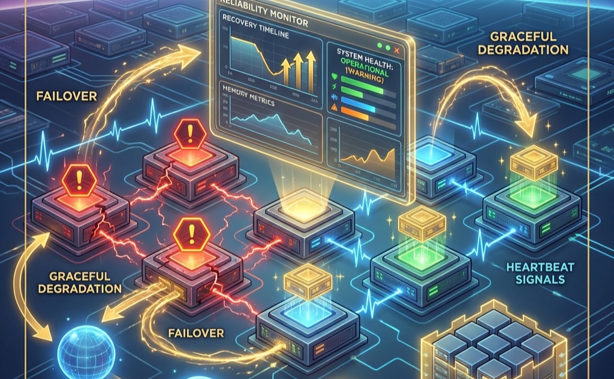

Failure Analysis at Scale
Fault Tolerance and Reliability

Purpose
Why does scale transform hardware failure from rare exception to routine condition that systems must absorb continuously?
A single GPU fails perhaps once per year. A thousand GPUs experience failures daily. A ten-thousand GPU cluster sees failures hourly. This arithmetic is inescapable: individual component reliability does not change, but aggregate system reliability degrades multiplicatively as components are added. At frontier scale, the question is not whether failures will occur during a training run but how many, and systems that cannot absorb failures without losing progress cannot operate at all. The same logic applies to serving: a globally distributed inference system experiences regional outages, network partitions, and capacity fluctuations as continuous background conditions rather than exceptional events. Fault tolerance at scale is not about preventing failures, because prevention is impossible. It is about designing systems where failures are expected, detected, isolated, and recovered from automatically, allowing useful work to continue despite the constant churn of components entering and leaving operational status.
Learning Objectives
- Calculate system-level MTBF from component failure rates and derive optimal checkpoint intervals using the Young-Daly formula to minimize wasted work
- Design distributed checkpoint and recovery strategies that coordinate state across thousands of GPUs while managing multi-terabyte checkpoint sizes
- Implement serving redundancy, replication, and failover mechanisms that maintain availability within millisecond latency requirements under partial failures
- Apply graceful degradation strategies including model fallback, feature fallback, and load shedding to maintain partial service when full capability is unavailable
- Construct observability infrastructure using metrics, logs, and distributed traces to diagnose non-deterministic failures and silent accuracy degradation
- Evaluate fault tolerance trade-offs across training and serving workloads by analyzing their distinct latency tolerances, state requirements, and recovery strategies
Imagine a 10,000-GPU cluster midway through a three-month training run for a new foundation model. Statistically, a GPU will fail every few hours. If the system is not designed to absorb these continuous physical failures, the training process will halt entirely, wasting millions of dollars in compute time. In the fleet stack (Introduction), Fault Tolerance acts as this necessary Immune System of the infrastructure layer. The challenges span the full failure spectrum, from hard crashes to silent data corruption, as Figure 1 illustrates.
{kind=link}
The distributed training systems examined in Distributed Training Systems achieve massive throughput by coordinating thousands of devices, and the collective communication patterns from Collective Communication—AllReduce, AllGather, AllToAll—sustain that coordination through rigidly synchronized exchanges. However, this tight synchronization creates fragility: a failure in any single device can stall the entire fleet. This chapter builds the resilience layer necessary to keep that fleet running.
The transition from small-scale experimentation to large-scale production changes the relationship between systems and failures. A researcher training a model on a single GPU might experience hardware failure once per year. That same researcher scaling to a 1,000 GPU cluster will experience failures multiple times per day. This shift from rare exception to routine occurrence demands different engineering approaches. The mathematical analysis that follows makes this transition precise and quantitative.
Understanding failure at scale requires abandoning the mindset that treats failures as bugs to be fixed. Individual component failures cannot be eliminated; they can only be managed. Memory errors, network partitions, storage corruption, and software crashes will occur with statistical regularity that increases predictably with system size. The engineering challenge is not to prevent these failures but to build systems that continue making progress despite them.
The implications for system design are profound. Fault-tolerant systems cannot assume that any operation will succeed; they must verify completion and handle failure as a normal code path. Recovery mechanisms cannot be afterthoughts tested occasionally; they must be exercised continuously to ensure they work when needed. Coordination protocols must account for partial failures where some components succeed while others fail, leaving the system in states that naive error handling would not anticipate.
The techniques developed in this chapter draw from decades of distributed systems research but apply that research to the specific characteristics of ML workloads. ML training exhibits properties that enable fault tolerance strategies unavailable to general distributed systems: the mathematical properties of stochastic gradient descent tolerate certain types of errors that would corrupt other computations, checkpoint sizes are large but predictable, and recovery targets need only be approximate rather than exact. Exploiting these properties enables fault tolerance mechanisms specifically optimized for ML that achieve better efficiency than general-purpose approaches.
The mathematics of inevitable failure
System reliability engineering provides the foundational framework for understanding failure at scale (Birolini 2017). Individual components exhibit failure rates characterized by the failure rate parameter \(\lambda\),1 measured in failures per unit time. For a single component with constant failure rate \(\lambda\), the probability of surviving without failure until time \(t\) follows an exponential distribution2:
1 Failure Rate (\(\lambda\)): Expressed in FITs (Failures In Time), where 1 FIT equals one failure per billion device-hours. A datacenter GPU with 50,000-hour MTBF has \(\lambda = 20\) FITs, which seems negligible for one device but becomes dominant at fleet scale: a 10,000-GPU cluster accumulates 200,000 FITs, translating to an expected failure every 5 hours.
2 Poisson Process: A statistical model for events occurring independently at a constant average rate. Reliability models assume hardware failures follow a Poisson distribution, leading to the exponential survival function \(R(t) = e^{-\lambda t}\). This assumption simplifies fleet planning: the probability of at least one failure in a 10,000-node cluster is \(1 - e^{-N \lambda t}\), making failure risk scale linearly with \(N\) but exponentially with \(t\).
\[ R_{single}(t) = e^{-\lambda t} \tag{1}\]
The mean time between failures (MTBF) for this component equals \(1/\lambda\). Modern GPUs in datacenter environments exhibit MTBF values ranging from 40,000 to 100,000 hours depending on operating conditions, cooling effectiveness, and manufacturing variation.3
3 GPU MTBF Variation: NVIDIA specifies A100 MTBF at approximately 50,000 hours under controlled conditions, but fleet telemetry from Google (Tensor Processing Unit (TPU) pods) and Meta (GPUs) consistently shows field failure rates 20–50 percent higher than manufacturer specifications. The gap arises from thermal stress, power fluctuations, and memory-intensive ML workloads that push components beyond the steady-state assumptions in reliability models.
When multiple independent components operate in a system where any single failure causes system failure, Equation 2 formalizes how system reliability becomes the product of individual component reliabilities:
\[ R_{system}(t) = \prod_{i=1}^{N} R_i(t) = \prod_{i=1}^{N} e^{-\lambda_i t} \tag{2}\]
For \(N\) identical components with individual failure rate \(\lambda\), this simplifies to:
\[ R_{system}(t) = e^{-N\lambda t} \tag{3}\]
The system failure rate becomes \(N\lambda\), and Equation 4 expresses how the system MTBF scales inversely with component count. This inverse scaling reveals the counterintuitive reality of the 9s of reliability at cluster scale:
\[ \text{MTBF}_{system} = \frac{1}{N\lambda} = \frac{\text{MTBF}_{component}}{N} \tag{4}\]
Figure 2 visualizes the fundamental tension: as clusters grow, the expected time between failures shrinks below common training durations, making fault tolerance not optional but physically necessary.
{kind=link}
The Young-Daly law: Optimal checkpointing
When failure is inevitable, the key engineering decision is how often to save progress. Checkpointing too frequently wastes time on I/O; checkpointing too rarely wastes time re-computing work after a failure.
The answer is given by the Young-Daly Checkpoint Law (Principle \(\ref{nte-young-daly}\)): the optimal checkpoint interval \(\tau_{\text{opt}} = \sqrt{2 \cdot T_{\text{write}} \cdot \text{MTBF}}\) balances the cost of writing checkpoints against the expected cost of reworking lost progress. As cluster size grows, MTBF drops, forcing more frequent checkpoints—demanding high-bandwidth storage to prevent I/O from dominating training time.
As Figure 3 illustrates, the Young-Daly formula4 identifies the “sweet spot” that minimizes total wasted work.
4 Young-Daly Formula: J. W. Young derived the first-order optimal checkpoint interval in a 1974 Communications of the ACM paper; John Daly independently refined it in 2006 with tighter second-order bounds. The formula’s square-root relationship (\(\tau_{\text{opt}} = \sqrt{2 \cdot T_{\text{write}} \cdot \text{MTBF}}\)) means that halving MTBF only increases optimal checkpoint frequency by \(\sqrt{2}\approx 1.4\times\), explaining why doubling cluster size does not demand doubling checkpoint I/O bandwidth.
{kind=link}
The formula \(\tau_{\text{opt}} = \sqrt{2 \cdot T_{\text{write}} \cdot \text{MTBF}}\) reveals a critical scaling property: as clusters grow larger (\(\text{MTBF} \downarrow\)), we must checkpoint more frequently. This, in turn, demands higher-bandwidth storage systems (Data Storage) to keep \(T_{\text{write}}\) small, otherwise the “Checkpoint Tax” will consume most of the cluster’s compute capacity, as Figure 4 quantifies.
{kind=link}
Napkin Math 1.1: The 9s of Reliability
The Math:
- Single GPU Success Probability (\(P_{1h}\)): A GPU failing once per year (8,760 hours) has hourly survival probability \(P_{1h} \approx 1 - 1/N_{\text{hours}}\) = 0.99989.
- Cluster Success Probability (\(P_{cluster}\)): \(P_{cluster} = (P_{1h})^{N}\).
- Calculation: \((P_{1h})^{N}\) \(\approx\) 0.32.
The Systems Conclusion: Even with 99.99 percent reliable hardware, a 10,000-GPU cluster has only a 32 percent chance of surviving a single hour without a failure. Hardware reliability alone is insufficient; software must handle failures automatically.
The linear relationship between component count and failure rate has a direct implication: scale transforms failure from a rare event into a continuous condition.
Systems Perspective 1.1: Scale Transforms Failure
Quantitative reliability analysis
Quantitative reliability analysis replaces qualitative descriptions with precise mathematical frameworks. Reliability engineering provides formal methods for calculating failure rates, predicting system availability, and designing fault tolerance strategies based on measurable metrics.
MTBF and FIT rate calculations
mean time between failures (MTBF) quantifies the expected operational time between successive failures. Complementing MTBF, the failures in time (FIT) rate provides a normalized measure, defined as the number of failures per billion (\(10^9\)) device-hours of operation:
\[\text{FIT} = \frac{10^9}{\text{MTBF}}\]
A GPU with MTBF of 50,000 hours has a FIT rate of \(10^9/50,000 = 20,000\) FIT.
System reliability composition
Complex ML systems comprise multiple components whose individual failure rates combine to determine overall system reliability.
For series systems (for example, a node where all 8 GPUs must work), failure of any component causes system failure. The system reliability \(R_{\text{sys}}\) is the product of individual component reliabilities: \[R_{\text{sys}} = \prod_{i=1}^{n} R_i\] The system MTBF for a series configuration is \(\text{MTBF}_{\text{sys}} = 1 / \sum \lambda_i\). This reveals the scaling challenge: adding components reduces system MTBF linearly.
For parallel systems providing redundancy (for example, active-active model replicas), failure occurs only when all redundant components fail simultaneously: \[R_{\text{sys}} = 1 - \prod_{i=1}^{n} (1 - R_i)\]
Worked example: GPU cluster reliability
Consider training a Archetype A (GPT-4/Llama-3) 70B model (Three systems archetypes) on 1,024 A100 GPUs. * GPU Logic: 4,000 FIT per GPU\(\times\) 1,024 = 4,096,000 FIT \(\rightarrow\) MTBF \(\approx\) 244 hours. * HBM2 Memory: 250 FIT per Mb. Total Mb = \(1,024 \times 80 \text{ GB} \times 8 \times 1,024 \approx 671 \text{M Mb}\). Total FIT \(\approx\) 167B FIT \(\rightarrow\) MTBF \(\approx\) 21 seconds.
Without ECC memory protection, large-scale training is impossible as corruption would occur every 21 seconds. With ECC providing a 100\(\times\) reduction in soft error rates, the memory MTBF improves to 36 minutes, and the combined system MTBF becomes approximately 35 minutes. This quantitative analysis justifies checkpoint frequencies of 15–30 minutes for large-scale training.
Worked example: Cluster MTBF calculation
Consider a training cluster designed for large language model development with the following specifications:
- 10,000 NVIDIA H100 GPUs
- Individual GPU MTBF: 50,000 hours
- Each GPU connected to host via PCIe (MTBF: 200,000 hours)
- Each node contains 8 GPUs with shared power supply (MTBF: 100,000 hours)
- Network infrastructure per node (NIC, cables): MTBF 150,000 hours
Step 1: Calculate failure rate per GPU subsystem
Each GPU operates within a failure domain that includes the GPU itself, its PCIe connection, and proportional shares of the power supply and network infrastructure.
\[ \lambda_{GPU} = \frac{1}{50,000} = 2.0 \times 10^{-5} \text{ failures/hour} \]
\[ \lambda_{PCIe} = \frac{1}{200,000} = 0.5 \times 10^{-5} \text{ failures/hour} \]
\[ \lambda_{power/GPU} = \frac{1}{8} \times \frac{1}{100,000} = 0.125 \times 10^{-5} \text{ failures/hour} \]
\[ \lambda_{network/GPU} = \frac{1}{8} \times \frac{1}{150,000} = 0.083 \times 10^{-5} \text{ failures/hour} \]
Step 2: Calculate total per-GPU failure rate
\[ \lambda_{total/GPU} = (2.0 + 0.5 + 0.125 + 0.083) \times 10^{-5} = 2.708 \times 10^{-5} \text{ failures/hour} \]
Step 3: Calculate cluster failure rate and MTBF
\[ \lambda_{cluster} = 10,000 \times 2.708 \times 10^{-5} = 0.2708 \text{ failures/hour} \]
\[ \text{MTBF}_{cluster} = \frac{1}{0.2708} = 3.69 \text{ hours} \]
This result means the cluster experiences a failure approximately every 3.7 hours on average. Over a 24-hour period, the expected number of failures is 6.5. A training run lasting one week will experience approximately 45 failures. Any training system operating at this scale must treat failure as a continuous condition, not an exceptional event.
Table 1 generalizes this analysis across cluster sizes, demonstrating the mathematical inevitability of frequent failures at scale.
| Cluster Size (GPUs) | Individual GPU MTBF | Cluster MTBF | Expected Failures per Day |
|---|---|---|---|
| 8 | 50,000 hrs | 6,250 hrs (260 days) | 0.004 |
| 64 | 50,000 hrs | 781 hrs (32 days) | 0.03 |
| 512 | 50,000 hrs | 98 hrs (4 days) | 0.24 |
| 1,000 | 50,000 hrs | 50 hrs (2 days) | 0.48 |
| 4,000 | 50,000 hrs | 12.5 hrs | 1.9 |
| 10,000 | 50,000 hrs | 5 hrs | 4.8 |
| 25,000 | 50,000 hrs | 2 hrs | 12.0 |
The theoretical 1/N scaling in Table 1 is not merely a textbook exercise. Figure 5 overlays published empirical measurements from Meta’s production clusters against the theoretical curve, confirming that the mathematics accurately predict real-world failure rates. The Kokolis et al. (2025) study of Meta’s Research SuperCluster measured MTTF values from 8-GPU allocations through 16,384-GPU jobs, and Meta’s Llama 3 training report independently documented 419 failures across 54 days on 16,384 H100 GPUs. Both datasets converge on the same conclusion: at 16,384 GPUs, the cluster experiences a failure every 2 to 3 hours. This empirical validation transforms the theoretical argument from an abstract scaling law into a measured engineering constraint that determines checkpoint frequency, recovery architecture, and infrastructure investment.
{kind=link}
Failure taxonomy
The MTBF calculations above quantify how often failures occur, which is critical for setting checkpoint intervals and sizing recovery infrastructure. Designing effective fault tolerance also requires understanding what kind of failures occur. A network partition that resolves in seconds demands different handling than a permanent GPU failure. A silent memory corruption that produces incorrect gradients requires different detection mechanisms than a node crash that stops responding entirely. Failure characteristics guide the selection of appropriate recovery mechanisms. The taxonomy presented here classifies failures along two primary dimensions: temporal behavior (transient vs. persistent) and failure manifestation (fail-stop vs. Byzantine).
Transient failures
Transient failures occur temporarily and resolve without intervention. Examples include:
- Network packet loss: Momentary congestion causes dropped packets, but retransmission succeeds
- Memory bit flips: Cosmic ray induced single-event upsets5 corrupt individual bits
5 Single-Event Upset (SEU): From particle physics, where “upset” denotes a non-destructive state change. Cosmic rays and alpha particles from chip packaging flip approximately one bit per gigabyte of RAM per month at sea level. ECC memory corrects single-bit errors but cannot handle multi-bit upsets in the same word, leaving a residual silent corruption rate that compounds across the terabytes of state in large-scale ML training. - Thermal throttling: Temporary performance reduction due to temperature spikes - Software timeouts: Temporary resource contention causes operation delays
6 Silent Data Corruption (SDC): Meta’s fleet-wide analysis found approximately 0.1 percent of training runs exhibited anomalous loss trajectories traceable to hardware errors that triggered no explicit exceptions. Detection required statistical monitoring of loss curves rather than traditional error handling, fundamentally changing the debugging model: in ML training, the absence of an error message does not imply correct computation.
Transient failures are particularly insidious in ML training because they may not trigger explicit errors. A transient memory bit flip during gradient computation produces incorrect gradients that propagate through subsequent training steps. The model continues training but produces subtly degraded results. Studies of large-scale training runs have documented cases where transient hardware errors caused training to diverge after hundreds of hours, wasting substantial compute resources (Vangal et al. 2021).6
The appropriate response to transient failures depends on detection capability. Errors that trigger explicit exceptions can be handled through retry logic. Silent corruption requires validation mechanisms such as gradient checksums, periodic model evaluation, and statistical monitoring of training dynamics.
Fail-stop failures
Fail-stop failures cause components to cease operation entirely and detectably. The failed component stops responding to requests and can be identified through timeout mechanisms. Examples include:
- GPU hardware failure: Memory errors cause device to become unresponsive
- Node crash: Operating system failure terminates all processes
- Network partition: Physical or logical disconnection isolates node from cluster
- Storage failure: Disk failure prevents checkpoint read/write operations
Fail-stop failures are the easiest class to handle because detection is straightforward: the component stops responding. Recovery involves replacing the failed component and restoring state from the most recent checkpoint. The primary challenge is minimizing detection time and recovery latency.
Detection time \(T_{\text{detect}}\) typically involves heartbeat mechanisms where each worker periodically signals liveness to a coordinator. If no heartbeat arrives within timeout period \(T_{\text{timeout}}\), the coordinator declares failure. Setting \(T_{\text{timeout}}\) requires balancing false positive rate against detection latency. False positives declare healthy workers failed due to transient delays, while slow detection wastes compute during the detection window.
For a heartbeat interval of \(H\) seconds and expected network delay variance \(\sigma_d\), Equation 5 defines the timeout heuristic:
\[ T_{\text{timeout}} = H + k\sigma_d \tag{5}\]
where \(k\) typically ranges from 3 to 5 to achieve low false positive rates while maintaining reasonable detection speed.
Byzantine failures
Fail-stop failures are relatively straightforward to handle: the component stops responding, the monitor detects its absence, and the orchestrator replaces it. A far more insidious class arises when a component continues operating but produces incorrect results. A GPU that returns wrong gradients without throwing errors, a network that delivers corrupted packets that pass CRC checks, or a worker that computes different results for identical inputs all exemplify Byzantine failures, the most challenging class in distributed systems.
The physics of silent corruption
At the nanometer scale of modern transistors, hardware is not deterministic; it is probabilistic. Two primary mechanisms drive silent data corruption (SDC):
- single-event upsets (SEUs): High-energy particles (cosmic rays at sea level, alpha particles from packaging materials) strike memory cells or logic gates, flipping a bit from 0 to 1. At 10,000+ GPUs, this is a statistical certainty.
- Manufacturing Variances: “Marginal” chips that pass initial QA may exhibit bit flips only under specific voltage/temperature conditions (for example, during the intense \(di/dt\) swings of a backward pass).
Facebook documented a pervasive SDC issue where a hardware fault caused a valid file to be reported as “size zero” during decompression (Vangal et al. 2021). As Figure 6 illustrates, the system “worked” (no crash), but data was silently deleted. In ML, this manifests as valid-looking but mathematically garbage gradients.
{kind=link}
Real-world evidence of SDC in production systems confirms these risks. Figure 7 shows corrupted data blocks accumulating in a shuffle and merge database at Google, where even a small fraction of corrupted blocks can cascade into significant data quality degradation.

Google reported that SDC in TPU pods often manifests as sudden, inexplicable spikes in gradient norm (Figure 8). A single bit flip in an exponent can turn a \(10^{-5}\) gradient into \(10^{20}\), destroying weeks of training.

Google addresses this by maintaining “hot spares”: running the same computation on two distinct chips or having a standby ready to take over. If a “sanity checker” (monitoring loss/gradients) detects an anomaly, the workload is instantly migrated to the hot spare, and the suspect chip is drained for diagnostics (Figure 9). This moves reliability from the component (which we cannot trust) to the system (which verifies the result).
{kind=link}
Checkpoint 1.1: Detecting Silent Corruption
Verify your understanding of non-stop failures and SDC:
Byzantine failures include:
- Silent data corruption: Memory or computation errors produce wrong values without triggering errors
- Numerical instability: Floating-point edge cases cause gradients to become not a number (NaN) or infinity
- Determinism violations: Race conditions cause different workers to compute different results for identical inputs
- Adversarial corruption: Malicious actors intentionally inject incorrect gradients
Byzantine failures are particularly dangerous in distributed training because the standard assumption that workers compute identical gradients for identical data no longer holds. A single Byzantine worker can corrupt the averaged gradient, potentially causing training to diverge or converge to a poor solution. Figure 10 contrasts the straightforward detection of fail-stop failures with the insidious nature of Byzantine corruption.
{kind=link}
Detection of Byzantine failures requires redundant computation. Multiple workers computing gradients for the same data enable comparison of results. Statistical outlier detection can identify workers consistently producing anomalous gradients. These detection mechanisms add computational overhead and may not catch subtle corruption.
Byzantine-resilient distributed training algorithms exist but impose significant overhead. Algorithms such as Krum (Blanchard et al. 2017) and coordinate-wise trimmed mean (Yin et al. 2018) compute aggregates that are robust to a bounded number of Byzantine workers, but they require more communication and computation than simple averaging. Robust AI examines hardware faults and Byzantine failures in greater depth, including detection mechanisms and algorithmic resilience strategies.7
7 Byzantine-Resilient ML: Named after Lamport’s 1982 “Byzantine Generals Problem,” these algorithms (Krum, trimmed mean, signSGD) tolerate a bounded fraction of corrupted workers, typically fewer than 50 percent. The trade-off is concrete: Krum requires \(O(n^2)\) pairwise gradient comparisons per step, adding 10–30 percent communication overhead in clusters exceeding 100 workers, which directly competes with the throughput gains of data parallelism.
{kind=link}
The bathtub curve and hardware lifecycle
The failure taxonomy above classifies failure types and domains, answering WHAT KIND of failures occur. Equally important for designing fault tolerance is understanding WHEN in a component’s lifetime failures are most likely to occur. Hardware failure rates are not constant over component lifetime. Figure 12 illustrates the bathtub curve, a well-established model in reliability engineering that describes how failure rates vary across three distinct phases:
The first phase, infant mortality, exhibits elevated failure rates from manufacturing defects, improper installation, and early-life wear-out of marginal components. This phase typically lasts days to weeks for electronic components. Burn-in testing8 operates components under stress conditions before deployment to precipitate infant mortality failures before production use.
8 Burn-in Testing: Components operate at elevated temperature (85–125 degrees C) and voltage for 24–168 hours to precipitate infant mortality failures before production. Cloud providers burn-in GPUs before deployment, which is why newly provisioned cloud instances typically exhibit lower initial failure rates than bare-metal deployments of fresh hardware.
After surviving infant mortality, components enter the useful life phase, where they exhibit relatively constant failure rates (Klutke et al. 2003). This phase represents the longest portion of component lifetime and is the period where the exponential reliability model in Equation 1 applies most accurately. For datacenter GPUs, the useful life phase typically spans 3–5 years.
As components age, they enter the wear-out phase, where failure rates increase due to accumulated wear. For GPUs, wear mechanisms include electromigration9 in circuits, thermal cycling stress on solder joints, and degradation of thermal interface materials. The onset of wear-out depends heavily on operating conditions; components operated at high temperatures or with frequent thermal cycling enter wear-out earlier.
9 Electromigration: Gradual displacement of metal atoms in conductors by electron momentum transfer, first characterized by Huntington and Grone in 1961. The failure rate follows Black’s equation, scaling exponentially with temperature and inversely with current density squared. For ML accelerators running sustained high-power workloads at nanometer-scale wire widths, electromigration is the dominant wear-out mechanism, making thermal management a direct determinant of fleet lifespan.
The practical implication for ML systems is that fleet-wide failure rates depend on age distribution. A cluster populated entirely with new GPUs will experience elevated failure rates during the first few weeks, followed by a stable period, then increasing failures as the fleet ages. Mixed-age fleets exhibit more consistent aggregate failure rates because different cohorts are in different lifecycle phases.
{kind=link}
The three phases in Figure 12 have direct operational consequences: burn-in testing filters infant mortality before deployment, while predictive analytics using GPU telemetry targets the wear-out phase. Proactive maintenance strategies aim to replace components approaching wear-out before they fail in production. Predictive analytics using GPU telemetry can identify components likely to fail soon. Temperature trends, error counts, and performance degradation enable scheduled replacement during maintenance windows rather than unplanned outages during training runs.
Model-type diversity in failure impact
While the mathematics of failure rates apply universally, the cost of failure differs dramatically across model types. The impact of losing an hour of training depends on what that training costs, how much state must be recovered, and how long recovery takes. Table 3 quantifies these factors across model architectures, revealing orders-of-magnitude variation from LLMs incurring millions of dollars in wasted compute to vision models losing modest amounts of progress.
| Model Type | Typical Training Duration | Checkpoint Size | State Sensitivity | Failure Cost |
|---|---|---|---|---|
| Archetype A (GPT-4/Llama-3) | 2–4 weeks | 350–700 GB | High (position in curriculum) | $2–5M compute per 24hr loss |
| Vision (ViT-Large) | 1–3 days | 1–2 GB | Medium (augmentation state) | $10–50K per day loss |
| Archetype B (DLRM at Scale) | Continuous | 2–4 TB (embeddings) | Very High (embedding freshness) | Revenue impact per hour |
| Speech (Whisper-scale) | 3–7 days | 5–10 GB | Medium | $50–200K per day loss |
| Scientific (AlphaFold) | Days to weeks | 10–50 GB | High (exploration state) | Research delay |
Large Language Models experience the highest absolute failure costs due to their extended training durations and the computational expense of each training hour. A GPT-4 scale training run consuming 25,000 GPUs at approximately $2 per GPU-hour incurs $1.2M in compute costs per day. A failure that loses 24 hours of training progress costs $1.2M in wasted compute plus schedule delay. The checkpoint overhead for models with hundreds of billions of parameters can itself become significant, with 700 GB checkpoints requiring several minutes to write even with fast distributed storage.
Recommendation Systems present unique challenges because their training is often continuous rather than episodic. The value of a RecSys model derives partly from its freshness. Embeddings that capture recent user behavior outperform stale embeddings. A failure that loses hours of embedding updates may degrade recommendation quality in ways that directly impact revenue. Meta has documented that recommendation model freshness directly correlates with engagement metrics, making recovery time a business-critical metric.10
10 RecSys Freshness: Meta’s Deep Learning Recommendation Model (DLRM) infrastructure documents that embedding staleness measured in hours produces measurable degradation in recommendation relevance and engagement metrics. This inverts the typical fault tolerance priority: for recommendation systems, minimizing recovery time matters more than minimizing checkpoint overhead, because stale embeddings directly reduce revenue.
Vision Models occupy a middle ground with moderate training durations and manageable checkpoint sizes. The relatively small checkpoints enable frequent checkpointing with minimal overhead. A vision transformer (ViT) such as ViT-Large produces checkpoints of 1–2 GB, imposing little overhead. Data augmentation state represents the primary state beyond model weights that must be preserved for reproducible recovery. Current augmentation parameters and data shuffling seed must be captured.
Scientific Models such as those used in protein structure prediction or climate simulation often have unique state requirements beyond model parameters. AlphaFold-style training may maintain exploration state tracking which protein families have been sampled, preventing repetition during recovery. Drug discovery models may track which molecular configurations have been evaluated. This domain-specific state complicates checkpoint and recovery design.
Economic framework for fault tolerance investment
Fault tolerance mechanisms consume resources: storage for checkpoints, bandwidth for checkpoint writes, compute cycles for redundant calculations, and engineering time for implementation and maintenance. Rational investment in fault tolerance requires quantifying both the cost of failures and the cost of prevention.
Failure costs include wasted compute, schedule delay, opportunity cost, and engineering time. Wasted compute measures GPU-hours expended on training steps that must be repeated. Schedule delay captures how extended time to a trained model impacts business timelines. Opportunity cost recognizes that compute consumed by recovery cannot be used for other training. Engineering cost accounts for time spent debugging failures and manually recovering.
Prevention costs include storage, throughput overhead, recovery infrastructure, and complexity. Storage cost scales with model size and checkpoint frequency. Checkpoint writes consume memory bandwidth and may stall training. Recovery infrastructure requires spare capacity and automated recovery systems. Fault tolerant systems are harder to develop and debug.
Optimal investment in fault tolerance balances these costs. For small-scale training on a few GPUs where failures are rare, minimal fault tolerance may be cost-optimal. Infrequent checkpoints and manual recovery suffice. For large-scale training on thousands of GPUs where failures occur multiple times daily, extensive fault tolerance provides positive return on investment. Frequent checkpoints, automatic recovery, and elastic training become essential. Figure 3 visualizes how the trade-off between checkpoint overhead and recovery cost reaches an optimum that depends on both system MTBF and checkpoint write time.
Equation 6 presents a simplified economic model for expected cost per training run:
\[ C_{total} = C_{compute} + E[N_{failures}] \times C_{per\_failure} + C_{ft} \tag{6}\]
where \(C_{compute}\) is the base compute cost, \(E[N_{failures}]\) is the expected number of failures during training, \(C_{per\_failure}\) is the cost per failure, and \(C_{ft}\) is the cost of fault tolerance mechanisms. The cost per failure includes wasted compute plus overhead.
Equation 7 formalizes when fault tolerance investment is justified:
\[ \frac{\partial C_{\text{ft}}}{\partial x} < \frac{\partial (E[N_{\text{failures}}] \times C_{\text{per-failure}})}{\partial x} \tag{7}\]
where \(x\) represents investment in fault tolerance mechanisms. In practice, this means investing in fault tolerance until the marginal cost of additional protection exceeds the marginal reduction in failure costs.
Three foundational principles guide every design decision in this domain.
Systems Perspective 1.2: Three Rules of Failure at Scale
- At scale, failures are continuous, not exceptional. A 10,000-GPU cluster experiences failures every few hours. Systems must be designed expecting failure as normal operation.
- The optimal checkpoint interval is \(\tau_{\text{opt}} = \sqrt{2 \times T_{\text{save}} \times \text{MTBF}}\). The Young-Daly formula provides quantitative guidance for checkpoint frequency. This formula is derived in Section 1.6.
- Training and serving have fundamentally different fault tolerance requirements. Training tolerates minutes of recovery time; serving requires milliseconds. This difference demands entirely different approaches.
The divergence between training and serving requirements shapes every resilience decision. Before engineering recovery mechanisms, the physical realities of what breaks must be understood. The following taxonomy covers the specific hardware faults that trigger these failures.
Hardware Fault Taxonomy
Consider what happens when a cosmic ray flips a single bit in a GPU’s High Bandwidth Memory, or when thermal expansion causes a microscopic fracture in an NVLink connector. These physical events cascade into software errors that can corrupt a multi-week training run. Hardware faults represent the foundational layer of failure in distributed ML systems because all computations ultimately execute on this vulnerable physical hardware.
Hardware fault impact on ML systems
ML systems amplify the consequences of hardware faults beyond what traditional applications experience. Computational intensity creates millions of opportunities per second for faults to corrupt results. Training runs lasting days or weeks increase the probability of encountering faults. Small corruptions in model weights can cause large changes in output predictions, and distributed dependencies mean that a single-point failure can disrupt entire workflows.
A single bit-flip in a weight matrix illustrates the severity. If a critical weight in a ResNet-50 model flips from 0.5 to -0.5 due to a transient fault affecting the sign bit in the IEEE 75411 floating-point representation, the sign of a feature map reverses, causing a cascade of errors through subsequent layers. Research has shown that a single, targeted bit-flip in a key layer can drop ImageNet accuracy from 76 percent to less than 10 percent (Reagen et al. 2018). Unlike traditional software where a single bit error might cause a crash, in neural networks it can silently corrupt the learned representations that determine system behavior.
11 IEEE 754 (1985): Standardized by William Kahan at Berkeley, this format uses 1 sign bit, 8 exponent bits, and 23 mantissa bits for FP32. The bit layout creates an asymmetric vulnerability for ML: a sign-bit flip inverts a weight entirely (\(0.5 \to -0.5\)), while a single exponent-bit flip can shift magnitude by \(2^{64}\times\) or more, explaining why one bit-flip in a neural network weight can collapse accuracy from 76 percent to below 10 percent.
The reliability problem is worsening. As the ML fleet scales to sub-5nm process nodes (Compute Infrastructure), the failures in time (FIT) rate for silent data corruption (SDC) rises: smaller nodes have lower critical charges, making bit-flips from cosmic rays and thermal noise more frequent, while chips with billions of transistors have higher statistical probabilities of manufacturing defects that manifest only under specific ML workloads (Ma and Patterson 2024). ML system architects must treat hardware as an unreliable substrate, where algorithmic fault tolerance (gradient checksums, weight replication, periodic consistency checks in the MLOps pipeline (ML Operations at Scale)) is a mandatory requirement rather than an HPC specialty.
Hardware faults fall into three categories based on temporal characteristics, as Figure 13 summarizes.
{kind=link}
{kind=link}
{kind=link}
{kind=link}
Transient faults are temporary disruptions caused by external factors such as cosmic rays or electromagnetic interference (Ziegler et al. 1996); they cause incorrect computations without permanent hardware damage and can corrupt gradient updates during training or alter model weights during inference. Permanent faults represent irreversible damage from physical defects or component wear-out, such as stuck-at faults or device failures that require hardware replacement; for long-running training jobs, they can mean days or weeks of lost computation. Intermittent faults appear and disappear sporadically due to unstable conditions like loose connections or aging components, causing non-deterministic behavior that compromises model validation and reproducibility.
Transient faults
Transient faults are the most common category. Figure 14 illustrates the basic mechanism: a single bit in memory unexpectedly changes state, potentially altering critical data or computations in ways that cascade through neural network layers.
{kind=link}
Transient faults encompass several distinct categories: Single Event Upsets (SEUs) from cosmic rays and ionizing radiation, voltage fluctuations (Reddi and Gupta 2013) from power supply instability, electromagnetic interference (EMI), electrostatic discharge (ESD), crosstalk, ground bounce, timing violations, and soft errors in combinational logic (Mukherjee et al. 2005).
Quantitative fault rates
Advanced semiconductor processes exhibit dramatically higher soft error rates. Modern 7 nm processes experience approximately 1000\(\times\) higher soft error rates compared to 65 nm nodes due to reduced node capacitance and charge collection efficiency (Baumann 2005), translating to base error rates of approximately 1 error per \(10^{14}\) operations. GPUs12 exhibit 10–1000\(\times\) higher transient error rates than CPUs, driven by thousands of simpler cores operating at aggressive voltage/frequency points with minimal per-core error protection. These fault rates translate into MTBF13 values that differ substantially across deployment contexts: cloud AI accelerators (V100, A100) achieve 50,000–100,000 hours under controlled data center conditions, while edge AI processors achieve 20,000–40,000 hours. In distributed training, these values compound: a cluster of 1,000 accelerators with individual MTBF of 50,000 hours experiences an expected failure every 50 hours, necessitating robust checkpointing.
12 GPU Fault Rates: GPUs exhibit 10–1,000\(\times\) higher transient error rates than CPUs, driven by 5,000+ simpler cores (vs. 24–48 CPU cores) operating at aggressive voltage/frequency points with minimal per-core error protection. HBM2 memory in a V100 sustains 900 GB/s bandwidth with narrower ECC coverage than server DRAM, creating a larger silent corruption surface for the gradient and weight data that dominates ML workloads.
13 MTBF (Mean Time Between Failures): Formalized by the U.S. military in MIL-HDBK-217 (1965), MTBF assumes exponential failure distributions during the useful-life period. For ML training, MTBF feeds directly into the Young-Daly formula: a cluster with 50,000-hour per-device MTBF and 1,000 devices has a system MTBF of 50 hours, demanding checkpoints every 1–2 hours to keep wasted compute below 1 percent of total training time.
Memory subsystems are the most vulnerability-prone components, and fault tolerance mechanisms impose a direct bandwidth tax. Table 4 quantifies this cost across memory technologies:
| Memory Technology | Base Bandwidth (GB/s) | ECC Overhead (%) | Effective Bandwidth (GB/s) |
|---|---|---|---|
| DDR4-3200 | 51.2 | 12.5 percent | 44.8 |
| HBM2 | 900 | 12.5 percent | 787 |
| HBM3 | 1,600 | 12.5 percent | 1,400 |
| GDDR6X | 760 | Typically none | 760 |
HBM exhibits 10\(\times\) higher error rates than standard DRAM due to 3D stacking effects and thermal density, requiring advanced ECC for reliable operation. GDDR, optimized for bandwidth over reliability, typically has 2–3\(\times\) higher error rates than standard DRAM but often omits ECC entirely. Background memory scrubbing—periodic reads and rewrites to detect accumulating soft errors—consumes an additional 2–5 percent of total bandwidth over a typical 24-hour scan cycle.
Transient fault impact on ML
Figure 15 illustrates the physical mechanism: cosmic rays strike sensitive hardware areas like memory cells or transistors, inducing charge disturbances that alter stored or transmitted data.
During training, transient faults in the memory storing model weights or gradients lead to incorrect updates that compromise convergence and accuracy (He et al. 2023; Wan et al. 2021). During inference, a bit flip in the activation values of a neural network can alter the final classification or regression output (Mahmoud et al. 2020). In safety-critical applications, these faults can result in incorrect decisions that compromise safety (Li et al. 2017; Jha et al. 2019). Resource-constrained environments amplify these vulnerabilities: Binarized Neural Networks (BNNs) (Courbariaux et al. 2016), which represent weights in single-bit precision, suffer performance degradation from 98 percent to 70 percent test accuracy when random bit-flipping soft errors are inserted with 10 percent probability (Aygun et al. 2021). In distributed training, network partitions1415 affect 1–10 percent of nodes daily, and in synchronous training, even a single partitioned rank blocks the entire AllReduce collective.
14 Network Partition: From Lamport’s 1978 formalization of distributed system failure modes. Large-scale training clusters report partition events affecting 1–10 percent of nodes daily; in synchronous training, even a single partitioned rank blocks the entire AllReduce collective, making partition tolerance a prerequisite for training jobs exceeding a few hours.
15 InfiniBand Subnet Manager (SM): A centralized software entity that discovers all nodes and switches, assigns Local Identifiers (LIDs), and calculates routing tables. In a network partition, the SM’s role is critical: it must re-discover the new topology and update routing within milliseconds. If the SM itself is partitioned, the fabric can enter a “zombie” state where nodes are physically connected but cannot route messages, a common cause of \(T_{\text{detect}}\) delays in large training runs.
Permanent faults
Permanent faults are irreversible hardware defects that persist until the faulty component is repaired or replaced. They arise from two primary sources: manufacturing defects (improper etching, incorrect doping, contamination) and wear-out mechanisms (electromigration16, oxide breakdown17, thermal stress18). The most common manifestation is the stuck-at fault (Seong et al. 2010), where a signal or memory cell becomes permanently fixed at 0 or 1 regardless of input.
16 Electromigration: Gradual displacement of metal atoms in conductors by electron momentum transfer, first characterized by Huntington and Grone in 1961. The failure rate follows Black’s equation, scaling exponentially with temperature and inversely with current density squared. For ML accelerators running sustained high-power workloads at nanometer-scale wire widths, electromigration is the dominant wear-out mechanism, making thermal management a direct determinant of fleet lifespan.
17 Oxide Breakdown: Irreversible gate oxide failure creating conductive paths through the transistor insulator. Gate oxide thickness shrank from 100 nm (1980s) to less than 1 nm in modern FinFETs, dramatically increasing susceptibility. Time-dependent dielectric breakdown (TDDB) now limits chip reliability projections, making oxide integrity a fleet-planning concern for ML accelerator deployments spanning 3–5 year hardware refresh cycles.
18 Thermal Stress: Degradation from repeated temperature cycling that cracks solder joints and degrades thermal interface materials. ML accelerators under sustained training loads experience thermal throttling that reduces throughput by 20–60 percent as clock speeds drop to prevent damage. The trade-off is direct: aggressive cooling (liquid, immersion) extends component lifespan and maintains training throughput but increases datacenter infrastructure cost by 30–50 percent.
The Intel FDIV bug, discovered in 1994, illustrates the consequences. An error in the lookup table used by the Pentium processor’s division unit caused incorrect results for specific operations (Figure 16). The error was small—a mistake in the fifth digit—but it compounded across operations, corrupting precision-critical applications. For ML systems, analogous permanent faults in floating-point units introduce persistent errors during training or inference that propagate through the model, leading to inaccurate predictions. This is especially critical in safety-sensitive applications (Responsible Engineering).

Figure 17 visualizes how stuck-at faults propagate through logic gates and interconnects, causing incorrect computations or persistent data corruption that affects downstream model behavior.
{kind=link}
For ML systems, permanent faults during training cause gradient calculation errors and parameter corruption that persist until hardware replacement, requiring more sophisticated recovery strategies than transient faults demand (He et al. 2023). Permanent faults in storage can compromise entire training datasets or saved models (J. J. Zhang et al. 2018). Mitigating permanent faults requires integrated fault-tolerant design combining hardware redundancy and error-correcting codes (Kim et al. 2015) with checkpoint and restart mechanisms19 (Egwutuoha et al. 2013). The Young-Daly formula, derived in Data Storage, balances checkpoint overhead against lost computation; the key insight is that increasing MTBF through hardware hardening yields diminishing returns due to the square-root relationship, so systems must balance investment in hardware reliability against investment in fast checkpointing infrastructure.
19 Checkpoint-restart: Originated in 1960s mainframe batch processing, where restarting multi-hour jobs from scratch was prohibitively expensive. Modern distributed training checkpoints 100+ GB model states every 10–30 minutes; Google’s TPU pods achieve 99.9 percent training completion rates through coordinated checkpointing, reducing wasted computation from node failures to less than 1 percent of total training time.
Intermittent faults
Intermittent faults occur sporadically and unpredictably, making them the most challenging category to diagnose. Physical degradation (cracks in solder joints, aging ball grid arrays, residue-induced electrical connections) creates conditions where faults appear only under specific thermal, voltage, or workload conditions (Figure 18). Intermittent delay faults (J. Zhang et al. 2018) cause signal propagation times to fluctuate, resulting in synchronization issues and incorrect computations that are difficult to reproduce.

Figure 19 reveals how residue-induced intermittent faults in DRAM chips create unreliable electrical connections that lead to sporadic failures.
{kind=link}
For ML systems, intermittent faults in processing units or memory cause sporadic gradient computation errors that accumulate across iterations, degrading convergence without triggering explicit failures (He et al. 2023; Rashid et al. 2015). Mitigating these faults requires a multi-layered approach (Rashid et al. 2012): runtime monitoring and anomaly detection at the software level, robust environmental controls and higher-quality components at the hardware level, and adaptive resource management (load balancing, dynamic scaling) to maintain operation during fault episodes.
Hardware fault detection and mitigation
Detecting and mitigating hardware faults in ML systems requires techniques at both the hardware and software levels. At the hardware level, two foundational mechanisms protect against the fault classes described earlier.
Built-in self-test (BIST) (Bushnell and Agrawal 2002) incorporates additional circuitry for self-testing using scan chains20 that apply predefined test patterns to internal logic during system startup. BIST catches manufacturing defects and permanent faults before they corrupt production workloads.
20 Scan Chains: Test infrastructure linking internal flip-flops into shift registers, developed in the 1970s for IC design-for-testability. The trade-off is concrete: 5–15 percent silicon area overhead buys 95 percent+ manufacturing fault coverage. For ML accelerators with billions of transistors in matrix-multiply units, scan-based testing during burn-in catches the stuck-at faults that would otherwise silently corrupt weight and gradient computations in production.
21 Hamming Codes (1950): Richard Hamming invented error-correcting codes at Bell Labs after repeated frustration with relay computer failures corrupting weekend batch jobs. His SECDED (single-error-correcting, double-error-detecting) scheme uses parity bits at power-of-2 positions to locate errors with \(O(\log n)\) overhead. Every modern ECC DRAM module descends from this design, protecting the terabytes of model weights and optimizer state in ML training from the soft errors that would otherwise accumulate silently.
22 CRC (Cyclic Redundancy Check): Polynomial checksum algorithm developed by W. Wesley Peterson in 1961, detecting over 99.9 percent of transmission errors with negligible computational overhead. In distributed ML training, CRC-32 validates gradient payloads exchanged during AllReduce across thousands of nodes; without this check, a single corrupted gradient packet would silently poison the parameter update for every worker in the collective.
Error detection and correction codes21 (Hamming 1950) add redundant bits to detect and correct bit errors. Figure 20 illustrates the simplest form: parity checks append an extra bit to each data word, enabling immediate detection when a bit flip occurs. More advanced codes such as cyclic redundancy checks (CRC)22 compute checksums that detect over 99.9 percent of transmission errors, a capability critical for validating gradient payloads during distributed AllReduce operations.
{kind=link}
Hardware redundancy uses component duplication and voting to detect and mask faults (Sheaffer et al. 2007). Double modular redundancy (DMR)23 duplicates computation and compares outputs at 100 percent silicon overhead; triple modular redundancy (TMR)24 performs computation three times and takes a majority vote at 200 percent overhead, enabling automatic single-fault correction (Arifeen et al. 2020). Figure 22 shows how a TMR voter circuit masks a single faulty unit by selecting the majority output. Tesla’s Full Self-Driving computer uses DMR across two independent system on chip (SoC) units (Figure 21), while the Boeing 777 uses TMR in its primary flight computer for safety-critical aviation control (Yeh 1996; Bannon et al. 2019).
23 DMR (Double Modular Redundancy): Duplicates computation and compares outputs to detect (but not correct) errors, at 100 percent silicon overhead vs. TMR’s 200 percent. DMR detects 99.99 percent of transient faults in critical paths. Tesla’s Full Self-Driving computer uses DMR across two independent SoCs, reflecting the design trade-off: DMR halves the hardware cost of TMR while requiring a safe fallback policy when outputs disagree.
24 TMR (Triple Modular Redundancy): Performs computation three times and takes a majority vote, enabling automatic single-fault correction at 200 percent hardware overhead. Developed for the Apollo Guidance Computer (1960s), TMR remains the standard for space-grade ML inference where cosmic radiation rates are orders of magnitude higher than at sea level, achieving error rates below \(10^{-12}\) per operation.
{kind=link}
{kind=link}
At the software level, distributed ML systems employ runtime monitoring (Francalanza et al. 2017; Mahmoud et al. 2021), anomaly detection (statistical outlier detection, One-Class SVM (Chandola et al. 2009)), consistency checks across distributed model parameters (Lindholm et al. 2019), and heartbeat mechanisms (Kawazoe Aguilera et al. 1997) that detect node failures within configurable timeout periods. Software-implemented fault tolerance (scale-invariant feature transform (SIFT)) techniques (Reis et al. 2005) such as N-version programming and Reed-Solomon error correction codes (Plank 1997) add redundancy at the software level, enabling detection and correction of errors without dedicated hardware. Watchdog timers (Pont and Ong 2002) monitor task execution and trigger recovery actions when systems become unresponsive.
Self-Check: Question
A ResNet-50 training job suddenly shows 1 incorrect layer output in 10 million forward passes, with no repeat at the same address after a memory scrub. No further errors are observed for the next 24 hours on that device. Which hardware fault category best matches this signature?
- Transient fault
- Permanent fault
- Intermittent fault
- Wear-out fault
A single bit flip in a ResNet-50 weight can drop ImageNet top-1 accuracy from 76 percent to below 10 percent. Explain what about ML workloads amplifies a single-bit hardware fault into this scale of output collapse, drawing on the chapter’s IEEE 754 layout argument.
Why can software-only fault injection overestimate or underestimate real system vulnerability compared with physical hardware fault injection?
- Because software tools always inject larger faults than hardware produces.
- Because software tools ignore the computational graph and can only modify weights.
- Because software tools miss low-level masking and microarchitectural effects that may prevent a hardware fault from reaching the application.
- Because hardware faults never affect memory, only logic units.
True or False: Triple modular redundancy corrects a single faulty computation by majority voting, but it does so at much higher hardware cost than double modular redundancy.
Order the following protection path from earliest to latest in a typical hardware fault-defense flow: (1) Correct or detect the error with ECC/CRC, (2) A fault occurs in hardware, (3) Trigger higher-level recovery if corruption escapes local protection.
Software Faults
A team spends three months fine-tuning an LLM to be perfectly robust against adversarial prompt injections, only to realize that their preprocessing script accidentally truncated all inputs at 512 tokens, silently discarding the system prompt entirely. In the pursuit of complex algorithmic robustness, engineers often overlook the most common cause of ML failure: mundane software bugs. In ML systems, a logic error in a data loader does not crash the pipeline; it just subtly degrades the gradient, making software faults uniquely catastrophic.
Software faults differ fundamentally from hardware failures. Hardware faults result from the physics of silicon and electrons, while software faults result from human errors in system design and implementation. These faults can corrupt any aspect of the AI pipeline, from data preprocessing and model training to inference and result interpretation, often in subtle ways that may not be immediately apparent.
The practical challenge of software faults lies in their ability to interact with and amplify every other system threat. A bug in data preprocessing might create the distribution shifts that expose model vulnerabilities. Implementation errors in numerical computations might corrupt model behavior in ways that evade detection. Race conditions in distributed training might cause model corruption that resembles adversarial attacks on learned representations.
These interactions arise from the inherent complexity of modern AI software stacks, which span frameworks, libraries, runtime environments, distributed systems, and deployment infrastructure. Each layer boundary creates an opportunity for faults to emerge and propagate, making software-level mitigation essential for production-scale reliability.
Software fault properties and propagation
Software faults in ML frameworks range from syntactic and logical errors to memory leaks,25 concurrency bugs, and integration failures. They propagate across system boundaries: an error in a tensor allocation routine can cascade to disrupt training, inference, or evaluation in seemingly unrelated modules. Some faults are intermittent, manifesting only under specific conditions such as high system load, particular hardware configurations, or rare data inputs.
25 Memory Leak: A programming error where allocated memory is never released. In ML systems, GPU memory leaks are uniquely destructive because accelerator memory is scarce (40–80 GB per device) and shared across the entire training pipeline. A single leaked tensor per batch—perhaps from a debugging hook left in production—can exhaust GPU memory within hours, causing silent OOM failures that kill long-running training jobs without checkpointing.
Resource mismanagement is a prominent failure class. GPU memory allocations accumulate across training iterations as intermediate activations, optimizer states, and gradient buffers are allocated but not released, until the allocator exhausts available capacity and raises an out-of-memory error mid-batch. A 70B parameter model in BF16 with AdamW optimizer states requires roughly 840 GB of GPU memory across a node, leaving virtually no headroom for unexpected buffer growth. Memory pressure builds gradually over hundreds of iterations, making root-cause attribution difficult without per-layer memory profiling.
Concurrency and synchronization errors constitute another recurring fault class. In distributed or multi-threaded environments, incorrect coordination among parallel processes leads to race conditions,26 deadlocks,27 or inconsistent states. A bug in a high-level library might only manifest when paired with a specific version of a low-level numerical library such as cuDNN or MKL, requiring a holistic view of the system to identify root causes.
26 Race Condition: A timing bug where system behavior depends on the uncontrolled sequence of concurrent events. In asynchronous distributed training, if multiple workers update the same parameter weight simultaneously without proper locking or versioning, updates can be lost or overwritten, leading to divergence or “ghost” weights that ruin convergence without triggering an error.
27 Deadlock: A state where two or more processes are permanently blocked, each waiting for the other to release a resource. In pipelined training, a deadlock can occur if Stage 1 is waiting for a free buffer to send activations to Stage 2, while Stage 2 is waiting for Stage 1 to receive backward gradients, halting the entire fleet.
Software fault detection and prevention
Addressing software faults requires an integrated strategy spanning development, testing, deployment, and monitoring. Table 5 organizes detection and mitigation approaches by lifecycle phase.
| Category | Technique | Purpose | When to Apply |
|---|---|---|---|
| Testing and Validation | Unit testing, integration testing, regression testing | Verify correctness and identify regressions | During development |
| Static Analysis and Linting | Static analyzers, linters, code reviews | Detect syntax errors, unsafe operations, enforce best practices | Before integration |
| Runtime Monitoring & Logging | Metric collection, error logging, profiling | Observe system behavior, detect anomalies | During training and deployment |
| Fault-Tolerant Design | Exception handling, modular architecture, checkpointing | Minimize impact of failures, support recovery | Design and implementation phase |
| Update Management | Dependency auditing, test staging, version tracking | Prevent regressions and compatibility issues | Before system upgrades or deployment |
| Environment Isolation | Containerization (for example, Docker, Kubernetes), virtual environments | Ensure reproducibility, avoid environment-specific bugs | Development, testing, deployment |
| CI/CD and Automation | Automated test pipelines, monitoring hooks, deployment gates | Enforce quality assurance and catch faults early | Continuously throughout development |
Systematic testing (unit, integration, and regression) forms the first line of defense (Figure 23). Automated CI/CD pipelines (Figure 24) embed testing, validation, and monitoring directly into the software delivery process, with gates at each stage that reduce the risk of unnoticed regressions.

{kind=link}
Self-Check: Question
Which software fault is most likely to halt a distributed training pipeline without crashing the processes, leaving workers waiting on one another indefinitely?
- Memory leak
- Deadlock
- Syntax error
- Model drift
Explain why a software bug in ML can be harder to detect than a bug in a traditional application that simply crashes.
Two data-loader workers update a shared epoch counter without a lock; after several runs, accuracy silently drifts on the second worker even though no errors are thrown. Explain what is going wrong and describe one synchronization or versioning mechanism that would eliminate the class of bug involved.
A team wants to reduce environment-specific bugs caused by inconsistent library and runtime versions across development, testing, and deployment. Which mitigation from the section is most directly targeted at that problem?
- Containerization and environment isolation
- Increasing checkpoint frequency
- Adding more model replicas
- Reducing batch size
Check-and-Verify: Defending Against Silent Data Corruption
As clusters scale to 100,000+ GPUs, the probability of a “Silent Data Corruption” (SDC) event—where an ALU or HBM bit flip occurs without triggering ECC or hardware alerts—approaches certainty during large collective operations. Standard AllReduce algorithms assume that if a node is “alive,” its data is correct. In the machine learning fleet, we must transition to a Byzantine fault tolerance mindset: “Trust, but verify.”
Napkin Math 1.2: Napkin Math: The SDC Certainty
- Fleet Size: 100,000 accelerators.
- Individual Risk: \(10^{-6}\) per hour (a conservative estimate for SDC).
- The Exposure: In a 2-second window, the fleet has \(100,000 \times (2/3600) \approx 55\) “GPU-hours” of exposure.
- The Probability: \(P(\text{at least one SDC}) \approx\) 0.0056%.
The Systems Insight: In a 100k-GPU fleet, a silent error occurs every 18,000 steps (roughly every 10 hours). If your AllReduce does not implement Checksummed Collectives or Hash-and-Verify gradients, your model parameters will silently drift into “Numerical Garbage” within half a day. Robustness moves from being a “Restart” problem to a Verification problem: the fleet must perform redundant reductions or use parity-protected gradients to catch the silent killer of scale.
Self-Check: Question
True or False: In a 100,000-GPU training fleet, if every worker still responds to heartbeats, the main remaining risk is delay rather than correctness, so restart-based handling is usually sufficient.
A 100,000-GPU fleet performs a 2-second training step while each GPU has roughly 10^-6 chance of SDC per hour. Explain why checksummed collectives or hash-and-verify gradients become valuable even though each individual device’s hourly risk is tiny, and what the practical cadence of corruption looks like at this scale.
A team is scaling synchronous training to 100,000 GPUs and sees occasional unexplained loss anomalies even though no node crashes. Which design change best matches the section’s recommendation?
- Assume the anomalies are harmless because the collectives completed successfully.
- Reduce checkpoint frequency so fewer anomalous states are saved.
- Add checksummed or redundant verification of collective results so live-but-corrupted workers can be detected.
- Spread requests across more load balancers so corrupted gradients are less concentrated.
Fault Injection Tools and Frameworks
Proving that a multi-node training cluster can survive a sudden network partition requires more than hope. Engineers do not wait for a real hurricane to take out a data center; they deliberately sever the network connection in a staging environment and observe what the orchestration layer does. Fault injection is the engineering discipline of deliberately breaking a system—flipping memory bits, dropping network packets, and corrupting API responses—to empirically verify that robustness mechanisms work before real chaos arrives.
Fault and error models
Hardware faults manifest in various ways: transient, permanent, and intermittent. Beyond the type of fault, its manifestation characteristics matter equally. A fault may strike a memory cell or corrupt a functional unit mid-computation. It may affect a single bit or multiple bits simultaneously. It may propagate to the application level and cause an observable error, or it may be masked by microarchitectural redundancy and remain benign. These characteristics define the fault model, which plays a major role in simulating and measuring what happens to a system when a fault occurs.
To study and understand the impact of hardware faults on ML systems, understanding the concepts of fault models and error models is essential. A fault model describes how a hardware fault manifests itself in the system, while an error model represents how the fault propagates and affects the system’s behavior.
Fault models are classified by several key properties. First, they can be defined by their duration: transient faults are temporary and vanish quickly; permanent faults persist indefinitely; and intermittent faults occur sporadically, making them difficult to identify or predict. Another dimension is fault location, with faults arising in hardware components such as memory cells, functional units, or interconnects. Faults can also be characterized by their granularity: some faults affect only a single bit (for example, a bitflip), while others impact multiple bits simultaneously, as in burst errors.
Error models, in contrast, describe the behavioral effects of faults as they propagate through the system. These models help researchers understand how initial hardware-level disturbances might manifest in the system’s behavior, such as through corrupted weights or miscomputed activations in an ML model. These models may operate at various abstraction levels, from low-level hardware errors to higher-level logical errors in ML frameworks.
The choice of fault or error model is central to robustness evaluation. For example, a system built to study single-bit transient faults (Sangchoolie et al. 2017) will not offer meaningful insight into the effects of permanent multi-bit faults (Wilkening et al. 2014), since its design and assumptions are grounded in a different fault model entirely.
The implementation context of an error model also matters. A single-bit flip at the architectural register level, modeled using simulators like gem5 (Binkert et al. 2011), differs meaningfully from a similar bit flip in a PyTorch model’s weight tensor. While both simulate value-level perturbations, the lower-level model captures microarchitectural effects that are often abstracted away in software frameworks.
Certain fault behavior patterns remain consistent regardless of abstraction level. For example, research has consistently demonstrated that single-bit faults cause more disruption than multi-bit faults, whether examining hardware-level effects or software-visible impacts (Sangchoolie et al. 2017; Papadimitriou and Gizopoulos 2021). However, other important behaviors like error masking (Mohanram and Touba 2003) may only be observable at lower abstraction levels. This masking phenomenon can cause faults to be filtered out before they propagate to higher levels (Figure 25) (Ko 2021), meaning software-based tools may miss these effects entirely.
{kind=link}
Hardware-based fault injection
Hardware-based fault injection methods allow researchers to directly introduce faults into physical systems and observe their effects on ML models. These approaches are essential for validating assumptions made in software-level fault injection tools and for studying how real-world hardware faults influence system behavior. While most error injection tools used in ML robustness research are software-based, because of their speed and scalability, hardware-based approaches remain critical for grounding higher-level error models.
Hardware injection methods
Two of the most common hardware-based fault injection methods are FPGA-based fault injection and radiation or beam testing.
FPGA-based Fault Injection. Field-Programmable Gate Arrays (FPGAs)28 are reconfigurable integrated circuits that can be programmed to implement various hardware designs. By modifying the FPGA configuration, faults can be introduced at specific locations and times during the execution of an ML model.
28 FPGA (Field-Programmable Gate Array): Reconfigurable hardware (Xilinx, 1985) containing millions of programmable logic blocks. For fault injection, FPGAs provide bit-level targeting precision that software-based tools cannot match.
Radiation or Beam Testing. Radiation or beam testing (Velazco et al. 2010) exposes hardware running ML models to high-energy particles like protons or neutrons. Specialized test facilities enable controlled radiation exposure to induce bitflips and other hardware-level faults, providing highly realistic fault scenarios that mirror conditions in radiation-rich environments.
Software-based fault injection
Software-based fault injection tools simulate the effects of hardware faults by modifying a model’s underlying computational graph, tensor values, or intermediate computations. These tools integrate directly with ML development pipelines, require no specialized hardware, and allow researchers to conduct large-scale fault injection experiments quickly and cost-effectively.
One of the most influential tools is PyTorchFI (Mahmoud et al. 2020), a dedicated fault injection library for PyTorch developed in collaboration with Nvidia Research. PyTorchFI allows fault injection into key components of ML models, including weights, activations, and gradients. Even simple bit-level faults can cause severe visual and classification errors, including the appearance of ‘phantom’ objects where none exist.
Bridging hardware-software gap
While software-based fault injection tools offer many advantages in speed and flexibility, they do not always capture the full range of effects that hardware faults can impose on a system. This is largely due to the abstraction gap: software-based tools operate at a higher level and may overlook low-level hardware interactions or nuanced error propagation mechanisms.
To address this gap, researchers have developed tools like Fidelity (He et al. 2020), which aim to map low-level hardware error behavior to software-visible effects. By studying how faults originating in hardware move through various layers—including architectural registers, memory hierarchies, and numerical operations—Fidelity ensures that injected faults in software reflect the way faults would actually manifest in a physical system.
Checkpoint 1.3: Knowledge Check
While hardware and software faults represent distinct failure mechanisms, they ultimately manifest as system-level events that must be managed by the reliability logic established earlier in this chapter.
Hardware fault summary
Table 6 provides a comparative analysis of transient, permanent, and intermittent faults, outlining the primary characteristics that distinguish these fault types across duration, persistence, causes, and ML system impact. Understanding these dimensions guides the selection of appropriate detection and mitigation strategies for each fault category.
| Dimension | Transient Faults | Permanent Faults | Intermittent Faults |
|---|---|---|---|
| Duration | Short-lived, temporary | Persistent, remains until repair or replacement | Sporadic, appears and disappears intermittently |
| Persistence | Disappears after the fault condition passes | Consistently present until addressed | Recurs irregularly, not always present |
| Causes | External factors (for example, electromagnetic interference cosmic rays) | Hardware defects, physical damage, wear-out | Unstable hardware conditions, loose connections, aging components |
| Manifestation | Bit flips, glitches, temporary data corruption | Stuck-at faults, broken components, complete device failures | Occasional bit flips, intermittent signal issues, sporadic malfunctions |
| Impact on ML | Introduces temporary errors | Causes consistent errors or | Leads to sporadic and unpredictable errors, |
| Systems | or noise in computations | failures, affecting reliability | challenging to diagnose and mitigate |
| Detection | Error detection codes, comparison with expected values | Built-in self-tests, error detection codes, consistency checks | Monitoring for anomalies, analyzing error patterns and correlations |
| Mitigation | Error correction codes, redundancy, checkpoint and restart | Hardware repair or replacement, component redundancy, failover mechanisms | Robust design, environmental control, runtime monitoring, fault-tolerant techniques |
The practical question is how distributed training systems detect these faults and recover from them without losing days of computation.
Self-Check: Question
A team wants to answer a specific question: ‘Does microarchitectural masking reduce the number of faults from cosmic rays that actually reach our deployed image classifier?’ Which experimental setup most directly answers that question, and why?
- Inject single-bit flips into weight tensors in PyTorch and count prediction changes, because tensor-level injection is the fastest way to measure resilience.
- Run FPGA-based injection or beam testing that targets architectural registers, because this is the only setup where ECC, overwrite, and speculative-squash masking can actually intervene before the fault reaches software.
- Compute an analytical bound from ECC coverage rates and skip empirical injection, because masking can be derived from datasheet parameters.
- Use a tool like Fidelity in software-only mode and assume the mapping fully captures masking, because it is designed to bridge the hardware-software gap.
A researcher wants to study whether ECC and microarchitectural masking reduce the number of faults that actually reach an ML application. Why is beam testing or other hardware-based injection more informative than injecting tensor bit flips in software?
Why might a tool like Fidelity be useful when studying ML robustness?
- It eliminates the need for any physical testing.
- It maps low-level hardware fault behavior into software-visible effects to narrow the abstraction gap.
- It guarantees that single-bit faults are harmless in neural networks.
- It replaces all error models with a single universal model.
Training Fault Tolerance
When a top-of-rack switch dies two weeks into a 175-billion parameter model training run, the cluster loses 64 GPUs instantly. The system cannot simply restart from scratch; the sunk cost is too high. The failure analysis in Failure Analysis at Scale established that large-scale training systems will experience such failures frequently, requiring robust mechanisms to preserve and resume progress.
To survive these inevitable hardware failures without catastrophic loss of compute time, the training system must periodically save its state. The primary mechanism for this state preservation is checkpointing.
Self-Check: Question
True or False: For large distributed training jobs, restarting from scratch after a node failure is often acceptable because failures are rare compared with total run time.
Explain why checkpointing becomes the primary training fault-tolerance mechanism once failures are expected to occur during a run.
Checkpointing: Preserving Progress
Definition 1.1: Checkpointing
Checkpointing is the periodic serialization of the complete training state (parameters, optimizer state, and data loader position) to persistent storage.
- Significance (Quantitative): It minimizes the Lost Work after a system failure. Within the iron law, checkpointing creates an I/O Overhead that reduces the total training throughput (\(\eta\)), with the optimal interval (\(T_{\text{opt}}\)) governed by the Young-Daly Formula (\(T_{\text{opt}} = \sqrt{2 \cdot T_{\text{save}} \cdot \text{MTBF}}\)).
- Distinction (Durable): Unlike Incremental Backups, Checkpointing must capture the Exact Execution Context (including random seeds and learning rate schedules) to ensure deterministic resumption of the optimization loop.
- Common Pitfall: A frequent misconception is that Checkpointing is “just writing to disk.” In reality, for large models, it is a Storage System Stress Test: the simultaneous write from thousands of GPUs can trigger a checkpoint storm that saturates the entire network fabric (\(\text{BW}\)).
A training cluster that loses power without state preservation loses millions of dollars worth of gradient updates computed over the preceding weeks. The defense is to periodically write the model state to durable storage. Checkpointing captures sufficient state to resume training from a recorded point: model parameters, optimizer state,29 training progress indicators, and random state for reproducibility.
29 Adam Optimizer State: Adaptive Moment Estimation (Adam) maintains per-parameter first-moment (\(m\)) and second-moment (\(v\)) estimates, tripling memory requirements compared to vanilla SGD (3\(\times\): parameters + two state vectors). For a 175B parameter model, optimizer state alone reaches 1.4 TB, which typically dominates checkpoint size and recovery time, making optimizer state the primary bottleneck in checkpoint I/O design.
Checkpoint interval from failure analysis
Checkpointing involves a critical trade-off: frequent checkpoints minimize lost work when failures occur but consume time and resources, while infrequent checkpoints minimize overhead but risk losing substantial work to failures.
The Young-Daly formula introduced in Section 1.0.2 provides the optimal checkpoint interval: \(T_{\text{opt}} = \sqrt{2 \times T_{\text{save}} \times \text{MTBF}}\). The failure analysis in this chapter enables the calculation of the MTBF term required by this formula.
Example 1.1: Optimal Checkpoint Interval
Applying the Young-Daly formula to a real-world scenario illustrates its practical value.
Scenario: A team is training Llama-3 on a cluster of 16,000 GPUs.
- Checkpoint Cost (\(C\)): It takes 2 minutes to save the model state to shared storage.
- Mean Time Between Failures (\(M\)): At this scale, the cluster experiences a silent data corruption or node failure every 3 hours (180 minutes).
Objective: Find the optimal checkpoint interval \(\tau\) that minimizes wasted time.
Calculation: \[ \tau_{\text{opt}} = \sqrt{2 \cdot C \cdot M} \] \[ \tau_{\text{opt}} = \sqrt{2 \cdot (2 \text{ min}) \cdot (180 \text{ min})} = \sqrt{720} \approx \mathbf{26.8 \text{ minutes}} \]
Result: You should checkpoint roughly every 27 minutes.
- Checkpointing every 10 mins: Too much time spent writing to disk (\(17\%\) overhead).
- Checkpointing every 60 mins: Too much work lost when the inevitable crash happens (\(15\%\) overhead).
- At 27 mins: You minimize the combined cost of overhead and recovery (\(7\%\) total overhead).
Figure 26 illustrates the fundamental trade-off: checkpointing too frequently wastes time saving state, while checkpointing too rarely wastes computation when failures occur. The Young-Daly formula identifies the optimal balance point.
{kind=link}
The U-shaped cost curve in Figure 3 visualizes this trade-off: checkpoint overhead decreases as intervals lengthen, while rework cost from failures increases linearly. The optimal point minimizes their sum.
For our 10,000 GPU cluster with calculated system MTBF of 3.69 hours (from Section 1.0.4) and checkpoint time of 21 seconds (from 2.1 TB checkpoint at 100 GB/s), the Young-Daly formula computes the optimal interval.
Napkin Math 1.3: The Young-Daly Optimal Interval
The Math: Apply the Young-Daly formula: \(\tau_{\text{opt}} = \sqrt{2 \cdot T_{\text{save}} \cdot \text{MTBF}}\)
- Convert to common units: MTBF = 3.69 \(\times\) 3,600s = 13,284 seconds.
- Calculate: \(\tau_{\text{opt}} = \sqrt{2 \cdot 21 \cdot 13,284} = \sqrt{557,928} \approx\) 747 seconds.
- Result: \(\tau_{\text{opt}} \approx\) 12.4 minutes.
The Systems Insight: At this interval, the “Checkpoint Tax” (time spent saving + time spent re-computing) is minimized to approximately 5.6 percent. Checkpointing every hour instead would increase failure risk, wasting nearly 10 percent of the cluster’s capacity. As clusters scale, the optimal interval must shrink to keep up with the falling MTBF.
This result demonstrates why failure analysis matters: without knowing the system MTBF, we cannot set checkpoint intervals rationally. With this interval, checkpoint overhead consumes approximately 2.8 percent of training time. However, practitioners should be aware of the Young-Daly formula assumptions that underpin this estimate.
The Young-Daly formula provides valuable intuition but rests on assumptions that may not hold in practice:
- Exponentially distributed failures: Assumes constant failure rate. Real systems exhibit “bathtub curve” behavior with higher rates during burn-in and wear-out phases.
- Deterministic checkpoint time: Assumes \(T_{\text{save}}\) is constant. In practice, checkpoint time varies 2–3\(\times\) due to storage contention, network congestion, and memory pressure.
- Recovery time equals checkpoint time: Assumes recovery reads same data written during checkpoint. Often recovery takes 3–5\(\times\) longer due to job scheduling delays, topology reconstruction, and warmup.
- Single failure mode: Assumes one failure at a time. Correlated failures (power, cooling, shared switch) violate this assumption.
- Infinite timeline: Optimal for long training runs. Short runs (where total time is comparable to MTBF) require different analysis.
When assumptions are violated, the optimal interval may shift significantly. As a rule of thumb, if restart overhead significantly exceeds checkpoint time, use \(\sqrt{2 \times (T_{\text{save}} + T_{\text{restart}}) \times \text{MTBF}}\) instead.
Figure 27 makes the temporal cost of failures concrete by showing the sequence of events during a training run: productive computation, periodic checkpoints, a failure event, and the recovery process with its associated wasted work.
{kind=link}
The timeline in Figure 27 reveals why \(T_{\text{restart}}\) matters as much as \(T_{\text{save}}\): the total failure cost is the sum of lost work (bounded by \(\tau_{\text{opt}}\)) and recovery time, which includes job scheduling, checkpoint loading, and pipeline warmup. Production systems where \(T_{\text{restart}}\) exceeds \(T_{\text{save}}\) by 3–5\(\times\) should use the modified formula that accounts for both terms.
Checkpoint overhead analysis
Beyond the time consumed by checkpoint writes, checkpointing imposes additional overhead through memory consumption and training disruption.
Checkpoint serialization requires memory buffers for gathering distributed state and preparing data for write. For synchronous checkpointing, all workers must hold their checkpoint data in memory until the checkpoint completes. This potentially requires significant additional memory allocation.
Synchronous checkpointing pauses training while the checkpoint writes. Even with fast storage, the pause disrupts the training pipeline and may cause GPU idle time. Data loading and forward passes cannot proceed during checkpoint operations.
Equation 8 quantifies the wasted time due to checkpointing:
\[ O_{ckpt} = \frac{T_{\text{save}}}{T_{\text{interval}}} + \frac{T_{\text{pause}}}{T_{\text{interval}}} \tag{8}\]
where \(T_{\text{pause}}\) represents any training pause beyond the checkpoint write time. This includes memory allocation, coordination, and serialization.
The “stop-the-world” cost
The financial impact of synchronous checkpointing at scale is severe. Consider a 10,000 GPU cluster training a frontier model. * Idle Resource: 10,000 H100 GPUs. * Pause Duration: 2 minutes (typical for multi-TB checkpoints on shared storage). * Wasted Compute: \(10,000 \times \frac{2}{60} \approx 333\) GPU-hours. * Financial Loss: At ~$3/GPU-hour, a single checkpoint costs $1,000 in wasted idle time.
If checkpoints occur hourly, the system wastes $24,000 per day waiting for storage I/O. This economic reality drives the aggressive adoption of asynchronous checkpointing strategies that move data movement off the critical path.
Table 7 reveals how checkpoint characteristics vary dramatically by model architecture: larger models require longer write times but also benefit from correspondingly longer optimal intervals.
| Model Type | Checkpoint Size | Write Time (100 GB/s) | Optimal Interval (5hr MTBF) | Overhead |
|---|---|---|---|---|
| Archetype A (GPT-4/Llama-3) | 2.1 TB | 21 s | 14.5 min | 2.4 percent |
| GPT-3.5 (20B) | 240 GB | 2.4 s | 4.6 min | 0.9 percent |
| BERT-Large | 1.3 GB | 0.013 s | 22 s | 0.06 percent |
| Archetype B (DLRM at Scale) | 4 TB | 40 s | 20 min | 3.3 percent |
| ResNet-50 | 100 MB | 0.001 s | 6 s | 0.02 percent |
| ViT-Large | 1.2 GB | 0.012 s | 21 s | 0.06 percent |
While the theoretical overhead of checkpointing appears manageable for individual models, writing these massive state files introduces a new bottleneck. When thousands of GPUs simultaneously attempt to write gigabytes of data to a shared file system, the resulting I/O congestion threatens to bring the entire cluster to a halt—a phenomenon known as the checkpoint storm.
War Story 1.1: The Checkpoint Storm
While Table 7 suggests modest overhead percentages, real deployments often encounter checkpoint times far exceeding these theoretical estimates. Diagnosing such discrepancies requires examining the full system stack.
Example 1.2: Debugging Checkpoint Overhead
The fleet stack Diagnosis
The fleet stack framework (Introduction) structures our investigation across three layers:
infrastructure layer Analysis
Analysis begins at the bottom of the stack, examining the hardware constraints:
- Model state size: 70B parameters\(\times\) 2 bytes (BF16) = 140 GB for weights, plus 280 GB for Adam optimizer states (first and second moments), totaling approximately 420 GB per checkpoint
- Storage system: Shared NFS filer with 10 Gbps network attachment
- Theoretical bandwidth: 10 Gbps = 1.25 GB/s maximum throughput
- Minimum write time: 420 GB / 1.25 GB/s = 336 seconds (5.6 minutes)
The infrastructure layer reveals our first insight: even with perfect efficiency, the NFS bandwidth cannot achieve a 2-minute checkpoint for this model size.
Distribution Layer Analysis
Moving to the middle layer, the checkpoint coordination is examined:
- Checkpoint mode: Synchronous, all 512 GPUs pause and wait
- Write pattern: All 64 nodes writing simultaneously to shared NFS
- Observed behavior: 10-minute writes instead of the 5.6-minute theoretical minimum
The Distribution Layer reveals contention: 64 nodes competing for 10 Gbps creates severe congestion. Each node effectively receives only 20 MB/s (10 Gbps/64 nodes), extending checkpoint time to 420 GB / 0.01953125 GB/s ≈ 358 minutes per node if writes were serialized. The observed 10 minutes reflects partial parallelism with significant queuing delays.
Governance Layer Analysis (Control Plane)
At the top layer, organizational constraints are considered:
- SLA requirement: Training must complete within 2 weeks
- Current trajectory: 30 percent overhead extends training to 2.6 weeks
- Budget impact: Extended training incurs additional $500K in compute costs
The Solution: Layer-Aware Fix
Understanding all three layers enables a targeted solution:
- infrastructure layer: Install local Non-Volatile Memory Express (NVMe) staging drives (3.5 GB/s per node)
- Distribution Layer: Implement asynchronous checkpointing:
- Phase 1: GPU \(\rightarrow\) CPU memory copy (fast, 32 GB/s PCIe)
- Phase 2: CPU \(\rightarrow\) local NVMe (3.5 GB/s, training resumes)
- Phase 3: Background NVMe \(\rightarrow\) NFS copy (overlapped with training)
- Validation: New checkpoint overhead drops to 12 seconds (GPU-to-CPU copy), reducing training impact from 30 percent to under 1 percent
This example illustrates the fleet stack principle: diagnosing distributed systems failures requires examining all layers. A purely algorithmic fix (Distribution Layer) would fail because the physical bandwidth was insufficient. A purely hardware fix (infrastructure layer) would be wasteful without understanding the coordination pattern. The solution required changes at multiple layers working in concert.
Synchronous vs. asynchronous checkpointing
The synchronous and asynchronous checkpointing approaches create different failure recovery trade-offs. Synchronous checkpointing guarantees a globally consistent state, with all workers at the same training step, simplifying recovery logic. All workers coordinate to reach a consistent state, write their portions, and resume training only after all writes complete.
Asynchronous checkpointing reduces training disruption but requires tracking which workers have completed which checkpoints, adding complexity to recovery coordination. Workers snapshot their state to CPU memory or staging storage, then continue training while a background process writes the snapshot to persistent storage.30
30 Asynchronous Checkpointing: Pipelines the checkpoint write behind training computation by staging GPU state to CPU memory via CUDA streams, then writing to storage on a background thread. DeepSpeed’s implementation achieves near-zero checkpoint overhead when sufficient CPU staging memory is available, decoupling the checkpoint I/O latency from the training critical path at the cost of 2\(\times\) peak host memory consumption.
Checkpoint storage and recovery
The tiered checkpoint storage architecture described in Data Storage—with local NVMe for speed, distributed filesystem for durability, and object storage for long-term retention, provides the storage foundation on which recovery mechanisms operate. This section focuses on how recovery mechanisms use that infrastructure rather than the storage design itself.
For fault tolerance, the critical concern is not where checkpoints are stored but how quickly they can be read during recovery. Recovery time depends on storage tier bandwidth: local NVMe enables fastest recovery (5–10 GB/s per node), distributed filesystems provide moderate speed with durability (50–200 GB/s aggregate), while object storage offers slowest recovery but highest durability for disaster recovery scenarios.
Distributed checkpointing
Recovery from distributed checkpoints for sharded models requires understanding the coordination protocols that ensure checkpoint consistency. When training spans multiple workers, two primary approaches exist: centralized checkpointing where a coordinator gathers all state and writes a single checkpoint, and distributed checkpointing where each worker writes its own portion of the checkpoint.
Centralized checkpointing
In centralized checkpointing, workers send their state to a coordinator process that assembles and writes the complete checkpoint. This approach simplifies checkpoint management and produces self-contained checkpoint files but creates scalability bottlenecks.
All state flows through the coordinator, creating a network bottleneck. The coordinator must have memory for the entire checkpoint, creating a memory bottleneck. Coordinator failure loses the checkpoint operation, creating a single point of failure.
Centralized checkpointing works acceptably for small-scale distributed training but becomes impractical at large scale. Tens of workers can be supported, but not hundreds or thousands.
Distributed checkpointing
In distributed checkpointing, each worker writes its portion of the checkpoint to a shared filesystem or object storage, as Figure 28 contrasts with the centralized approach. A coordinator signals when to checkpoint and confirms completion, but state flows directly from workers to storage without aggregation.
{kind=link}
The coordination protocol proceeds in six steps:
- Coordinator broadcasts checkpoint request with checkpoint ID
- Each worker reaches a consistent state (barrier synchronization)
- Each worker writes its shard to
checkpoint_<id>/worker_<rank>.pt - Each worker confirms write completion to coordinator
- Coordinator writes checkpoint metadata after all confirmations
- Coordinator broadcasts checkpoint complete, training resumes
This protocol ensures that either all workers complete their writes or the checkpoint is incomplete. Valid checkpoints have complete metadata. Incomplete checkpoints have missing metadata and can be detected. Partial checkpoints can be garbage collected. In practice, the strictness of this coordination defines distinct checkpoint consistency models.
Systems Perspective 1.3: Checkpoint Consistency Models
Strict Synchronous: All workers checkpoint at exactly the same training step. Provides strongest consistency but highest overhead from barrier synchronization.
Bounded Asynchronous: Workers may be within \(k\) steps of each other (typically \(k=1–3\)). The checkpoint manager tracks the “checkpoint wavefront” across workers. Recovery uses the earliest consistent cut across all shards. This trades perfect consistency for dramatically reduced synchronization overhead and is what production systems actually use.
Eventual Consistency: Workers checkpoint when convenient, reconcile during recovery. Lowest overhead but requires complex recovery logic to reconstruct consistent state.
The basic protocol has a subtle correctness bug. If the coordinator crashes after some workers confirm but before writing metadata, those workers believe the checkpoint succeeded while the system has no valid checkpoint.
Production systems use two-phase commit31 to ensure correctness. Two-phase commit is a classic distributed systems protocol (Gray 1978):
31 Two-Phase Commit (2PC): Formalized by Jim Gray in 1978, 2PC ensures all participants either commit or abort atomically. The protocol’s known weakness is blocking: if the coordinator fails between prepare and commit, participants wait indefinitely. For distributed checkpointing this blocking is acceptable because a stuck checkpoint can be timed out and retried, whereas the alternative (partial checkpoint writes) would leave the system with an unrecoverable inconsistent state.
In the prepare phase, workers write to staging location and report success to coordinator. In the commit phase, coordinator atomically renames or commits all shards together. For example, the coordinator moves files from staging/ to checkpoints/. If the coordinator fails between phases, workers detect during next heartbeat and rollback staged writes.
This ensures atomic checkpoint commits. Either all shards are committed together, or none are.
Consistency is a critical consideration in this protocol. In distributed training with synchronous gradient updates, workers naturally reach consistent states at step boundaries. Checkpointing at step boundaries ensures all workers have applied the same updates. With asynchronous training or pipeline parallelism, defining and reaching consistent states requires more careful coordination.
Sharded checkpointing
Modern distributed training frameworks partition model state across workers using techniques like ZeRO (Zero Redundancy Optimizer) and FSDP (Fully Sharded Data Parallel). In these configurations, no single worker holds complete model state. Each worker holds only its assigned parameter shard plus corresponding optimizer state.
Sharded checkpointing32 (Rajbhandari et al. 2020) uses this distribution: each worker writes only its shard, dramatically reducing per-worker write volume. Recovery loads shards and redistributes state to workers based on the recovery configuration.
32 Sharded Checkpointing: Each worker saves only its local partition rather than gathering state to a single writer. For ZeRO-3 or FSDP with 1,000 workers training a 175B model, each worker writes approximately 2.1 GB instead of one writer handling 2.1 TB, parallelizing I/O across all nodes. The trade-off: recovery requires all shards to be present and consistent, making the checkpoint protocol more complex and the failure of any single shard’s storage fatal to the entire checkpoint.
This approach enables efficient checkpointing even for massive models. A 175B parameter model with 2.1 TB checkpoint distributed across 1,000 workers requires each worker to write only 2.1 GB, achievable in seconds with local NVMe storage.
When recovering with a different number of workers than the checkpoint, shard redistribution must remap state to the new worker configuration. This occurs due to elastic scaling or hardware changes. Modern frameworks support flexible resharding, enabling recovery even when the worker count changes. However, possessing a valid checkpoint is not sufficient on its own. The system must first identify that a failure has occurred and trigger the restoration. The speed of this detection—and the subsequent recovery—determines the true cost of the interruption.
Even with efficient sharded checkpointing strategies mitigating the I/O storm, saving state is only half the battle. When a node fails, the system must recognize the failure and orchestrate the restoration of these distributed shards to resume training. The mechanics of failure detection and recovery determine how quickly that restoration begins.
Self-Check: Question
A team measures checkpoint save time at 2 minutes and cluster MTBF at 3 hours. According to the Young-Daly formula, what should happen to the optimal checkpoint interval if MTBF drops to 45 minutes while save time stays constant?
- It should shrink, but only with square-root sensitivity rather than linearly.
- It should remain unchanged because save time dominates the formula.
- It should double because failures are more frequent.
- It should grow because shorter MTBF implies more overhead from writing.
Explain why a large-model checkpoint is described as a storage system stress test rather than ‘just writing to disk.’
A team’s 70B-model checkpoints are causing long stop-the-world pauses on shared storage. Which change most directly attacks the pause on the training critical path, even if total bytes written eventually stay similar?
- Move to asynchronous checkpointing with staging in CPU memory or local NVMe so persistent writes happen in the background.
- Increase heartbeat timeouts so workers are less likely to restart during a checkpoint.
- Have rank 0 gather all state and write a single unified file to simplify recovery.
- Write checkpoints less often but keep the same synchronous all-workers pause.
Order the following distributed checkpoint protocol steps: (1) Workers confirm shard write completion, (2) Coordinator broadcasts a checkpoint request with an ID, (3) Coordinator writes metadata after all confirmations, (4) Each worker writes its shard.
Why do production checkpoint systems often add two-phase commit or atomic rename semantics on top of a simple worker-write protocol?
- To reduce checkpoint size by compressing optimizer state during commit.
- To ensure the coordinator can safely shuffle worker ranks after every checkpoint.
- To avoid a state where some shards appear written but no globally valid checkpoint exists after coordinator failure.
- To guarantee that recovery always uses the newest checkpoint regardless of corruption.
A team uses the Young-Daly interval but still sees much higher effective overhead than predicted. Explain two assumptions from the section that could be violated and how each would shift the practical optimum.
Failure Detection and Recovery
A GPU silently hangs, dropping its utilization to zero while its peer GPUs wait indefinitely at an AllReduce barrier. Every minute the system takes to notice this straggler and reboot the node costs thousands of dollars in idle cluster time. Checkpoints preserve state, but the recovery process itself determines how much compute a failure wastes.
Equation 9 decomposes recovery time into four primary components:
\[ T_{\text{recovery}} = T_{\text{detect}} + T_{\text{restart}} + T_{\text{load}} + T_{\text{warmup}} \tag{9}\]
where:
- \(T_{\text{detect}}\): Time between the actual hardware fault and the system classifying it as a failure
- \(T_{\text{restart}}\): Time for the job scheduler to allocate new resources and launch replacement processes
- \(T_{\text{load}}\): I/O time to read checkpoint state from distributed storage into GPU memory
- \(T_{\text{warmup}}\): Time for the system to refill the data pipeline, compile just-in-time (JIT) kernels, and stabilize throughput
Each component presents distinct optimization opportunities, and the dominant term varies by cluster configuration. Understanding this decomposition enables targeted investment in the bottleneck rather than uniform improvement across all components.
Failure detection mechanisms
Detection is the first line of defense, governed by a fundamental trade-off between speed and false positive rate. A timeout that is too aggressive mistakes temporary network jitter for a node failure, triggering an unnecessary and expensive restart. A timeout that is too conservative allows the entire cluster to sit idle while a dead node holds up synchronization.
Heartbeat monitoring is the standard mechanism: each worker periodically sends “I am alive” signals to a central coordinator or monitoring service. Missing heartbeats trigger failure classification. The heartbeat interval \(H\) and timeout \(T_{\text{timeout}}\) control the trade-off. In high-scale clusters, heartbeat arrival times often follow a heavy-tailed distribution due to network congestion, necessitating adaptive timeouts rather than static thresholds. Production systems typically use \(T_{\text{timeout}} = H + k\sigma_d\) where \(k\) ranges from 3 to 5 and \(\sigma_d\) is the observed network delay variance.
Collective communication timeouts provide a second detection layer. During synchronous training, collective operations (AllReduce, Broadcast) are blocking: if a single rank fails silently—a frozen GPU driver, for instance—every other rank in the communicator hangs indefinitely waiting for data that will never arrive. NCCL33 provides configurable timeout parameters for this purpose. In practice, the NCCL_TIMEOUT is often set conservatively (10–20 minutes) to avoid crashing jobs during legitimate periods of slow communication, which unfortunately extends \(T_{\text{detect}}\).
33 NCCL Timeout: NVIDIA’s collective communication library defaults to a 30-minute timeout (NCCL_TIMEOUT), which means a silently failed GPU can stall an entire training cluster for 30 minutes before detection. Reducing this to 5 minutes accelerates failure detection but risks false positives during legitimate long AllReduce operations on large models, forcing a trade-off between detection latency and training stability that has no universal optimum.
Container orchestration health checks provide a third layer. Kubernetes and SLURM offer liveness probes (verifying that processes are running) and readiness probes (verifying that processes are ready to handle requests). These operate independently of the training framework, catching failures that application-level heartbeats might miss—such as a process that is alive but deadlocked.
Loss spike detection catches the most insidious failure mode: silent data corruption. Hardware errors that do not crash the process but corrupt the mathematical result—bit flips in ALU logic, for instance—manifest as sudden, catastrophic spikes in the loss function. The loss jumps \(10\times\text{--}100\times\) or collapses to NaN instantly. Unlike gradient explosions caused by high learning rates, these spikes occur without hyperparameter changes. Robust systems instrument the training loop to pause immediately upon detecting such anomalies, pinpoint the rank with the corrupted gradient via checksums or replay, and drain that node before restarting from the last healthy checkpoint.
Training dynamics monitoring extends detection beyond explicit errors. Monitoring loss values, gradient norms, and activation statistics can detect Byzantine failures that produce incorrect results without triggering exceptions. Sudden loss spikes, gradient explosions, or statistical anomalies in per-rank gradient distributions may indicate silent corruption that would otherwise go undetected for hours.
In practice, the gap between theoretical heartbeat timeouts and actual detection latencies is substantial, because distinguishing genuine failures from temporary stragglers remains an inherently difficult problem.
Production experience shows that failure detection takes significantly longer than theoretical heartbeat timeouts suggest. The core challenge is distinguishing failures from stragglers:
| Failure Type | Typical Detection Time | Why |
|---|---|---|
| Process crash | 5–30 seconds | Heartbeat timeout + verification retries |
| GPU hang | 30–120 seconds | Must distinguish from legitimately slow kernel |
| Network partition | 60–180 seconds | Must distinguish from temporary congestion |
| Silent data corruption | Minutes to hours | Requires statistical anomaly detection |
These latencies exist because aggressive timeouts cause false positives (killing healthy-but-slow workers), while conservative timeouts delay real failure detection. Production systems typically use multi-stage detection: fast initial timeout triggers investigation, slower confirmation timeout triggers recovery.
Recovery procedures
Once a failure is classified, the recovery procedure executes a rigid sequence to restore consistency:
Job termination: A
SIGTERMis broadcast to all surviving workers. In synchronous DDP training, the loss of one worker invalidates the global communicator, forcing a full tear-down.Resource reclamation: The scheduler marks the failed node as “draining” to prevent immediate rescheduling and requests a replacement from the spare pool.
Job restart: New containers are launched (from cache if available), and the training binary is re-initialized on all nodes.
Checkpoint loading: Each worker reads its state shard from the distributed filesystem. For sharded checkpoints, each worker loads only its partition.
State synchronization: Ranks handshake to establish a new communicator (for example,
ncclCommInitRank), and workers verify they are all at the same training step.Training resumption: The data loader fast-forwards to the correct batch index, and the training loop resumes from the checkpoint step.
Automatic recovery systems perform these steps without human intervention. Modern training frameworks integrate with cluster managers to automate the entire sequence. DeepSpeed’s deepspeed.launch can be configured for automatic restart on failure. PyTorch’s torchrun (elastic launch) provides similar capabilities through its rendezvous mechanism.
Recovery validation is the final and often overlooked step. After loading a checkpoint, validation confirms successful recovery by verifying model parameters match expected shapes and dtypes, running a few training steps and checking that the loss is consistent with pre-failure values, and confirming gradient computations produce expected statistics. If the loss diverges immediately after recovery, the checkpoint itself may be corrupted, requiring fallback to an earlier snapshot.
Napkin Math 1.4: The Recovery Time Budget
The Budget (\(T_{\text{recovery}}\)):
- \(T_{\text{detect}}\): 60 seconds (conservative heartbeat timeout with verification retries)
- \(T_{\text{restart}}\): 3 minutes (scheduler queue time + container launch + Python import overhead + NCCL initialization)
- \(T_{\text{load}}\): 21 seconds (with sharded checkpointing, each of 1,000 workers reads only its 2.1 GB shard at 5 GB/s from local NVMe staging)
- \(T_{\text{warmup}}\): 2 minutes (JIT kernel compilation, data pipeline buffer fill, TCP connection re-establishment)
Total: \(T_{\text{recovery}} = T_{\text{detect}} + T_{\text{restart}} + T_{\text{load}} + T_{\text{warmup}}\) \(\approx\) 6.3 minutes per failure event.
Impact at scale: With a 1,000-GPU cluster MTBF of 50 hours (from Table 1), we experience $$0.48 failures per day, losing $$3 minutes daily—a modest 0.2 percent overhead. But at 10,000 GPUs with MTBF of 5 hours, we experience $$4.8 failures per day, losing $$31 minutes daily—a 2.1 percent overhead equivalent to wasting 210 GPU-hours every day. This is why recovery time optimization matters more as clusters grow.
Warm restart vs. cold restart
The standard recovery procedure described earlier is a cold restart: every process in the cluster is killed, and the entire state is reloaded from persistent storage. Cold restart is robust and simple—it makes no assumptions about the validity of in-memory state—but it is wasteful. When a single GPU fails in a 1,000-GPU cluster, a cold restart discards the valid memory state of 999 healthy workers, forcing them all to reload from disk.
A warm restart preserves the state of surviving workers. When a rank fails, surviving ranks detect the failure but do not exit. They enter a waiting state, preserving loaded model weights and optimizer states in GPU memory. The scheduler replaces only the failed node. The new node joins, loads its partition of the state from disk (or receives it via broadcast from a peer), and the communicator is rebuilt. Training resumes with minimal disruption.
Warm restarts can reduce \(T_{\text{load}}\) and \(T_{\text{warmup}}\) to near-zero for 99.9 percent of the cluster, cutting total recovery time from minutes to seconds. For our 1,000-GPU example, a warm restart avoids reloading 2.1 TB from storage, saving the 50-second \(T_{\text{load}}\) and 2-minute \(T_{\text{warmup}}\) for all but the replacement node.
The trade-off is software complexity. Warm restarts require the application to handle dynamic membership changes without leaking CUDA memory, corrupting shared state, or deadlocking during communicator reconstruction. Frameworks like TorchElastic and DeepSpeed provide this capability, but the failure modes during warm restart itself—a crash during communicator rebuild, for instance—must be handled by falling back to cold restart. Production systems implement warm restart as the fast path with cold restart as the safety net.
| Aspect | Cold Restart | Warm Restart |
|---|---|---|
| Recovery time | 4–10 minutes (full reload) | 30–90 seconds (single node reload) |
| State guarantee | Clean: all state from checkpoint | Assumes surviving state is valid |
| Implementation | Simple: kill all, reload all | Complex: dynamic membership management |
| Failure during recovery | Retry cold restart | Fall back to cold restart |
| Best for | Correlated failures, SDC events | Single-node failures, GPU errors |
Recovery automation pipeline
At the scale of 10,000+ GPUs, human intervention for every failure is impossible—failures occur multiple times per day. Recovery must be a fully autonomous control loop managed by the cluster’s control plane. Production systems at Meta, Google, and Microsoft implement multi-stage automation pipelines that classify failures and select the minimum viable remediation.
The pipeline operates in four stages. First, a health monitoring daemon (often a sidecar container) continuously scrapes GPU telemetry—ECC error counters, temperature, fan speed, NVLink status—alongside application metrics like training loss and step throughput. Second, a failure classifier determines whether a signal indicates a fatal error (for example, NVIDIA Xid error 48: double-bit ECC error), a transient stall (for example, temporary network congestion), or a performance degradation (for example, thermal throttling). Third, an action selector chooses the appropriate response: a process hang triggers a container restart (fast, local); a GPU hardware error triggers node drain and replacement (slower, requires spare capacity); a network partition triggers a pause-and-wait strategy (preserving in-memory state). Fourth, a validation stage runs a “canary batch” after recovery to confirm the loss matches pre-failure values. If the loss diverges immediately, the checkpoint may be corrupted, triggering automatic fallback to an earlier snapshot.
This automation reduces Mean Time To Recovery (MTTR) from the 30–60 minutes typical of manual intervention to under 10 minutes for most failure types. The classification stage is critical: treating every failure as a cold restart wastes compute on transient issues, while treating a hardware failure as transient allows corrupted computation to continue.
Distinguishing stragglers from failures
Definition 1.2: Straggler
Straggler is a worker in a distributed training job that processes tasks significantly slower than its peers, creating a synchronization bottleneck.
- Significance (Quantitative): In a synchronous system (BSP), cluster throughput (\(\eta\)) is bounded by the speed of the Slowest Rank. A single 10 percent performance drop on one node can reduce the effective compute capacity of thousands of nodes by 10 percent.
- Distinction (Durable): Unlike a Hardware Failure (where the node stops), a Straggler continues to produce correct results but violates the Temporal Consistency required for efficient parallel execution.
- Common Pitfall: A frequent misconception is that stragglers are caused only by “bad hardware.” In reality, they are often caused by System Jitter: background OS processes, network congestion, or thermal throttling that varies across the datacenter floor.
A straggler is a worker that remains functionally correct but performs significantly slower than its peers. In synchronous training, stragglers are performance poison: the speed of the entire cluster is determined by its slowest component, because AllReduce cannot complete until every rank has submitted its gradients.
\[ T_{\text{step}} = \max(T_{rank_0}, T_{rank_1}, \dots, T_{rank_{N-1}}) + T_{\text{comm}} \]
Stragglers arise from “gray failures” that do not trigger explicit errors: thermal throttling reduces clock speed, degrading interconnect cables increase communication latency, OS background processes (memory scrubbing, log rotation) consume CPU cycles, and data loading from a congested network filesystem introduces variable I/O delays. Unlike hard failures, stragglers do not trigger timeouts, allowing them to silently drag down global efficiency for hours.
The challenge is distinguishing stragglers from failures. Stragglers should trigger mitigation (redistribute work, replace the slow node). Failures should trigger recovery (checkpoint-restart). Aggressive timeouts treat stragglers as failures, causing unnecessary job restarts that waste more compute than the straggler itself. Conservative timeouts waste compute waiting for stragglers that will never speed up.
Straggler mitigation strategies span a spectrum of aggressiveness. Backup workers replicate work assigned to slow workers and use the first result, trading compute for latency. Bounded staleness allows training to proceed with stale gradients from slow workers, accepting a small convergence penalty. Dynamic load balancing redistributes data shards away from slow workers, reducing their per-step workload. Proactive replacement uses GPU telemetry trends (rising temperature, increasing ECC error counts) to detect degrading workers and replace them before they become stragglers.
Napkin Math 1.5: The Straggler Tax
Because AllReduce cannot complete until every rank has submitted its gradients, the other 999 healthy GPUs sit idle waiting for the straggler.
Impact:
- Normal step time: 1.0 second
- Straggler step time: 2.0 seconds
- Effective cluster speed: 1 step / 2.0s = 0.5 steps/sec
A single failing device—0.1 percent of the hardware—has reduced the throughput of the entire cluster by 50 percent. At $3/GPU-hour, this straggler wastes $1,500/hour in idle compute.
The lesson: it is mathematically optimal to treat a severe straggler as a hard failure. Detecting and killing a slow node to force a restart onto healthy hardware yields higher long-term throughput than tolerating the degradation. The break-even point: if a straggler slows the cluster by more than \(T_{\text{recovery}} / \text{MTBF}\) (the fraction of time spent recovering from failures), replacing it immediately is cheaper than waiting.
However, killing a slow node and restarting the job implies we must wait for a replacement node to become available to maintain the original GPU count. To avoid this rigid dependency and keep the cluster productive even when operating below peak capacity, the training framework must adapt to changing hardware availability through elastic training.
Self-Check: Question
A team measures total recovery time after a training failure as 18 minutes but their checkpoint load takes only 3 minutes. Explain why the remaining 15 minutes is not wasted overhead but a real cost they must budget for, and name the two recovery-time components most likely to dominate it.
Why is setting failure-detection timeouts too aggressively dangerous in large synchronous training clusters?
- It makes checkpoint files too large for distributed storage.
- It can misclassify temporary congestion or slow kernels as failures, causing unnecessary expensive restarts.
- It prevents silent data corruption from being detected statistically.
- It forces all workers to use warm restart instead of cold restart.
Explain why warm restart can be much faster than cold restart, and why it is still not always the right default.
A single thermally throttled GPU doubles its step time in a 1,000-GPU synchronous job but still returns correct gradients. What is the best interpretation from the section?
- It is a fail-stop failure because its throughput dropped.
- It is a Byzantine failure because the cluster is slower.
- It is a straggler, and severe cases may be cheaper to replace than to tolerate.
- It is harmless because only one GPU is affected.
True or False: A checkpoint that loads without shape or dtype errors should always be trusted, so post-recovery validation is optional.
Elastic Training
Suppose a 1,024-GPU training job loses an 8-GPU node to a hardware fault, but the cluster has no spare nodes available. Should the remaining 1,016 GPUs sit idle for hours waiting for a repair, or should training continue with slightly less compute? Elastic training answers this by allowing the job to dynamically resize, breaking the rigid assumption of a fixed worker count. Figure 29 traces the recovery sequence that makes this possible: detect the failure, pause, rescale across the surviving workers, and resume.
{kind=link}
As Figure 29 illustrates, elastic training provides several advantages. For fault tolerance, failures reduce worker count rather than stopping training. For resource efficiency, training can use variable resource allocations. For preemption handling, systems gracefully handle preemption in shared clusters. For cost optimization, systems scale based on spot instance availability.
Elastic training mechanisms
Implementing elastic training requires adapting several training components:
Batch size adjustment is the first concern: with fewer workers, each worker must process more samples to maintain the global batch size, or the global batch size must be reduced. Reducing global batch size may require learning rate adjustment.
The relationship between batch size and optimal learning rate has been studied extensively. Goyal et al. (2017) demonstrated that a linear scaling rule works well in practice: when scaling the batch size by factor \(k\), scale the learning rate also by factor \(k\). Equation 10 expresses an alternative square root scaling law that provides more conservative adjustment:
\[ \eta_{new} = \eta_{base} \times \sqrt{\frac{N_{new}}{N_{base}}} \tag{10}\]
where \(N\) represents the number of workers (and thus the global batch size). The linear rule (Goyal et al. 2017) is often preferred for large batch training with warmup, while square root scaling provides a more conservative alternative when stability is a concern.
Gradient accumulation offers another mechanism: to maintain effective batch size with fewer workers, each worker can accumulate gradients over multiple micro-batches before synchronization. If worker count drops by half, doubling the accumulation steps maintains the same effective batch size.
Data loader redistribution presents a coordination challenge. When workers change, the data loader must redistribute data assignments to ensure all data is processed and no data is duplicated or dropped.
State resharding adds further complexity when using sharded model parallelism (ZeRO/FSDP), because changing worker count requires redistributing model shards. This can be done online (migrating shards between workers) or through checkpoint reload (resharding during recovery).
Spot instance arbitrage
Elastic training doubles as an economic lever that can reduce training costs by 50 percent or more. Cloud providers offer preemptible (“spot”) instances at 60–90 percent discounts compared to on-demand pricing, with the caveat that they can be reclaimed with little warning.
Traditional static jobs cannot use spot instances effectively because a single preemption kills the entire run. Elastic training transforms preemption from a fatal error into a recoverable resizing event. When a spot node is reclaimed:
- The job detects the node loss.
- It pauses briefly to redistribute the workload among surviving nodes (or waits for a replacement).
- Training resumes.
This capability allows organizations to train on massive clusters of cheap, unreliable hardware. The cost savings (for example, $0.60/hour vs. $3.00/hour) far outweigh the efficiency loss from occasional resizing pauses, often reducing total training bills by >50 percent.
Framework support for elastic training
Modern frameworks provide varying levels of elastic training support:
PyTorch Elastic (TorchElastic) (Li et al. 2020) provides elastic launch capabilities through torchrun. It supports membership changes through a rendezvous mechanism34 where workers can join or leave and the training process adapts. It integrates with Kubernetes for automatic scaling.
34 Rendezvous: From French “rendez-vous” (present yourselves), this coordination protocol requires all workers to discover each other and agree on group membership before proceeding. In elastic training, rendezvous re-executes whenever workers join or leave, reassigning ranks and establishing a new process group. The protocol’s cost is a synchronization barrier that blocks all workers until the slowest one arrives, creating a startup latency proportional to cluster heterogeneity.
DeepSpeed (Rasley et al. 2020) supports elastic training through integration with Azure ML and automatic checkpoint/restart mechanisms. The ZeRO optimizer can reshard checkpoints for different worker counts.
Ray Train, built on Ray’s actor model, provides native elasticity. Workers are Ray actors that can be dynamically added or removed, and Ray’s distributed object store facilitates efficient state redistribution.
Horovod Elastic (Sergeev and Balso 2018) extends Horovod’s data parallel training with elastic capabilities. Workers can join or leave during training, with automatic rank reassignment and gradient accumulation adjustment.
Table 8 compares how modern frameworks vary significantly in their elastic training support, with differences in automatic recovery mechanisms and state management approaches.
| Framework | Elastic Support | Automatic Recovery | State Resharding | Cluster Integration |
|---|---|---|---|---|
| PyTorch Elastic | Yes | Yes | Manual | Kubernetes |
| DeepSpeed | Yes | Yes | Automatic | Azure ML, SLURM |
| Ray Train | Yes | Yes | Automatic | Ray Cluster |
| Horovod Elastic | Yes | Yes | Manual | SLURM, Kubernetes |
Model-specific training fault tolerance
The checkpoint and recovery strategies developed above require adaptation for different model types due to their distinct characteristics.
Large language models
LLM training presents the most demanding fault tolerance requirements due to massive checkpoint sizes and extended training durations.
Checkpoint optimization for LLMs involves several complementary strategies:
- Use mixed-precision checkpoints (FP16/BF16 for weights, FP32 for optimizer critical state)
- Use ZeRO/FSDP sharding to distribute checkpoint writes
- Implement asynchronous checkpointing to minimize training disruption
- Use incremental checkpoints that store only changed state
Curriculum and position tracking add further state requirements. LLM training often uses curriculum learning (training on different data distributions over time) and position tracking (which documents have been processed). Checkpoint state must include curriculum position to ensure correct data presentation after recovery.
Long-context models (32K, 128K tokens) have larger activation memory and correspondingly larger per-step state. Checkpoint frequency may need adjustment to balance recovery granularity against checkpoint overhead.
Recommendation systems
Recommendation models with trillion-parameter embedding tables present unique checkpoint challenges.
Embedding tables can be multiple terabytes, making full checkpointing at high frequency impractical. Strategies include:
- Incremental checkpointing: Only save embeddings that changed since last checkpoint
- Tiered checkpointing: Frequent checkpoints for model parameters, infrequent for embeddings
- Embedding versioning: Maintain embedding versions with efficient delta storage
RecSys models often train continuously on streaming data, so the concept of “training completion” does not apply. Fault tolerance focuses on minimizing data loss and maintaining embedding freshness rather than protecting a single long training run.
RecSys training also depends on feature stores for user and item features. Checkpoint state must include feature versions to ensure consistency between model state and features used for training.
Vision models
Vision models have moderate checkpoint sizes but present unique considerations:
Reproducible training requires capturing data augmentation state (random seeds, augmentation parameters). Recovery should produce identical training trajectories to minimize variance.
Batch normalization synchronization requires care during recovery. Running statistics must be consistent across workers, and synchronized batch norm requires explicit coordination of statistics during recovery.
Some vision training uses progressive resizing or multi-scale inputs, and the checkpoint must capture current scale configuration and schedule position.
Scientific and specialized models
Scientific models (protein structure prediction, molecular dynamics, climate simulation) often have domain-specific state:
Models exploring large search spaces (protein conformations, molecular configurations) must track what has been explored. Losing this exploration state causes redundant exploration.
Models coupled with simulations must checkpoint both ML model state and simulation state for consistent recovery.
Scientific applications often require exact reproducibility for validation. Checkpoint and recovery must preserve complete determinism, requiring careful handling of all random state.
Elasticity and checkpointing provide the necessary resilience for long-running batch training jobs, but the operational calculus changes completely once the model is deployed to users. The challenge shifts from protecting weeks of batch computation to protecting milliseconds of real-time latency.
Self-Check: Question
A 1,024-GPU training job loses one 8-GPU node and no spare is immediately available. What is the defining advantage of elastic training over static training in this situation?
- It allows training to continue with fewer workers after redistributing state and workload.
- It guarantees the original checkpoint interval remains optimal.
- It eliminates the need to adjust learning rate or batch size.
- It makes failures impossible as long as enough data parallelism exists.
A team halves its worker count mid-run using elastic training but leaves learning rate and gradient accumulation untouched. Within hours, validation loss starts diverging. Using the linear scaling rule and the section’s discussion of effective batch size, explain what went wrong and describe two alternative adjustments that would have preserved training dynamics.
Why does elastic training make spot or preemptible instances economically attractive?
- Because spot instances have better MTBF than on-demand instances.
- Because spot instances remove the need for checkpointing entirely.
- Because elastic jobs always run faster on smaller clusters.
- Because elasticity converts preemption from a fatal job-ending event into a recoverable resizing event.
True or False: In ZeRO or FSDP-style training, changing worker count during recovery may require redistributing model and optimizer shards.
A recommendation model with giant embedding tables and a vision model with small checkpoints both lose workers. Explain why elastic recovery may be operationally harder for the recommendation model.
Serving Fault Tolerance
When a user asks a voice assistant to turn off the lights, they will not tolerate a five-minute pause while the inference server reloads from a checkpoint. Serving models presents a fundamentally different challenge: users expect millisecond-level responsiveness even when backend GPUs crash.
Serving fault tolerance operates under constraints that training never faces. While Inference at Scale examines distributed serving architectures comprehensively, the focus here is specifically on fault tolerance and reliability mechanisms for real-time inference.
Stateless vs. stateful serving
The complexity of serving fault tolerance depends critically on whether the serving system maintains state across requests.
Stateless serving
In stateless serving, each request is independent. The serving system maintains no per-session state; all information needed to process a request is contained in the request itself plus the static model weights.
Examples of stateless serving:
- Image classification: Each image is classified independently
- Object detection: Each frame is processed independently
- Single-turn text classification: Each text snippet is classified without context
- Embedding generation: Each input is embedded independently
Fault tolerance for stateless serving is straightforward:
- Redundant replicas: Multiple copies of the model serve requests in parallel
- Load balancing: Requests are distributed across healthy replicas
- Health checks: Failed replicas are removed from the load balancer
- Automatic replacement: Failed replicas are restarted or replaced
When a replica fails, in-flight requests to that replica fail but can be retried on another replica. No state is lost. Recovery requires only starting a new replica and loading model weights, typically completing in seconds to minutes depending on model size.
Stateful serving
The simplicity of stateless serving makes it the preferred architecture whenever possible. However, many ML applications inherently require state across requests. Consider a chatbot: a single-turn question-answering system can operate statelessly, processing each question independently. But a conversational assistant that remembers previous exchanges must maintain conversation history, transforming fault tolerance from simple retry to state preservation.
Stateful serving maintains state across requests within a session. Subsequent requests depend on state accumulated from previous requests.
Stateful serving appears in multiple applications. LLM conversations accumulate KV cache across turns. Streaming speech recognition maintains context from previous audio. Recommendation sessions accumulate user context. Interactive editing maintains document state across edits.
Stateful serving complicates fault tolerance because state loss degrades service. KV cache loss requires reprocessing all previous turns. Session context loss forces users to repeat previous interactions. Accumulated state loss degrades quality when context is unavailable.
Fault tolerance for stateful serving requires multiple mechanisms. Session affinity routes requests within a session to the same replica. State checkpointing periodically saves session state for recovery. State replication maintains copies for high availability. Graceful degradation allows service to continue with reduced quality if state is lost.
Table 9 contrasts how the fundamental difference between stateless and stateful serving manifests in every aspect of fault tolerance design, from request routing to recovery complexity.
| Aspect | Stateless Serving | Stateful Serving |
|---|---|---|
| Request routing | Any replica | Session-affine replica |
| Failure impact | Retry on another replica | Potential state loss |
| Recovery complexity | Restart and load weights | Reload state + reconstruct context |
| Redundancy approach | Active-active replicas | Replicated state + standby |
| Failover latency | Milliseconds (load balancer) | Seconds (state transfer) |
Redundancy and replication
Redundancy is the foundation of serving fault tolerance. By maintaining multiple copies of serving capability, the system can continue operating when individual copies fail.
Availability calculations
For a single replica with availability \(A_{single}\) (probability of being operational at any given time), Equation 11 quantifies how multiple independent replicas achieve higher system availability:
\[ A_{system} = 1 - (1 - A_{single})^R \tag{11}\]
where \(R\) is the number of replicas.
As a worked example, consider the following scenario.
Single replica availability: \(A_{single} = 99\%\) (3.65 days of downtime per year)
With two replicas: \(A = 1 - (0.01)^2 = 99.99\%\) (52.6 minutes downtime per year)
With three replicas: \(A = 1 - (0.01)^3 = 99.9999\%\) (31.5 seconds downtime per year)
This calculation assumes independent failures. Correlated failures reduce actual availability below these theoretical values. Shared power, shared network, and software bugs create correlation.
Replication strategies
In active-active replication (Figure 30, left), all replicas actively serve requests.
{kind=link}
Load is distributed across replicas. Failure of one replica increases load on remaining replicas. This approach maximizes resource utilization but requires sufficient capacity in remaining replicas to handle increased load.
In active-passive replication (Figure 30, right), primary replicas serve requests while standby replicas remain idle but ready. Failure of a primary triggers failover to the standby. This approach provides simpler failover but wastes standby resources during normal operation.
Geographic replication distributes replicas across geographic regions. This protects against regional failures (datacenter outage, regional network issues) but introduces latency for requests routed to distant regions.
Multi-tier replication applies different strategies at different levels. Edge caches are replicated for latency optimization. Regional serving clusters provide geographic coverage. Global primary ensures consistency and freshness.
Replica placement and failure domains
Effective redundancy requires placing replicas in independent failure domains. Different machines tolerate individual machine failures. Different racks tolerate rack-level failures from power and ToR switch issues. Different availability zones tolerate datacenter section failures. Different regions tolerate entire datacenter failures.
The level of independence should match the availability requirements and cost constraints. Regional replication is expensive but necessary for the highest availability requirements. It requires duplicate compute and network costs.
Failover mechanisms
When a replica fails, traffic must be redirected to healthy replicas. The speed and reliability of this failover determines the impact of failures on users.
Health checking
Health checks verify that replicas are operational and ready to serve requests:
Liveness checks verify that the process is running and responsive. A simple HTTP endpoint that returns 200 indicates liveness. Failure to respond triggers process restart.
Readiness checks go further, verifying that the replica is ready to serve requests. For ML serving, readiness requires model weights loaded, GPU initialized and responsive, warmup complete, and dependencies available. The first inference is often slower, so warmup must complete. Feature stores and caches must be available as dependencies.
Inference health checks verify that inference produces correct results. Running a known input through the model and verifying the output matches expected results catches silent failures where the model produces incorrect results without errors.
Health check parameters require tuning. Check interval determines how often to check. For example, every 5 seconds. Timeout determines how long to wait for response. For example, 2 seconds. Failure threshold determines how many failures before marking unhealthy. For example, 3 failures. Success threshold determines how many successes before marking healthy. For example, 2 successes.
Load balancer integration
Load balancers route requests to healthy replicas and remove unhealthy replicas from rotation. L4 load balancing routes based on IP and port, offering simple and fast operation. L7 load balancing routes based on HTTP and gRPC content, enabling sophisticated routing. Service mesh provides advanced traffic management, observability, and security.
Load balancer failover latency depends on health check frequency and failure detection logic. Aggressive settings enable fast failover but increase false positives. This marks healthy replicas as unhealthy during transient issues.
Session affinity and stateful failover
For stateful serving, session affinity routes all requests within a session to the same replica:
Load balancers maintain session-to-replica mapping through sticky sessions. Implementation uses cookies, headers, or IP hashing.
State failover offers multiple options. State loss accepts degraded quality on failover by regenerating state from scratch. State checkpointing periodically saves session state for recovery. State replication copies state to standby replica. Distributed state stores session state in external stores like Redis or Memcached.
The choice depends on state size, update frequency, and quality impact of state loss.
| Approach | Recovery Latency | Consistency | Operational Complexity |
|---|---|---|---|
| State loss | Fast | None | Low |
| Checkpointing | Medium | Eventual | Medium |
| Synchronous replication | Fast | Strong | High |
| Distributed state | Fast | Configurable | Medium |
Model-specific serving fault tolerance
Different model types have distinct serving fault tolerance requirements based on their state characteristics and latency constraints.
LLM serving fault tolerance
LLM serving with conversational context presents significant fault tolerance challenges:
The KV cache35 can be substantial (gigabytes for long contexts across attention layers). Losing the KV cache requires regenerating all previous turns, which can take seconds to minutes.
35 KV Cache: Stores key and value projections for all previous tokens across all attention layers, scaling as \(2 \times L \times H \times S \times D\). For a 70B model with 80 layers, 64 heads, 128K context, and 128-dimension heads, the KV cache reaches approximately 160 GB per conversation. Losing this state on failure forces regeneration of all prior tokens, converting a sub-second failover into a minutes-long re-computation that violates serving latency SLAs.
LLM serving fault tolerance takes multiple approaches. Accepting regeneration cost means regenerating KV cache from conversation history on failure. This approach is simple but can significantly increase latency for long conversations. KV cache checkpointing periodically saves KV cache state. This enables partial recovery but introduces storage overhead and latency for checkpointing. KV cache replication duplicates KV cache to standby. This provides fast failover but doubles memory requirements. Prefix caching stores common prefixes separately. System prompts and shared context are cached. On failure, common prefixes restore quickly. Only session-specific state requires regeneration.
Prompt caching services like those offered by cloud providers store and reuse KV cache for common prefixes, reducing both cost and recovery time for failures.
Recommendation serving fault tolerance
Recommendation systems have unique fault tolerance requirements centered on feature stores and real-time updates:
Recommendations depend on user and item features from feature stores, and feature store unavailability degrades recommendation quality or blocks recommendations entirely.
Feature store fault tolerance employs multiple strategies. Replicated feature stores span availability zones. Local caching stores frequently accessed features. Fallback to stale features accepts quality degradation. Default features activate when feature lookup fails.
Some features update in real-time. Recent user actions exemplify real-time features. Failure of real-time feature pipelines causes recommendations to use stale data. Monitoring feature freshness and alerting on staleness is essential.
Large embedding tables may be served from dedicated embedding services, which require their own fault tolerance through replication and failover.
Vision serving fault tolerance
Vision model serving is typically stateless, simplifying fault tolerance:
The primary mechanism is simple redundancy: multiple model replicas sit behind a load balancer, and failure of one replica routes requests to others.
GPU health monitoring is essential because vision inference is GPU-intensive. GPU failures (thermal issues, memory errors) should trigger replica restart. NVIDIA’s DCGM provides GPU health monitoring.
Vision models depend on preprocessing. Resize and normalize operations must execute correctly. Preprocessing failures should be detected and handled gracefully. Returning errors is preferable to incorrect predictions.
Vision models deployed on edge devices face different fault tolerance challenges. Device failures, network disconnection, and local storage limitations create unique problems. Edge fault tolerance often involves graceful degradation when cloud connectivity is lost.
When full redundancy fails—such as when an edge device loses connectivity, or a massive traffic spike overwhelms the available datacenter replicas—the system cannot simply crash. Instead, it must actively trade output quality for continued availability, a strategy known as graceful degradation.
Self-Check: Question
Why is fault tolerance usually simpler for stateless serving than for stateful serving?
- Stateless services never need load balancers or health checks.
- Stateless models are always smaller than stateful ones.
- Stateful services cannot use replication at all.
- Stateless requests can be retried on another healthy replica without reconstructing session-specific state.
Explain why placing multiple serving replicas in different failure domains matters as much as having multiple replicas at all.
A serving system must detect replicas that are running but producing wrong outputs due to silent corruption. Which health-check style is most appropriate?
- A liveness probe that only verifies the process returns HTTP 200
- A readiness probe that only checks whether weights were loaded at startup
- An inference health check using a known input and expected output pattern
- A load balancer policy that rotates traffic every second
A stateful LLM chatbot fails over to a new replica mid-conversation without session affinity, so the new replica has no KV cache for this user. Explain what goes wrong for the user and for the system, and describe one trade-off that session-affine routing introduces compared with round-robin load balancing.
Why is LLM serving particularly difficult to fail over compared with most vision inference services?
- LLMs cannot be replicated across zones.
- LLMs maintain large KV caches or conversation context whose loss can force expensive regeneration.
- Vision models do not use GPUs and therefore fail less often.
- LLM requests are always batch jobs rather than online requests.
A recommendation service loses access to its real-time feature store. Explain a reasonable fault-tolerance response and why it differs from training recovery logic.
Graceful Degradation
Definition 1.3: Graceful Degradation
Graceful Degradation is a fault tolerance strategy in which a system responds to resource exhaustion or component failure by deliberately reducing service quality—falling back to a smaller model, serving cached results, or returning partial outputs—rather than failing completely, maintaining measurable availability at reduced capability.
- Significance (Quantitative): Graceful degradation converts total outage risk into a controlled quality reduction. A recommendation system that falls back from a 7B-parameter ranker to a collaborative-filtering model on GPU failure may reduce click-through rate by 8–15 percent but maintains 100 percent request availability vs. 0 percent during a hard failure. At $1M/day in revenue dependent on recommendations, an 8 percent CTR reduction ($80K/day degraded) is sharply preferable to a 10-minute outage ($7K/minute lost).
- Distinction (Durable): Unlike complete system failure (where the service returns errors to all requests), graceful degradation provides a managed transition through a predefined capability hierarchy—each fallback level has known accuracy, latency, and resource characteristics that allow the system to continue satisfying SLOs at reduced quality.
- Common Pitfall: A frequent misconception is that degradation is automatic in well-designed systems. Graceful degradation requires explicit pre-engineering: fallback models must be pre-loaded or pre-computed, switchover logic must detect the failure condition and trigger the transition without human intervention, and each degradation level must have been validated to actually satisfy its reduced SLO before it is needed in production.
During a major regional network outage, an e-commerce site suddenly loses access to its heavy, GPU-accelerated recommendation cluster. Rather than showing users empty pages or crashing, the site instantly switches to serving pre-computed, generic popular items. The serving fault tolerance mechanisms developed above aim to maintain full service, but graceful degradation dictates what happens when those defenses are overwhelmed.
Degradation dimensions
Service can degrade along multiple dimensions:
Quality degradation trades accuracy for availability by serving predictions from simpler, faster models. A recommendation system might fall back from a sophisticated multi-tower model to a simpler collaborative filtering model.
Latency degradation accepts longer response times to maintain quality. Under high load, batching more requests together increases latency but maintains throughput.
Coverage degradation serves partial results rather than complete results. A search system might return top-10 results instead of top-100 when compute is constrained.
Freshness degradation serves cached or stale results rather than real-time computation. News recommendations might serve hour-old recommendations when the recommendation service is unavailable.
Feature degradation uses fewer features when feature retrieval fails. A recommendation system might use only content features when user history is unavailable.
Graceful degradation strategies
Model fallback
Maintain multiple model versions with different resource requirements:
- Primary model: Full capability, highest resource requirements
- Secondary model: Reduced capability, lower resource requirements
- Tertiary model: Minimal capability, minimal resources
- Static fallback: Precomputed defaults, no inference required
When primary model is unavailable or overloaded, fall back to secondary. Continue falling back as necessary.
An image classification cascade illustrates the trade-off between accuracy and resilience:
Primary: ViT-Large (307M params, 88 percent ImageNet top-1)
Secondary: EfficientNet-B4 (19M params, 83 percent ImageNet top-1)
Tertiary: MobileNet-V3-Large (5.4M params, 75 percent ImageNet top-1)
Fallback: Return “classification unavailable” or cached results
Model fallback requires:
- Multiple models deployed and ready to serve
- Routing logic to select appropriate model
- Monitoring to track fallback frequency
- Quality metrics to measure degradation impact
A specific architectural pattern illustrates how these degradation dimensions operate in a live production environment, relying on fallback mechanisms to survive catastrophic backend outages.
War Story 1.2: The Recommendation Fallback
Feature fallback
When feature retrieval fails, use default or computed fallback values:
Precomputed population-level defaults substitute for missing user or item features. For a recommendation system:
- Missing user embedding: Use average embedding across all users
- Missing item features: Use genre/category-level defaults
- Missing real-time features: Use most recent cached value
When defaults are insufficient, the system can compute approximate features from available data:
- Missing user history: Use demographic similarity
- Missing item attributes: Use text embedding from title/description
- Missing contextual features: Use time-based defaults
Prioritizing features by importance to prediction quality allows systems to degrade gracefully:
| Tier | Example Features | Missing Action | Quality Impact |
|---|---|---|---|
| Critical | User ID, Item ID | Block request | Cannot serve |
| Important | User history, Item attributes | Use defaults | 5–10 percent quality loss |
| Useful | Real-time context | Use cached | 2–5 percent quality loss |
| Optional | Secondary signals | Omit | < 2 percent quality loss |
Load shedding
When system capacity is insufficient for incoming load, deliberately drop requests to protect system stability:
Random shedding drops a fraction of incoming requests. This approach is simple but does not prioritize valuable requests.
Priority-based shedding classifies requests and drops low-priority requests first:
- Premium users serviced before free users
- Revenue-generating requests prioritized over analytics
- Interactive requests prioritized over background batch
Admission control rate-limits at system entry points. It rejects requests that would exceed capacity rather than accepting and degrading all requests.
Circuit breakers36 prevent resource exhaustion by failing fast when dependent services are unhealthy.
36 Circuit Breaker: Named after the electrical safety device that cuts power during overload. In software (popularized by Michael Nygard’s 2007 Release It!), the pattern wraps service calls and “trips open” after a failure threshold, failing fast instead of waiting on a dead dependency. For ML serving, this prevents a single failing model replica or feature store from exhausting connection pools and cascading failures across the entire inference fleet.
Circuit breakers operate in three states: closed (normal operation), open (failing fast to prevent resource exhaustion), and half-open (probing for recovery). Examine Figure 31 to understand the state transitions that enable this protective mechanism to both shield the system from cascading failures and automatically recover when conditions improve.
{kind=link}
The three-state cycle in Figure 31 is what prevents a single failing dependency from consuming the entire system’s connection pool: the open state fails fast, and the half-open state probes for recovery before restoring full traffic.
Graceful degradation implementation
Implementing graceful degradation requires continuous monitoring of system health. Track request latency percentiles at p50, p95, and p99. Monitor error rates by error type. Measure resource utilization for CPU, GPU, and memory. Watch queue depths and wait times.
Degradation triggers define conditions that activate degradation. Listing 1 illustrates three common trigger conditions that progressively activate fallback mechanisms based on latency, error rate, and feature store health.
# Monitor tail latency for user-facing impact
if p99_latency > threshold:
activate_model_fallback() # Switch to faster, simpler model
# Track error rates to detect downstream failures
if error_rate > threshold:
activate_circuit_breaker() # Fail fast, prevent cascade
# Feature store slowdowns degrade recommendation quality
if feature_store_latency > threshold:
activate_feature_fallback() # Use cached/default featuresProgressively increase degradation as conditions worsen rather than binary switching. Increase fallback percentage gradually as load increases.
Automatically recover from degraded state when conditions improve. Use hysteresis to prevent oscillation. Require sustained improvement before recovering.
Degradation monitoring and alerting
Graceful degradation enables continued operation but at reduced quality. Monitoring ensures degradation is detected, measured, and addressed.
Track degradation metrics including percentage of requests served by fallback models, percentage of features using defaults, request drop rate from load shedding, and quality metric differences between primary and fallback.
Set alerting thresholds appropriately. Degradation activated triggers informational alert. Sustained degradation beyond 5 minutes triggers warning alert. Severe degradation affecting over 50 percent of requests triggers critical alert. Extended degradation beyond 1 hour triggers escalation.
After degradation events, conduct post-incident analysis. Analyze root cause of degradation, effectiveness of fallback mechanisms, user impact and business impact, and improvements to prevent future degradation.
Implementing these fallback mechanisms safely requires deep visibility into the system’s runtime state. When a complex recommendation pipeline begins degrading, operators must rapidly determine which microservice is failing, and that diagnosis depends on distributed debugging and observability.
Self-Check: Question
What is the core systems purpose of graceful degradation?
- To maximize model accuracy even if availability drops to zero
- To eliminate the need for redundancy in serving clusters
- To increase checkpoint frequency during serving incidents
- To preserve some level of service by intentionally reducing quality or scope instead of failing completely
Explain why a system might intentionally serve a smaller fallback model during an outage instead of waiting for the primary model to recover.
A feature store becomes slow, but the model servers remain healthy. Which degradation strategy best matches the section’s recommendation?
- Trigger feature fallback to cached or default values
- Immediately terminate all inference replicas and cold restart them
- Force every request through the full primary model anyway
- Disable health checks to avoid false alarms
True or False: Circuit breakers help prevent a single unhealthy dependency from causing cascading failures by failing fast instead of exhausting shared resources.
Why does a well-engineered graceful degradation plan require monitoring fallback frequency and quality impact, not just whether the service stayed up?
Distributed Debugging and Observability
At 2:00 AM, latency on the flagship generative API spikes from 200 ms to 5 seconds, but CPU, memory, and network metrics all look perfectly normal. Deciding whether to shed load, restart replicas, or degrade gracefully requires knowing exactly where the request is stalling across hundreds of microservices. Distributed debugging and observability provide the diagnostic capability required to locate these invisible bottlenecks.
Why distributed ML systems are hard to debug
Several factors combine to make distributed ML debugging exceptionally challenging.
Distributed systems exhibit non-deterministic behavior37 from multiple sources. Network timing variations change execution order. Thread scheduling differences alter race conditions. GPU kernel execution order varies across runs. Floating-point operation ordering changes results. A bug that manifests on one execution may not reproduce on subsequent executions. These “Heisenbugs” appear to disappear when observed.
37 Heisenbug: Coined in hacker culture circa 1983, formalized by Jim Gray in his 1985 analysis of computer failures, as a pun on Heisenberg’s uncertainty principle. The bug disappears under observation because adding instrumentation changes timing. In distributed ML training, this is especially pernicious: inserting gradient logging alters NCCL collective timing, masking the very race condition that caused the silent corruption.
Partial failures compound the difficulty. Unlike single-machine systems where failures are typically total, distributed systems experience partial failures where some components fail while others continue. The interaction between working and failed components produces complex failure modes.
Scale makes manual inspection impossible. With thousands of components, automated tools must filter relevant information from massive telemetry streams.
Emergent behavior adds a final layer of complexity: system behavior emerges from interactions between components, and individual components may appear healthy while system-level behavior is incorrect.
ML systems face additional debugging challenges. Silent accuracy degradation produces wrong results without errors. Numerical issues like NaN and infinity propagate through computation. Data-dependent bugs manifest only for specific inputs. Distinguishing intentional model behavior changes from bugs becomes difficult. Learning causes expected behavior changes that resemble bugs.
Observability pillars
Effective distributed debugging requires three observability pillars, shown in Figure 32: metrics, logs, and traces.
{kind=link}
Metrics
Metrics are numerical measurements collected over time.
Infrastructure metrics include CPU and GPU utilization, memory usage and allocation, network bandwidth and latency, and storage I/O and latency.
Application metrics include request rate and latency percentiles, error counts by error type, queue depths and wait times, and cache hit rates.
ML-specific metrics include inference latency by model, batch utilization, feature retrieval latency, and model prediction distributions for drift detection.
Metrics enable real-time dashboards showing system health, alerting when metrics exceed thresholds, capacity planning based on utilization trends, and performance analysis and optimization.
Logs
Logs capture discrete events with context:
Structured logging uses structured formats such as JavaScript Object Notation (JSON) with consistent fields. Listing 2 shows a typical error entry that captures both the failure context and the trace identifiers needed to correlate events across services.
{
"timestamp": "2024-01-15T10:23:45.123Z",
"level": "ERROR",
"service": "inference-server",
"trace_id": "abc123",
"span_id": "def456",
"message": "GPU memory allocation failed",
"gpu_id": 3,
"requested_bytes": 4294967296,
"available_bytes": 2147483648
}Log levels should be consistent across all components:
- DEBUG: Detailed diagnostic information
- INFO: General operational information
- WARN: Potential problems that do not prevent operation
- ERROR: Problems that prevent specific operations
- FATAL: System-wide failures requiring immediate attention
Log aggregation centralizes logs from all components for search and analysis. Tools like Elasticsearch, Loki, or cloud logging services enable searching across distributed logs.
Traces
Traces track requests across distributed components:
Distributed tracing relies on three core concepts:
- Trace: End-to-end journey of a request
- Span: Single operation within a trace
- Context propagation: Passing trace context between services
A trace through an ML inference pipeline illustrates how spans compose:
Trace: user-request-12345
├── Span: api-gateway (5 ms)
│ └── Span: auth-service (2 ms)
├── Span: feature-service (15 ms)
│ ├── Span: user-feature-lookup (8 ms)
│ └── Span: item-feature-lookup (12 ms)
├── Span: inference-service (45 ms)
│ ├── Span: preprocessing (3 ms)
│ ├── Span: model-inference (40 ms)
│ └── Span: postprocessing (2 ms)
└── Span: response-formatting (1 ms)
Total: 68 msOpenTelemetry provides a standard API for distributed tracing. Backend systems like Jaeger, Zipkin, or cloud tracing services store and visualize traces.
ML-specific debugging
Beyond general distributed debugging, ML systems require specialized debugging capabilities:
Numerical debugging
ML computations are prone to numerical issues:
NaN detection38 is essential because NaN values propagate silently through all downstream computations. Listing 3 shows a minimal check that catches corruption before it reaches users.
38 NaN Propagation: IEEE 754 specifies that any arithmetic operation involving NaN produces NaN, meaning a single NaN in one gradient computation silently corrupts every downstream parameter update. Common triggers in ML training include division by zero in normalization layers (batch norm with zero variance), log of non-positive values, and FP16 overflow to infinity. Without per-step NaN detection, an entire training run can produce a model full of NaN weights before any monitoring alarm fires.
# Check tensor for NaN values
# (propagate from any corrupted computation)
if torch.isnan(output).any():
log.error("NaN detected in output", input_hash=hash(input))
# Log input hash for reproducibility, then fallback or fail fastDuring training, monitor gradient statistics. Gradient norm detects explosion or vanishing. Gradient distribution detects anomalies. Layer-wise gradients identify problematic layers.
Mixed-precision training39 can introduce numerical issues. Monitor for loss scale adjustments indicating underflow, gradient overflow exceeding FP16 range, and inconsistency between FP16 and FP32 results.
39 Mixed-Precision Numerical Issues: FP16’s dynamic range spans only \(6 \times 10^{-8}\) to 65,504, compared to FP32’s \(1.2 \times 10^{-38}\) to \(3.4 \times 10^{38}\). Loss scaling (multiplying loss by 1,024 before backpropagation, then dividing gradients) prevents underflow, but overflow still triggers automatic step-skipping that wastes computation. BF16 mitigates this by matching FP32’s exponent range at the cost of reduced mantissa precision, trading numerical resolution for training stability.
Data debugging
ML bugs often originate in data. Validate inputs match expected format. Shape must match expected dimensions. Values must be in expected ranges. Required fields must be present. Encoding must match expected format.
Track feature distributions over time. Detect distribution shift when feature values change. Detect missing features when null rates increase. Detect outliers when extreme values appear.
Trace data transformations. Log intermediate data shapes and statistics. Validate transforms produce expected results. Compare pipeline outputs against known-good data.
Straggler detection and analysis
Identify and diagnose slow components:
Timing instrumentation measures time for each operation, enabling latency attribution across pipeline stages. Listing 4 wraps operations in context managers that emit per-span timing metrics, making it straightforward to compare performance across replicas.
# Wrap operations in timing context managers for latency attribution
with timer("feature_lookup"):
features = feature_store.lookup(
ids
) # Often the latency bottleneck
with timer("model_inference"):
predictions = model(features) # GPU time, compare across replicasCompare component timing across replicas using percentile analysis. p50 shows typical performance. p99 shows tail latency. Comparing p99 across replicas identifies stragglers.
Stragglers arise from multiple root causes. Hardware issues include thermal throttling and memory errors. Data skew means some inputs are slower to process. Resource contention occurs when other processes consume resources. Network issues create slow connection to data stores.
Common failure patterns
The observability pillars above enable detection of recurring failure patterns that experience with large-scale ML systems has identified. Figure 33 catalogs the most common training loss signatures, each requiring a different diagnostic and recovery response.
Training failures
{kind=link}
A loss spike followed by recovery typically indicates a transient data issue or numerical instability. The spike is usually self-correcting but should be investigated to rule out systematic causes.
A loss spike followed by a plateau signals a more serious problem: the learning rate may be too high, a checkpoint may be corrupted, or a data bug may have been introduced. This pattern requires investigation and potentially rollback to an earlier checkpoint.
Gradual divergence is the most insidious training failure because it occurs slowly enough to evade threshold-based alerts. Causes include silent data corruption, hardware error, or distributed training desynchronization.
A hang without error indicates a deadlock in collective communication or a crashed worker blocking synchronization. Because no error is raised, these failures require explicit timeout detection to identify.
Serving failures
Latency spikes arise from resource contention, garbage collection, cold caches, or model reloads. Individual spikes are usually transient, but repeated occurrences indicate underlying capacity issues.
An increase in error rate points to a dependency failure, a data format change, or a model bug. This pattern requires immediate investigation because errors compound rapidly across dependent services.
Silent quality degradation occurs when model drift, feature degradation, or data pipeline issues erode prediction quality without triggering error-rate alarms. Detecting this failure mode requires dedicated quality monitoring beyond standard operational metrics.
Cascade failures occur when one failing component causes others to fail through timeout exhaustion, resource depletion, or error propagation. Preventing cascades requires circuit breakers and isolation boundaries.
Cascade failures are particularly insidious because the root cause is obscured by the symptoms it generates. The following example illustrates how the three observability pillars work together to trace a cascade back to its origin.
Consider a recommendation system experiencing sudden latency spikes. The three observability pillars work together to diagnose the root cause:
Metrics reveal the symptom: p99 latency jumped from 45 ms to 800 ms at 14:32, with error rate increasing from 0.1 percent to 15 percent.
Traces isolate the bottleneck: traces show the feature-service span consuming 700 ms instead of the normal 12 ms. The model-inference span remains normal at 40 ms.
Logs identify the root cause: feature-service logs show repeated connection timeouts to the user embedding cache at 14:31, followed by cache miss storms as requests bypass the failed cache and hit the embedding database directly.
The diagnosis: cache node failure caused cache miss avalanche, overwhelming the embedding database and propagating latency to all requests. The fix: circuit breaker on cache access, falling back to default embeddings when cache is unavailable.
The following case studies show how failure detection, state preservation, and observability are orchestrated together in production at scale.
Self-Check: Question
If an operator needs to determine where a single request spent time across an API gateway, feature service, and inference service, which observability pillar is most directly suited to that task?
- Metrics
- Static analysis
- Checkpoint metadata
- Distributed traces
A recommendation service shows rising p99 latency. Metrics show the spike at 07:14 UTC, traces show feature-service spans jumping from 20 ms to 700 ms for the same feature_id range, and logs show repeated redis cache timeouts on the feature-store path. Walk through how you would combine these three signals to reach a root-cause diagnosis, and explain why any one signal alone would have been insufficient.
Which symptom most strongly suggests a deadlock or blocked collective rather than numerical instability during training?
- A sudden gradient norm spike followed by recovery
- A gradual loss divergence over many steps
- Training throughput flatlines and progress stops without an explicit error
- A feature distribution shift in serving data
A training job’s gradient norm suddenly becomes NaN and the NaN propagates through every subsequent step. Explain why this behaves operationally differently from a fail-stop worker crash, and describe one monitoring signal that would distinguish a transient hardware-origin NaN (silent corruption) from a persistent data-origin NaN (bad batch).
A recommendation system shows rising p99 latency. Metrics show the spike, traces show feature-service spans are now 700 ms, and logs show repeated cache timeouts. What is the most plausible diagnosis?
- Model weights are too small for the GPU cache.
- A feature-store or cache dependency failed, causing a latency cascade into the serving pipeline.
- The request rate must have dropped below the autoscaling threshold.
- The load balancer is overreplicating stateless sessions.
Case Studies
How did Meta keep a 992-node GPU cluster productive enough to successfully train the OPT-175B model despite experiencing dozens of hardware failures per week? The following examples show how leading organizations implement fault tolerance in production ML systems, illustrating the principles developed throughout this chapter.
Large-scale LLM training at Meta
The training of the Open Pre-trained Transformer (OPT-175B) at Meta provides a definitive study in the physics of failure at the extreme scale of modern deep learning. Using a cluster of 992 NVIDIA A100 GPUs continuously for two months, the engineering team faced a statistical certainty: hardware components would fail, and they would fail often. Over the course of the training run, the team documented over 35 significant hardware failures, ranging from ECC memory errors and NVLink disconnects to complete power supply unit (PSU) failures. In a synchronous data-parallel regime, a single GPU failure halts the entire cluster, making the mean time between failures (MTBF) of the aggregate system a fraction of any individual component’s reliability. For OPT-175B, the effective system-wide MTBF often dropped below 24 hours, necessitating a fault tolerance strategy that treated interruption as the norm rather than the exception.
The primary detection mechanism relied on a heartbeat protocol with a strict 5-minute timeout. If a rank failed to report progress within this window, the orchestration layer assumed a hardware hang or silent data corruption and initiated a restart. However, detection was only half the battle; the critical engineering challenge was minimizing the “restart tax”—the time lost reloading the model and optimizer states from persistent storage. Early in the project, synchronous checkpointing to a remote distributed file system consumed nearly 12 percent of the total effective training time, a prohibitive overhead that extended the project timeline by weeks. To combat this, the team implemented asynchronous checkpointing, offloading the serialization of the 350 GB model state to CPU memory first, then streaming it to disk in the background while computation for the next batch resumed immediately. This optimization reduced checkpoint overhead to less than 3 percent, reclaiming hundreds of GPU-hours.
Recovery procedures also had to account for non-hardware failures, specifically “loss spikes” caused by numerical instabilities. Unlike a hardware crash where the last checkpoint is valid, a loss spike implies the model weight trajectory has become corrupted. The recovery strategy involved a “last good checkpoint” rollback mechanism: upon detecting a gradient explosion (via dynamic norm monitoring), the system would automatically revert to a checkpoint from 1–2 hours prior, skip the specific data batch that triggered the instability, and resume training with a slightly perturbed random seed. This dual-layer resilience—handling both physical silicon failures and mathematical divergence—allowed Meta to sustain a training throughput efficiency (MFU) of over 50 percent despite daily interruptions. The enduring lesson from OPT-175B is that at scale, the trade-off between checkpoint frequency and training throughput is the single most critical variable in determining the feasibility of a model; checkpointing too often wastes compute, while checkpointing too rarely risks losing days of progress to a single bit flip.
Google TPU pod resilience
Google’s TPU v4 Pods represent a fundamentally different architectural approach to fault tolerance, driven by their reliance on a dedicated, high-speed Inter-Chip Interconnect (ICI). A standard TPU v4 Pod contains 4,096 chips connected in a 3D toroidal mesh topology. In this architecture, the network effectively is the computer; the failure of a single chip or optical link does not merely reduce capacity by 1/4096th, it creates a hole in the communication topology that can deadlock the entire synchronous mesh. Consequently, Google’s strategy focuses on “Slice” abstraction rather than individual chip repair. The physical pod is virtualized into smaller, logical slices (for example, 64, 128, or 512 chips). When a fault is detected—typically via hardware-level health checks that monitor link integrity and thermal metrics—the orchestration system does not attempt to route around the failure within the active slice, as the re-routing overhead would destroy the low-latency guarantees required for synchronous AllReduce operations.
Instead, the recovery procedure triggers a “Slice Swap.” The control plane identifies the failing physical slice and immediately marks it for drainage. The training job is then preempted and migrated to a healthy, standby slice of identical topology. This approach treats hardware as immutable infrastructure during a job’s execution. To support this, Google maintains a “hot pool” of reserved capacity. The detection-to-recovery workflow is highly automated, targeting a total recovery time of under 3 minutes. This speed is critical because, at the scale of a full pod, statistical hardware failures occur approximately 1-2 times per day. If recovery took 30 minutes, the system would lose nearly 5 percent of its compute capacity to restart latency alone.
The quantitative success of this approach is measured in “Effective Throughput,” which Google strives to keep within 2 percent of the theoretical peak, even in the face of daily component failures. By decoupling the logical training topology from the physical hardware addresses, the system allows for the seamless replacement of hardware under the hood. Furthermore, the ICI fabric’s determinism allows the system to distinguish between transient network congestion and permanent link failures with high accuracy, reducing false positives that would trigger unnecessary restarts. The key lesson from the TPU experience is that for tightly coupled, high-bandwidth systems, attempting to repair a running topology is often futile; it is more efficient to treat the hardware grouping as the atomic unit of failure and replace the entire unit, relying on massive scale to provide the necessary redundancy.
Netflix chaos engineering for ML
While training resilience focuses on long-running batch jobs, Netflix applied the principles of Chaos Engineering to the distinct challenges of real-time Machine Learning serving. The premise was simple but radical: because ML inference pipelines are complex distributed systems with non-deterministic dependencies, “one cannot trust a system one has not tried to break.” To validate this, Netflix extended their famous “Chaos Monkey” toolset to create specific fault injection scenarios for their recommendation and personalization algorithms. This “Chaos Monkey for ML” went beyond simple server termination; it was designed to simulate semantic failures specific to the ML lifecycle, such as injecting latency into feature store retrieval, simulating stale embeddings, and even corrupting model weights in the staging environment to verify monitoring alerts.
One specific failure scenario involved the “Feature Drift Attack,” where the chaos agent artificially skewed the distribution of input features for the live ranking model. The goal was to verify if the model monitoring system (monitoring Kullback-Leibler divergence) would detect the shift and trigger an automatic fallback. Initially, the system failed to detect the drift until user engagement metrics plummeted. Following this exposure, the team hardened the detection mechanism to catch distribution shifts within 5 minutes. Another scenario involved randomly killing 20 percent of the inference replicas during peak traffic. The system was expected to degrade gracefully, serving cached or non-personalized recommendations, but initially, it cascaded into a complete outage due to retry storms on the remaining replicas.
The recovery procedure for these injected faults centered on “Fallback hierarchies.” If the primary, heavy-weight deep learning model failed or timed out (latency injection), the system was configured to instantly switch to a lightweight linear model, and if that failed, to a simple popularity-based list. The quantitative outcome of this rigorous testing was a dramatic reduction in Mean Time To Recovery (MTTR) for real incidents, dropping from 45 minutes to just 8 minutes over a six-month period. Furthermore, the chaos experiments revealed 12 previously unknown failure modes, including a critical race condition in the feature joiner. The fallback validation proved that the simple popularity-based backup maintained 94 percent of the baseline recommendation quality, giving the engineering team the confidence to aggressively time out lagging complex models. Resilience in ML serving is not a static property but a continuous practice of active verification.
Microsoft DeepSpeed fault tolerance
Microsoft’s DeepSpeed library illustrates how fault tolerance must be architected into the training framework itself, specifically for the regime of “Elastic Training.” In traditional data-parallel training, the batch size and learning rate are often coupled to the number of GPUs. If a node fails, simply removing it changes the global batch size, potentially altering convergence math. DeepSpeed’s implementation of ZeRO-Infinity (Zero Redundancy Optimizer) addresses this by decoupling the training state from the compute resources. In a massive model training scenario using ZeRO-3, the model parameters, gradients, and optimizer states are sharded across all available GPUs. A single node failure therefore means a loss of \(1/N\) of the total model state, a catastrophic event for standard frameworks.
To mitigate this, DeepSpeed introduced a “redundant parameter server” concept within the ZeRO protocol. While the compute is sharded, critical optimizer states are periodically replicated or checkpointed to CPU memory or NVMe storage in a way that allows for “elastic” recovery. When a node failure is detected—typically via a rapid heartbeat mechanism with less than 2 percent computational overhead—the framework pauses. Instead of aborting, it triggers an elastic resizing event. The system queries the resource manager for a replacement node. If one is found, the missing state shards are reconstructed from the NVMe offload buffer. If no replacement is available, the framework automatically redistributes the state shards among the remaining \(N-1\) nodes and adjusts the gradient accumulation steps to maintain the original effective global batch size, ensuring mathematical consistency is preserved.
This elasticity is automated and transparent to the data scientist. Quantitative benchmarks show that the overhead of these fault tolerance features is minimal: the continuous heartbeat monitoring consumes less than 2 percent of GPU cycles, and the elastic checkpointing adds less than 5 percent overhead compared to unprotected training. In practice, this allows DeepSpeed jobs to run on low-priority “spot” instances in the cloud, where preemption is common. A job running on 100 GPUs can lose 10 nodes and continue training on 90 with only a momentary pause for state redistribution, rather than a full crash-and-restart cycle. The lesson here is that software resilience can effectively mask hardware volatility; by building elasticity into the memory management layer, the framework democratizes fault tolerance, allowing users to train massive models on unreliable commodity infrastructure without needing the bespoke engineering teams of a Meta or Google.
Synthesis: Common themes
These case studies reveal three universal principles. First, detection speed determines recovery cost: Meta’s 5-minute timeout, Google’s sub-second ICI monitoring, and Netflix’s KL-divergence tracking all demonstrate that faster detection means less state lost. Second, the atomic unit of failure matters: Google replaces entire slices, DeepSpeed redistributes shards, and Netflix falls back to simpler models—each organization chose the granularity that matches their architecture’s coupling. Third, fault tolerance is a spectrum, not a binary: from Meta’s checkpoint-rollback to Netflix’s graceful degradation hierarchy, every system implements multiple layers of defense, each trading fidelity for speed. Despite these proven patterns, engineering teams frequently stumble over common misconceptions when designing resilient ML systems.
Self-Check: Question
Why did Google’s TPU pod strategy favor slice swap over trying to repair a failed chip or link inside the active topology?
- Because TPU failures are always Byzantine rather than fail-stop.
- Because checkpointing is impossible on TPUs.
- Because standby capacity is cheaper than using slices efficiently.
- Because rerouting inside a tightly coupled synchronous topology would undermine the low-latency communication guarantees needed for training.
Compare Netflix’s chaos-engineering approach with Meta’s checkpointing-focused training resilience. What different operational goal does each emphasize?
Meta, Google, and Netflix all invest heavily in faster failure detection, but the detection mechanism differs in each case. Match the detection mechanism (5-minute heartbeat, sub-second ICI link monitoring, KL-divergence drift monitoring) to the organization, and explain why each mechanism is appropriate for that workload’s cost function.
Fallacies and Pitfalls
An infrastructure team might spend weeks hardening their storage layer against disk failures, only to have their entire training run destroyed by a subtle software bug in their PyTorch distributed backend. Fault tolerance for distributed ML systems involves counterintuitive mathematics and subtle trade-offs where conventional datacenter wisdom often fails.
Fallacy: Hardware failures are the main concern.
This intuition comes from traditional systems where disk failures, power outages, and network partitions dominate. In ML systems, software failures and configuration errors cause the majority of incidents.
Industry experience from large-scale ML systems suggests the following breakdown:
- Hardware failures: 15–25 percent
- Software bugs: 30–40 percent
- Configuration errors: 20–30 percent
- Resource exhaustion: 15–20 percent
- Unknown/other: 5–10 percent
Investing heavily in hardware redundancy while neglecting software robustness (input validation, gradual rollouts, configuration management) leaves the majority of failure modes unaddressed. The most reliable ML systems treat software bugs as inevitable and design defensively.
Pitfall: Setting checkpoint interval by intuition.
Organizations commonly set checkpoint intervals based on “feels right”: “every hour seems reasonable” or “every 1000 steps.” As Section 1.6 explains, the Young-Daly formula reveals these intuitions are often wrong. For a 1000-GPU cluster with MTBF of 4 hours and checkpoint time of 5 minutes:
\[T_{\text{opt}} = \sqrt{2 \times 5 \times 240} = \sqrt{2400} \approx 49 \text{ minutes}\]
The intuitive “every hour” is close but suboptimal. More critically, if checkpoint time increases to 15 minutes (larger model, slower storage), the optimal interval becomes 85 minutes, not the “every 15 minutes” that some teams adopt to “stay safe.” Too-frequent checkpointing wastes more compute than it saves. The quantitative approach reveals that intuition-based intervals often deviate 2–3\(\times\) from optimal in either direction.
Fallacy: MTBF assumes independent failures.
The reliability equation \(\text{MTBF}_{system} = \text{MTBF}_{component}/N\) assumes component failures are statistically independent. In production, failures correlate:
- Shared power domain: UPS failure takes down entire rack
- Shared switch: Top-of-rack switch failure partitions all connected GPUs
- Shared software: Bug triggered by specific input fails all replicas simultaneously
- Thermal correlation: Cooling failure causes clustered GPU throttling
Correlated failures reduce effective MTBF below the independent-failure calculation, sometimes dramatically. A cluster with 1000 “independent” GPUs each with 10,000-hour MTBF should have system MTBF of 10 hours. If failures correlate with factor 10 (10 GPUs fail together on average), effective MTBF drops to 1 hour.
Reliability engineering must identify and mitigate correlation through diversity: different power feeds, different network paths, different software versions in canary deployments.
Pitfall: Ignoring restart overhead in checkpoint planning.
The Young-Daly formula accounts for checkpoint save time, practitioners often forget restart overhead:
Job scheduling delay: Acquiring replacement GPUs takes minutes in shared clusters
Checkpoint loading: Reading distributed checkpoint from storage
Warmup time: Learning rate warmup, batch normalization statistics recalculation
Communication re-establishment: NCCL ring topology reconstruction
Total restart time can be 3–5\(\times\) checkpoint save time. A 5-minute checkpoint save followed by 20-minute restart means effective failure cost is 25 minutes, not 5 minutes. The modified Young-Daly formula should use \(T_{\text{save}} + T_{\text{restart}}\) for the overhead term, significantly increasing optimal checkpoint intervals.
Pitfall: Treating all failures as restarts.
Engineers often treat all failures as “node crashed, restart from checkpoint,” but different failure modes require different responses. Transient failures (network congestion, thermal throttling) should trigger retry/pause, not restart, since state remains in memory. Permanent failures (GPU death, node crash) require checkpoint-restart with migration to new hardware. Silent corruption (bit flips, ECC errors) demands rollback to a previous checkpoint, not just the latest one, requiring checkpoint history retention. Resource exhaustion (OOM, memory fragmentation) needs reconfiguration before restart; otherwise the job crashes again immediately. As Section 1.0.5 details, misdiagnosing failure type wastes compute: treating transient network blips as permanent failures wastes hours re-initializing, while ignoring silent corruption poisons model weights undetected.
Fallacy: Checkpoints are automatically consistent.
Modern frameworks checkpoint transparently, creating the illusion of automatic consistency. In practice, distributed checkpoints require coordination that can fail subtly:
Rank desynchronization: If rank 0 checkpoints iteration 1000 while rank 1 checkpoints iteration 1001, the checkpoint is inconsistent
Partial writes: Storage failure mid-checkpoint leaves incomplete shards
Optimizer state lag: Sharded optimizer state may not match model weights if captured at different times
In-flight gradients: AllReduce in progress during checkpoint may or may not be included
Production systems must implement checkpoint validation: verify all shards exist, verify iteration numbers match, verify optimizer state matches model state. Organizations that discover corrupted checkpoints during recovery from a failure have no recourse except restarting from an earlier (potentially much earlier) checkpoint.
Pitfall: Testing fault tolerance only during failures.
Fault tolerance mechanisms are code paths that execute rarely in normal operation. Like backup systems never tested until disaster strikes, fault tolerance code paths accumulate bugs:
- Checkpoint restoration logic untested because training never crashed
- Fallback model never loaded because primary never failed
- Circuit breaker thresholds tuned for old traffic patterns
Chaos engineering (intentionally injecting failures) transforms fault tolerance from “we think it works” to “we know it works.” Organizations that regularly kill random GPUs during training, inject network partitions, and fail primary models discover bugs before they matter.
The cost of regular fault injection (some failed experiments, some minor outages) is far less than the cost of discovering broken fault tolerance during an actual failure.
Fallacy: Elastic training eliminates the need for checkpointing.
Elastic training (Section 1.8) adjusts parallelism degree when workers fail, continuing with reduced capacity, which appears to eliminate checkpoint-restart overhead. However, state consistency challenges remain: reducing from N to N-1 workers requires redistributing model shards, optimizer states, and data assignments consistently. Below some minimum viable size, training becomes infeasible (model does not fit, batch size too small), requiring checkpoint-restart regardless. Each removed worker reduces throughput; accumulated failures progressively degrade training speed until checkpoint-restart becomes preferable to continued degradation. If a failure was caused by a software bug triggered by specific data, the bug persists in remaining workers. Elastic training is complementary to checkpointing, not a replacement; the reduced checkpoint frequency still requires occasional checkpoints for catastrophic failures and training completion.
Fallacy: Silent data corruption is rare in modern hardware.
Modern GPUs and memory systems include extensive error correction (ECC, CRC, parity), creating the intuition that silent data corruption is negligible. Large-scale studies reveal otherwise (Vangal et al. 2021; Sridharan et al. 2015): 0.01-0.1 percent of GPUs per year exhibit silent corruption not caught by ECC, and cosmic ray-induced bit flips occur at approximately 1 per GB-month. For a 10,000-GPU cluster, this means 1-10 silent GPU corruption events per year and hundreds of memory bit flips monthly. Silent corruption causes mysterious training anomalies: loss spikes attributed to “bad batches” may be hardware errors, gradient NaNs blamed on learning rates may be bit flips, and models failing to converge despite correct hyperparameters may have corrupted weights. Detection strategies include redundant computation (computing batches on multiple workers and comparing), gradient checksums (verifying AllReduce consistency), and statistical monitoring of gradient/activation distributions. Unlike detectable failures, silent corruption does not trigger errors; training “succeeds” but produces subtly broken models, requiring detection mechanisms as discussed in Section 1.11.3.
Recognizing these fallacies prevents engineers from optimizing for the wrong failure modes. The core principles required to build resilient machine learning fleets follow from the quantitative reasoning developed throughout this chapter.
Self-Check: Question
An engineering team chooses a checkpoint interval by saying, ‘every 15 minutes feels safer than every hour.’ Which correction from the section best addresses that reasoning?
- Set checkpoint intervals from save cost and failure behavior using a quantitative model such as Young-Daly, not intuition alone.
- Checkpoint as often as storage allows, because lower lost work always dominates I/O cost.
- Ignore restart overhead because reloading is usually cheaper than saving.
- Stop checkpointing once elastic training is enabled.
Explain why correlated failures make naive MTBF calculations dangerously optimistic.
Why is regular fault injection or chaos testing recommended even when a system’s fault tolerance mechanisms have already been implemented?
- Because production failures only happen if operators inject them first.
- Because chaos testing removes the need for observability.
- Because it guarantees every failure becomes transient rather than permanent.
- Because rare recovery paths accumulate bugs and stale assumptions if they are never exercised under realistic conditions.
Summary
Fault tolerance transforms the statistical certainty of hardware failure from a project-ending catastrophe into a manageable operational routine. The mathematics are unforgiving: individual component reliability compounds multiplicatively across thousands of devices, driving system-level MTBF from years down to hours. At frontier scale, failure is not an exceptional event to be debugged but a continuous background condition that systems must absorb without losing forward progress. The engineering challenge, therefore, is not to prevent failures but to build systems where recovery is automatic, fast, and invisible to the training or serving workload.
Checkpointing provides the foundational mechanism for preserving training progress across failures. Synchronous checkpointing offers simplicity but imposes I/O overhead that scales with model size, while asynchronous approaches overlap checkpoint writes with computation at the cost of additional consistency complexity. The Young-Daly formula, \(T_{\text{opt}} = \sqrt{2 \times T_{\text{save}} \times \text{MTBF}}\), gives engineers a principled way to balance checkpoint frequency against overhead, typically yielding intervals of 20 to 30 minutes for large clusters. Beyond basic checkpointing, elastic training breaks the rigid assumption that worker count must remain fixed: when nodes fail, the system redistributes data and model shards across the surviving workers, adjusts batch size and learning rate, and resumes training with reduced throughput rather than halting entirely.
Serving fault tolerance presents a fundamentally different challenge from training. Training tolerates minutes of recovery latency and benefits from SGD’s mathematical tolerance of approximate restarts, while serving demands millisecond-level responsiveness and must preserve per-session state such as KV caches and conversation histories. Stateless serving achieves fault tolerance through straightforward replica redundancy and load balancing, but stateful serving for LLMs requires active state replication, session-affine routing, and graceful degradation hierarchies that fall back to lighter models when primary systems are unavailable. The case studies examined in this chapter, from Meta’s OPT-175B training through over 35 hardware failures to Netflix’s chaos engineering for ML serving, demonstrate that these principles are not theoretical but operational necessities at production scale.
Key Takeaways: Failure Is Normal Operation
- Scale Guarantees Failure: A 10,000-GPU cluster will encounter hardware failures every few hours; software must treat failure as a normal state.
- Checkpointing is the Baseline: Synchronous checkpointing is simple but incurs high overhead; asynchronous approaches hide I/O latency at the cost of consistency complexity.
- The Young-Daly Formula Governs Checkpoint Intervals: The optimal checkpoint interval \(T_{\text{opt}} = \sqrt{2 \times T_{\text{save}} \times \text{MTBF}}\) balances the cost of saving state against the cost of lost work, typically yielding intervals of 20 to 30 minutes for large-scale training clusters.
- Elasticity enables Persistence: Designing training jobs to be “elastic” (reconfiguring around lost or added nodes, as Figure 29 illustrates) is superior to simple restart-from-scratch strategies.
- Stateful Serving is the Frontier: For LLMs, the KV cache represents a massive serving state that must be replicated or migrated to prevent high-latency session restarts, with strategies illustrated in Figure 30.
- Training and Serving Require Different Strategies: Training fault tolerance is checkpoint-centric and tolerates minutes of recovery, while serving fault tolerance is state-migration-centric and demands sub-second failover.
- Production Scale Validates the Theory: Meta’s OPT-175B experienced over 35 significant hardware failures during training, Google’s TPU Pods encounter 1 to 2 failures daily, and Netflix’s chaos engineering uncovered 12 previously unknown failure modes, confirming that fault tolerance must be continuously exercised rather than assumed.
Engineers who internalize these principles gain a diagnostic framework for reasoning about resilience at any scale. When a training run stalls, they can immediately assess whether the bottleneck is checkpoint I/O overhead, insufficient detection speed, or a failure mode that elastic training cannot absorb. When a serving system drops requests, they can trace the fault through the redundancy hierarchy to determine whether the root cause is replica health, state replication lag, or an inadequate fallback strategy. This systematic reasoning distinguishes organizations that treat fault tolerance as an afterthought from those that engineer it as a first-class system property. As ML systems continue to scale, the cost of unplanned downtime grows proportionally: a 10,000-GPU cluster idled for an hour represents tens of thousands of dollars in wasted compute, making the techniques developed in this chapter not merely best practices but economic necessities.
What’s Next: From Resilience to Resource Management
Self-Check: Question
True or False: Because software bugs and configuration errors cause more incidents in ML systems than hardware failures do, additional spending on hardware redundancy (ECC memory, redundant PSUs) generally yields higher resilience ROI than equivalent spending on software robustness (input validation, gradual rollouts, configuration management).
Compare the chapter’s recommended fault-tolerance emphasis for training and for serving.
A team running both a 10,000-GPU LLM training job and a millisecond-SLO LLM serving fleet proposes to use checkpointing as the single unifying resilience mechanism for both. Which critique from the chapter is most decisive?
- Reliability problems disappear once hardware MTBF exceeds one year per device, so a single mechanism is fine.
- Checkpointing suffices because it preserves model weights, which is all either workload needs.
- Observability matters mainly for debugging software faults, so the unified checkpoint strategy is adequate as long as software is tested.
- Checkpoint-restart takes minutes and cannot preserve KV-cache or session state, so serving needs redundancy, session affinity, and graceful degradation alongside any training-style checkpointing.
Self-Check Answers
Self-Check: Answer
A ResNet-50 training job suddenly shows 1 incorrect layer output in 10 million forward passes, with no repeat at the same address after a memory scrub. No further errors are observed for the next 24 hours on that device. Which hardware fault category best matches this signature?
- Transient fault
- Permanent fault
- Intermittent fault
- Wear-out fault
Answer: The correct answer is A. A single non-repeating event at a memory cell, with normal operation resuming afterward, fits the transient-fault profile caused by cosmic rays or electromagnetic interference. A permanent fault would reproduce at the same location until repair, and an intermittent fault would recur sporadically under the same conditions; neither matches a one-off upset with clean 24-hour follow-up.
Learning Objective: Classify hardware faults by temporal signature using concrete ML-system observations
A single bit flip in a ResNet-50 weight can drop ImageNet top-1 accuracy from 76 percent to below 10 percent. Explain what about ML workloads amplifies a single-bit hardware fault into this scale of output collapse, drawing on the chapter’s IEEE 754 layout argument.
Answer: A sign-bit flip on a key weight inverts that weight’s contribution entirely (for example, 0.5 to -0.5), and an exponent-bit flip can scale a weight by 2^64 or more, pushing activations far outside the range the downstream layers were trained on. Because a deep network composes many layers, that single perturbation is multiplied through every subsequent matrix multiply and nonlinearity, so a tiny physical event becomes a large functional error at the output. The system consequence is that hardware must be treated as an unreliable substrate: algorithmic defenses (checksums, redundancy, periodic consistency checks) are mandatory rather than optional once models and fleets reach scale.
Learning Objective: Explain how the IEEE 754 bit layout and deep compositional structure together amplify low-level hardware faults into large ML output errors
Why can software-only fault injection overestimate or underestimate real system vulnerability compared with physical hardware fault injection?
- Because software tools always inject larger faults than hardware produces.
- Because software tools ignore the computational graph and can only modify weights.
- Because software tools miss low-level masking and microarchitectural effects that may prevent a hardware fault from reaching the application.
- Because hardware faults never affect memory, only logic units.
Answer: The correct answer is C. Hardware faults can be masked by ECC, overwritten register state, or microarchitectural behavior (dead instructions, speculative squashing) before software ever sees them, so injecting directly into tensors bypasses those defenses and may overstate vulnerability; it can also understate it by missing low-level propagation patterns. The claim that software tools ‘only modify weights’ ignores activation and gradient injection paths, and the ‘hardware only hits logic units’ claim is simply wrong.
Learning Objective: Analyze how abstraction level changes the interpretation of fault-injection results
True or False: Triple modular redundancy corrects a single faulty computation by majority voting, but it does so at much higher hardware cost than double modular redundancy.
Answer: True. TMR can mask one faulty unit by voting among three replicas, while DMR only detects disagreement. The trade-off is roughly 3x hardware cost versus roughly 2x for detection-only, which is why TMR is reserved for the highest-consequence paths.
Learning Objective: Compare redundancy mechanisms by relating fault coverage to hardware overhead
Order the following protection path from earliest to latest in a typical hardware fault-defense flow: (1) Correct or detect the error with ECC/CRC, (2) A fault occurs in hardware, (3) Trigger higher-level recovery if corruption escapes local protection.
Answer: The correct order is: (2) A fault occurs in hardware, (1) Correct or detect the error with ECC/CRC, (3) Trigger higher-level recovery if corruption escapes local protection. Physical faults happen first, local protection mechanisms are the first containment layer, and only residual or uncorrectable faults should escalate to software recovery. Swapping the last two would assume recovery can occur before the system has even determined whether hardware-level correction succeeded.
Learning Objective: Sequence the layered handling of hardware faults from physical event to system-level recovery
Self-Check: Answer
Which software fault is most likely to halt a distributed training pipeline without crashing the processes, leaving workers waiting on one another indefinitely?
- Memory leak
- Deadlock
- Syntax error
- Model drift
Answer: The correct answer is B. A deadlock leaves processes alive but permanently blocked while each waits for a resource or signal from another stage, producing the characteristic hang-with-no-error signature. A memory leak usually builds toward an out-of-memory crash that does terminate the process, and model drift is a data-distribution phenomenon rather than a synchronization bug.
Learning Objective: Identify software fault patterns that create non-crashing pipeline failures in distributed ML systems
Explain why a software bug in ML can be harder to detect than a bug in a traditional application that simply crashes.
Answer: Many ML software faults degrade outputs rather than terminating execution, so the pipeline appears healthy while gradients, features, or predictions become subtly wrong. For example, an off-by-one in a tokenizer or a silently broken data augmentation can still produce plausible tensors that pass every type check, yet model accuracy slowly drifts over weeks. The practical consequence is that ML correctness requires behavioral monitoring, data validation, and training-serving-skew detection, not just crash logs and stack traces.
Learning Objective: Explain why silent degradation makes software reliability especially difficult in ML systems
Two data-loader workers update a shared epoch counter without a lock; after several runs, accuracy silently drifts on the second worker even though no errors are thrown. Explain what is going wrong and describe one synchronization or versioning mechanism that would eliminate the class of bug involved.
Answer: The bug is a race condition: the final value of the shared counter depends on which worker’s update lands last, so reads and writes interleave in ways that occasionally drop updates or reorder epoch boundaries. The effect is silent because the counter still holds a plausible integer; the model just trains on the wrong slice of data for some workers. Introducing a mutex around the counter update, replacing it with an atomic compare-and-swap, or switching to an immutable per-worker epoch state that is reconciled through a coordinator all eliminate the race; any of these turns ‘whichever update happens first’ into a deterministic order, which is what distributed training state requires to be reproducible.
Learning Objective: Diagnose race conditions in distributed shared-state updates and prescribe synchronization primitives that eliminate them
A team wants to reduce environment-specific bugs caused by inconsistent library and runtime versions across development, testing, and deployment. Which mitigation from the section is most directly targeted at that problem?
- Containerization and environment isolation
- Increasing checkpoint frequency
- Adding more model replicas
- Reducing batch size
Answer: The correct answer is A. Containerization pins dependencies, runtimes, and system libraries to a reproducible image that moves together across stages, directly attacking version-skew bugs. More checkpointing is a recovery mechanism, extra replicas address availability, and smaller batches change memory footprint; none of these three touch the root cause of ‘works on my laptop’ failures.
Learning Objective: Select lifecycle controls that prevent environment-specific software regressions
Self-Check: Answer
True or False: In a 100,000-GPU training fleet, if every worker still responds to heartbeats, the main remaining risk is delay rather than correctness, so restart-based handling is usually sufficient.
Answer: False. The section’s point is that liveness does not imply correctness at this scale. A worker can stay alive while contributing corrupted gradients from a silent ALU or HBM bit flip, so the system must verify collective results rather than treating the problem as only a restart or timeout issue.
Learning Objective: Evaluate why liveness checks are insufficient under fleet-scale silent corruption risk
A 100,000-GPU fleet performs a 2-second training step while each GPU has roughly 10^-6 chance of SDC per hour. Explain why checksummed collectives or hash-and-verify gradients become valuable even though each individual device’s hourly risk is tiny, and what the practical cadence of corruption looks like at this scale.
Answer: Per-device risk is low, but fleet-wide exposure multiplies: 100,000 GPUs times 2/3600 hours per step is about 55 GPU-hours of exposure per step, which pushes per-step SDC probability into the 10^-5 range and means roughly one silent error every 18,000 steps, or every 10 hours. At that cadence, unverified AllReduce results silently poison parameters within half a day of training. Checksummed collectives and hash-and-verify gradients convert this from a restart problem into a detection problem: the fleet catches corruption during communication instead of discovering it hours later as divergent loss or dead models.
Learning Objective: Analyze how low per-device fault rates aggregate into fleet-scale correctness risk and justify verification-oriented collectives
A team is scaling synchronous training to 100,000 GPUs and sees occasional unexplained loss anomalies even though no node crashes. Which design change best matches the section’s recommendation?
- Assume the anomalies are harmless because the collectives completed successfully.
- Reduce checkpoint frequency so fewer anomalous states are saved.
- Add checksummed or redundant verification of collective results so live-but-corrupted workers can be detected.
- Spread requests across more load balancers so corrupted gradients are less concentrated.
Answer: The correct answer is C. The section argues for a Byzantine-style ‘trust, but verify’ approach once silent corruption becomes a fleet-scale certainty; verifying the reduction itself catches workers that pass heartbeat but contribute bad data. Lowering checkpoint frequency does nothing to validate a corrupted reduction, and load balancers address traffic distribution rather than mathematical integrity.
Learning Objective: Select verification-oriented defenses for live-but-corrupted participants in distributed collectives
Self-Check: Answer
A team wants to answer a specific question: ‘Does microarchitectural masking reduce the number of faults from cosmic rays that actually reach our deployed image classifier?’ Which experimental setup most directly answers that question, and why?
- Inject single-bit flips into weight tensors in PyTorch and count prediction changes, because tensor-level injection is the fastest way to measure resilience.
- Run FPGA-based injection or beam testing that targets architectural registers, because this is the only setup where ECC, overwrite, and speculative-squash masking can actually intervene before the fault reaches software.
- Compute an analytical bound from ECC coverage rates and skip empirical injection, because masking can be derived from datasheet parameters.
- Use a tool like Fidelity in software-only mode and assume the mapping fully captures masking, because it is designed to bridge the hardware-software gap.
Answer: The correct answer is B. The question is specifically about whether microarchitectural masking absorbs faults; that effect is only measurable when faults enter below the software interface, which is what FPGA bit-targeting and radiation beam testing do. A PyTorch tensor-level injection starts after the masking layers have been bypassed, so it cannot tell you anything about them. Analytical bounds miss workload-dependent masking like dead-instruction squashing. Fidelity improves realism but is itself calibrated from hardware experiments; treating it as a standalone substitute for the hardware-visibility question begs the very question being asked.
Learning Objective: Apply the fault-model / error-model decomposition by selecting the injection level that can actually observe the mechanism under study
A researcher wants to study whether ECC and microarchitectural masking reduce the number of faults that actually reach an ML application. Why is beam testing or other hardware-based injection more informative than injecting tensor bit flips in software?
Answer: Hardware-based injection exposes the system to faults before masking, correction, or overwriting occurs, so it captures effects that may never reach software-visible tensors. Injecting directly into tensors skips those lower-level defenses entirely, measuring what happens only after every intervening mitigation has already succeeded or been bypassed. The practical consequence is that software-only injection typically overestimates vulnerability to real-world faults because it ignores the hardware layers that actually absorb most of them in production silicon.
Learning Objective: Justify tool choice based on the abstraction level of the resilience question being tested
Why might a tool like Fidelity be useful when studying ML robustness?
- It eliminates the need for any physical testing.
- It maps low-level hardware fault behavior into software-visible effects to narrow the abstraction gap.
- It guarantees that single-bit faults are harmless in neural networks.
- It replaces all error models with a single universal model.
Answer: The correct answer is B. Fidelity is presented as a bridge from hardware-originated behavior to software-visible fault injection, making higher-level experiments more realistic without requiring a beam facility for every run. It does not eliminate the need for physical validation (its mappings are themselves calibrated from hardware experiments), nor does it guarantee harmlessness or collapse all error models into one.
Learning Objective: Analyze how bridging tools improve the realism of software-level fault-injection experiments
Self-Check: Answer
True or False: For large distributed training jobs, restarting from scratch after a node failure is often acceptable because failures are rare compared with total run time.
Answer: False. At scale, cluster MTBF is often hours, not weeks, so restart-from-scratch on a multi-week run would waste most of the cluster’s capacity and push the schedule out indefinitely. Preserving progress via checkpointing is mandatory rather than optional.
Learning Objective: Evaluate why restart-from-scratch becomes infeasible for large-scale training workloads
Explain why checkpointing becomes the primary training fault-tolerance mechanism once failures are expected to occur during a run.
Answer: Once failures become routine rather than exceptional, the system needs a way to preserve accumulated optimization state so work is not lost after every interruption. For example, a multi-week frontier run cannot afford to discard days of gradient updates because one switch fails, and at 10,000 GPUs an hour of lost work is tens of thousands of dollars. The practical result is that training systems must serialize enough state (weights, optimizer moments, data-loader position, RNG) to resume from recent progress instead of starting over.
Learning Objective: Explain why expected failure frequency makes state preservation central to training fault tolerance
Self-Check: Answer
A team measures checkpoint save time at 2 minutes and cluster MTBF at 3 hours. According to the Young-Daly formula, what should happen to the optimal checkpoint interval if MTBF drops to 45 minutes while save time stays constant?
- It should shrink, but only with square-root sensitivity rather than linearly.
- It should remain unchanged because save time dominates the formula.
- It should double because failures are more frequent.
- It should grow because shorter MTBF implies more overhead from writing.
Answer: The correct answer is A. Young-Daly gives T_opt = sqrt(2 * T_save * MTBF), so halving MTBF shrinks the optimum by sqrt(2), not by a factor of 2. The ‘unchanged’ view ignores the MTBF term entirely, doubling the interval goes in the wrong direction, and claiming the interval grows confuses save overhead with failure frequency.
Learning Objective: Apply the Young-Daly relationship to predict how checkpoint intervals change with reliability
Explain why a large-model checkpoint is described as a storage system stress test rather than ‘just writing to disk.’
Answer: The checkpoint includes parameters, optimizer state, and execution context, often written concurrently by many workers, so it loads the storage network, metadata path, memory buffers, and coordination layer all at once. For example, thousands of GPUs writing shards simultaneously can create a checkpoint storm that saturates shared storage bandwidth, and a 350 GB LLM checkpoint can take minutes to reach persistent media even on fast parallel filesystems. The practical consequence is that I/O architecture and coordination protocol directly shape training throughput, not just total bytes written.
Learning Objective: Explain why checkpointing performance depends on system-wide I/O coordination rather than simple serialization speed
A team’s 70B-model checkpoints are causing long stop-the-world pauses on shared storage. Which change most directly attacks the pause on the training critical path, even if total bytes written eventually stay similar?
- Move to asynchronous checkpointing with staging in CPU memory or local NVMe so persistent writes happen in the background.
- Increase heartbeat timeouts so workers are less likely to restart during a checkpoint.
- Have rank 0 gather all state and write a single unified file to simplify recovery.
- Write checkpoints less often but keep the same synchronous all-workers pause.
Answer: The correct answer is A. Asynchronous checkpointing shortens the period where GPUs must wait by moving durable I/O off the critical path into CPU or NVMe staging. Gathering on rank 0 creates a serial bottleneck and a huge network fan-in, timeout tuning does nothing about the pause itself, and writing less often reduces frequency but leaves the stop-the-world mechanism unchanged per event.
Learning Objective: Compare checkpointing architectures by analyzing which one shortens training pauses under storage contention
Order the following distributed checkpoint protocol steps: (1) Workers confirm shard write completion, (2) Coordinator broadcasts a checkpoint request with an ID, (3) Coordinator writes metadata after all confirmations, (4) Each worker writes its shard.
Answer: The correct order is: (2) Coordinator broadcasts a checkpoint request with an ID, (4) Each worker writes its shard, (1) Workers confirm shard write completion, (3) Coordinator writes metadata after all confirmations. The coordinator must first initiate a specific checkpoint, workers then produce shards, confirmations establish completeness, and only then can metadata mark the checkpoint as valid. Writing metadata earlier would risk declaring an incomplete checkpoint usable, which is exactly the atomicity failure two-phase commit exists to prevent.
Learning Objective: Sequence the core steps required for consistent distributed checkpoint creation
Why do production checkpoint systems often add two-phase commit or atomic rename semantics on top of a simple worker-write protocol?
- To reduce checkpoint size by compressing optimizer state during commit.
- To ensure the coordinator can safely shuffle worker ranks after every checkpoint.
- To avoid a state where some shards appear written but no globally valid checkpoint exists after coordinator failure.
- To guarantee that recovery always uses the newest checkpoint regardless of corruption.
Answer: The correct answer is C. The goal is atomicity: either every shard becomes part of a valid checkpoint or none do, so a coordinator crash mid-write cannot leave an orphaned half-checkpoint that later looks usable. Compression is a size optimization unrelated to consistency, rank shuffling is not the problem being solved, and ‘always use the newest’ would be dangerous when the newest is precisely the one that might be half-written.
Learning Objective: Analyze why atomic commit protocols are necessary for correct distributed checkpointing
A team uses the Young-Daly interval but still sees much higher effective overhead than predicted. Explain two assumptions from the section that could be violated and how each would shift the practical optimum.
Answer: One violated assumption is deterministic save time: if storage contention makes save time vary widely, the observed checkpoint tax rises above the nominal formula value and the optimum drifts toward longer intervals than Young-Daly suggests. Another is that restart cost roughly equals save cost; in practice restart often includes scheduler delay, distributed reload, warmup, and communicator rebuild, so the true failure cost is 3-5x the save cost, pushing the optimal interval even longer. The practical consequence is that engineers should use a modified formula with T_save + T_restart and empirically calibrate against actual storage-contention distributions.
Learning Objective: Evaluate how real-system deviations from Young-Daly assumptions alter checkpoint-planning decisions
Self-Check: Answer
A team measures total recovery time after a training failure as 18 minutes but their checkpoint load takes only 3 minutes. Explain why the remaining 15 minutes is not wasted overhead but a real cost they must budget for, and name the two recovery-time components most likely to dominate it.
Answer: Recovery time is not just checkpoint load; it includes scheduler delay to acquire replacement nodes, distributed reload, communicator (NCCL) rebuild, and warmup where data pipelines refill and just-in-time kernels recompile. The two components most likely to dominate the 15-minute gap are scheduling delay (minutes to reacquire GPUs in a shared cluster) and warmup (minutes before the job reaches steady-state throughput again). The practical implication is that checkpoint-interval planning must use T_save + T_restart in Young-Daly, not just T_save; otherwise the ‘optimal’ interval systematically underestimates the true failure cost by 3-5x.
Learning Objective: Decompose total recovery time into its components and evaluate which ones dominate in practice
Why is setting failure-detection timeouts too aggressively dangerous in large synchronous training clusters?
- It makes checkpoint files too large for distributed storage.
- It can misclassify temporary congestion or slow kernels as failures, causing unnecessary expensive restarts.
- It prevents silent data corruption from being detected statistically.
- It forces all workers to use warm restart instead of cold restart.
Answer: The correct answer is B. Aggressive timeouts reduce detection latency but raise false positives, so healthy but slow workers get killed unnecessarily, triggering restarts whose true cost (reload plus warmup) often exceeds the tail-latency they were avoiding. SDC detection is a statistical problem at a different layer, timeout settings have no effect on checkpoint size, and warm-vs-cold restart is an independent recovery-policy choice.
Learning Objective: Analyze the trade-off between detection speed and false positives in failure monitoring
Explain why warm restart can be much faster than cold restart, and why it is still not always the right default.
Answer: Warm restart preserves valid in-memory state on surviving workers, so most of the cluster avoids full reload and warmup; when one node fails in a 1,000-GPU job, only the replacement node pays the reload cost instead of all 1,000. The downside is much higher software complexity, and if the surviving state is itself suspect (e.g. silent corruption) warm restart can perpetuate a bad computation. Production systems therefore use warm restart as a fast path when health signals are clean and fall back to cold restart for suspected Byzantine or stateful-integrity failures.
Learning Objective: Compare warm and cold restart by relating recovery speed to implementation and correctness trade-offs
A single thermally throttled GPU doubles its step time in a 1,000-GPU synchronous job but still returns correct gradients. What is the best interpretation from the section?
- It is a fail-stop failure because its throughput dropped.
- It is a Byzantine failure because the cluster is slower.
- It is a straggler, and severe cases may be cheaper to replace than to tolerate.
- It is harmless because only one GPU is affected.
Answer: The correct answer is C. A straggler remains correct but slows the entire synchronized cluster because step time is bounded by the slowest rank; in this case one throttled GPU imposes a 2x tax on 999 healthy ones. Calling it fail-stop confuses slow execution with no execution, Byzantine requires incorrect output rather than slow output, and ‘harmless’ ignores the cluster-wide throughput tax.
Learning Objective: Distinguish stragglers from hard failures and evaluate when replacement is economically justified
True or False: A checkpoint that loads without shape or dtype errors should always be trusted, so post-recovery validation is optional.
Answer: False. A checkpoint can be structurally readable (right shapes, right dtypes) yet still produce immediate divergence, NaN gradients, or off-distribution loss, which is why the section requires semantic validation of loss and gradient statistics after every restart before resuming productive training.
Learning Objective: Evaluate why semantic validation is required after apparently successful checkpoint restoration
Self-Check: Answer
A 1,024-GPU training job loses one 8-GPU node and no spare is immediately available. What is the defining advantage of elastic training over static training in this situation?
- It allows training to continue with fewer workers after redistributing state and workload.
- It guarantees the original checkpoint interval remains optimal.
- It eliminates the need to adjust learning rate or batch size.
- It makes failures impossible as long as enough data parallelism exists.
Answer: The correct answer is A. Elastic training treats a worker-count change as a resizing event rather than a fatal stop, so the remaining 1,016 GPUs keep making progress after state redistribution. It does not freeze optimizer hyperparameters (batch size and learning rate may need rescaling), and it certainly does not make failures impossible.
Learning Objective: Identify the core operational advantage of elastic training under partial hardware loss
A team halves its worker count mid-run using elastic training but leaves learning rate and gradient accumulation untouched. Within hours, validation loss starts diverging. Using the linear scaling rule and the section’s discussion of effective batch size, explain what went wrong and describe two alternative adjustments that would have preserved training dynamics.
Answer: Halving workers halves the global batch size if nothing else changes, and the linear scaling rule says the optimal learning rate scales with batch size, so the unchanged LR is now effectively 2x too large for the new batch size, producing instability and divergence. One fix is to halve the learning rate to follow the linear rule (or use sqrt(0.5) for square-root scaling if stability is a concern). A second is to double gradient accumulation steps so the effective global batch stays constant at the original size, leaving LR untouched. The system consequence is that elastic resizing is not just a scheduler event; it must preserve the optimizer regime, or optimization dynamics break silently.
Learning Objective: Analyze how elastic resizing interacts with learning-rate and batch-size choices, and prescribe specific adjustments that preserve training dynamics
Why does elastic training make spot or preemptible instances economically attractive?
- Because spot instances have better MTBF than on-demand instances.
- Because spot instances remove the need for checkpointing entirely.
- Because elastic jobs always run faster on smaller clusters.
- Because elasticity converts preemption from a fatal job-ending event into a recoverable resizing event.
Answer: The correct answer is D. Elastic training absorbs node loss and continues, so a $0.60/hour spot instance preemption becomes a resizing pause rather than a run-killing event; this is what enables the 50-90 percent cost savings cloud vendors advertise. Spot instances are not inherently more reliable, elasticity complements rather than replaces checkpointing, and smaller clusters are not automatically faster.
Learning Objective: Evaluate how elasticity changes the cost-benefit trade-off of unreliable cloud capacity
True or False: In ZeRO or FSDP-style training, changing worker count during recovery may require redistributing model and optimizer shards.
Answer: True. When state is sharded across workers, resizing changes the mapping from state partitions to ranks, so recovery may require online migration or resharding from checkpoint, which is why DeepSpeed and FSDP document explicit resharding paths.
Learning Objective: Explain why elasticity is more complex when model state is sharded across workers
A recommendation model with giant embedding tables and a vision model with small checkpoints both lose workers. Explain why elastic recovery may be operationally harder for the recommendation model.
Answer: Large embedding tables make resharding and state movement expensive: hundreds of gigabytes of embedding rows must be rebalanced across surviving workers, and recommendation quality depends on embedding freshness, so interruptions can directly hurt business metrics like click-through rate. A vision model usually has much smaller checkpoints and dense (not sharded-by-key) state, making redistribution and restart cheaper. The practical implication is that recommendation workloads need fast elastic handling of huge, mutable keyed state, while vision workloads often tolerate simpler recovery paths.
Learning Objective: Compare how model structure changes the operational difficulty of elastic training recovery
Self-Check: Answer
Why is fault tolerance usually simpler for stateless serving than for stateful serving?
- Stateless services never need load balancers or health checks.
- Stateless models are always smaller than stateful ones.
- Stateful services cannot use replication at all.
- Stateless requests can be retried on another healthy replica without reconstructing session-specific state.
Answer: The correct answer is D. Stateless requests do not depend on accumulated session context, so any healthy replica can absorb a retry immediately; a stateful service must transfer KV cache, conversation history, or session data before the new replica can answer correctly. The claims that stateful services cannot replicate or that model size is the defining factor are incorrect.
Learning Objective: Compare fault-tolerance complexity between stateless and stateful serving architectures
Explain why placing multiple serving replicas in different failure domains matters as much as having multiple replicas at all.
Answer: Replication only improves availability if replicas fail independently. Three replicas on one rack share a top-of-rack switch, power feed, and software rollout, so a single correlated event can remove all three at once, leaving the service with the availability of a single replica. The practical consequence is that availability SLOs depend on placement policy (cross-rack, cross-zone, canary-staggered rollouts), not just replica count.
Learning Objective: Analyze how failure-domain placement affects the real availability gains of serving replication
A serving system must detect replicas that are running but producing wrong outputs due to silent corruption. Which health-check style is most appropriate?
- A liveness probe that only verifies the process returns HTTP 200
- A readiness probe that only checks whether weights were loaded at startup
- An inference health check using a known input and expected output pattern
- A load balancer policy that rotates traffic every second
Answer: The correct answer is C. An inference health check runs a canary input through the model and compares against an expected output signature, which catches silent corruption that liveness probes miss entirely. HTTP-200 probes only detect process failures, startup-only readiness probes cannot catch runtime weight corruption, and traffic rotation does not test correctness at all.
Learning Objective: Select serving health checks that can detect correctness failures rather than mere process availability
A stateful LLM chatbot fails over to a new replica mid-conversation without session affinity, so the new replica has no KV cache for this user. Explain what goes wrong for the user and for the system, and describe one trade-off that session-affine routing introduces compared with round-robin load balancing.
Answer: Without affinity the new replica must either regenerate the KV cache by replaying the entire conversation history (high latency spike and extra compute), or respond without prior context (degraded coherence, jarring user experience). Either way, the service violates its latency SLO or its quality contract for that session. Session-affine routing preserves cache validity on a single replica, but the trade-off is uneven load distribution: a popular user may pin a replica near capacity while other replicas sit idle, and a replica failure now requires explicit state migration or graceful fallback rather than a simple retry elsewhere. The system consequence is that stateful serving gets faster failover only by accepting harder load-balancing and placement constraints.
Learning Objective: Evaluate the trade-offs of session-affine routing in stateful serving and its consequences for failover and load balancing
Why is LLM serving particularly difficult to fail over compared with most vision inference services?
- LLMs cannot be replicated across zones.
- LLMs maintain large KV caches or conversation context whose loss can force expensive regeneration.
- Vision models do not use GPUs and therefore fail less often.
- LLM requests are always batch jobs rather than online requests.
Answer: The correct answer is B. Stateful LLM serving accumulates KV-cache state proportional to context length; losing a replica can force replaying thousands of tokens on a fresh replica, which blows the latency budget. Vision services are typically stateless per-request, the claim that vision models do not use GPUs is false, and LLM serving is clearly not batch-only.
Learning Objective: Explain how model-specific state changes serving failover requirements
A recommendation service loses access to its real-time feature store. Explain a reasonable fault-tolerance response and why it differs from training recovery logic.
Answer: A serving system should continue with cached or default features, accepting some quality degradation to preserve request availability and latency. For example, it may fall back to last-known user features or population defaults rather than erroring every request, which preserves revenue even if personalization quality drops a few points. Unlike training, which can pause for minutes to restart from a checkpoint, serving must respond within a sub-second SLO, so fallback quality trade-offs are almost always preferable to hard restarts.
Learning Objective: Evaluate serving-specific recovery choices under strict latency and availability constraints
Self-Check: Answer
What is the core systems purpose of graceful degradation?
- To maximize model accuracy even if availability drops to zero
- To eliminate the need for redundancy in serving clusters
- To increase checkpoint frequency during serving incidents
- To preserve some level of service by intentionally reducing quality or scope instead of failing completely
Answer: The correct answer is D. Graceful degradation trades quality, freshness, coverage, or latency in a controlled way so the service remains available; an 8 percent CTR reduction on a $1M/day business is far cheaper than a full outage at $7K/minute. Accuracy-above-all ignores the availability side of the trade-off, redundancy is still required, and serving-side checkpoint frequency is not the lever here.
Learning Objective: Explain the operational goal of graceful degradation in ML systems
Explain why a system might intentionally serve a smaller fallback model during an outage instead of waiting for the primary model to recover.
Answer: A smaller fallback model can keep responses within the latency SLO when the primary path is overloaded or unavailable, at the cost of lower personalization or accuracy. For example, a recommendation service may fall back from a 7B-parameter deep ranker to a collaborative-filtering model, sacrificing some click-through rate but avoiding a 100 percent outage. The practical implication is that degraded service is almost always economically preferable to zero service on a revenue-critical path.
Learning Objective: Justify model fallback as a controlled availability-preserving response to partial failure
A feature store becomes slow, but the model servers remain healthy. Which degradation strategy best matches the section’s recommendation?
- Trigger feature fallback to cached or default values
- Immediately terminate all inference replicas and cold restart them
- Force every request through the full primary model anyway
- Disable health checks to avoid false alarms
Answer: The correct answer is A. Feature fallback is designed for dependency failure where inference can proceed with lower-quality inputs, so serving latency is preserved while the slow feature store recovers. Restarting healthy inference replicas does nothing about the dependency bottleneck and adds failures, and disabling health checks only hides the problem while it propagates.
Learning Objective: Select degradation mechanisms that match a failed dependency in the serving path
True or False: Circuit breakers help prevent a single unhealthy dependency from causing cascading failures by failing fast instead of exhausting shared resources.
Answer: True. When a dependency is unhealthy, the open state stops repeated slow calls from tying up connection pools, worker threads, and latency budgets, which is what turns a localized dependency incident into a full-system latency cascade in the absence of a breaker.
Learning Objective: Explain how circuit breakers limit cascade propagation during dependency failures
Why does a well-engineered graceful degradation plan require monitoring fallback frequency and quality impact, not just whether the service stayed up?
Answer: Availability alone can hide substantial business or user harm if most requests are being served by weak fallback paths: the service looks ‘up’ while large fractions of traffic receive default features or the lightweight fallback model, eroding CTR or accuracy unnoticed. For example, a recommendation service may quietly spend a week at 40 percent fallback rate because nobody alerted on the ratio. The operational consequence is that teams need explicit degradation-rate metrics and quality-delta alerts, so overused resilience mechanisms do not mask ongoing failures.
Learning Objective: Evaluate degraded operation using both availability and quality-impact signals
Self-Check: Answer
If an operator needs to determine where a single request spent time across an API gateway, feature service, and inference service, which observability pillar is most directly suited to that task?
- Metrics
- Static analysis
- Checkpoint metadata
- Distributed traces
Answer: The correct answer is D. Distributed traces follow one request across components and attribute latency to spans along the path, which is exactly what the question asks for. Metrics aggregate across requests and are good for detecting that something is wrong but not for reconstructing one request’s end-to-end journey.
Learning Objective: Choose the observability signal best suited for end-to-end request-path diagnosis
A recommendation service shows rising p99 latency. Metrics show the spike at 07:14 UTC, traces show feature-service spans jumping from 20 ms to 700 ms for the same feature_id range, and logs show repeated redis cache timeouts on the feature-store path. Walk through how you would combine these three signals to reach a root-cause diagnosis, and explain why any one signal alone would have been insufficient.
Answer: Start with metrics to confirm the incident (p99 spike starting at 07:14) and its scope. Traces then localize the problem to the feature-service spans, ruling out the API gateway and inference path, and isolating the affected feature_id range. Logs at that span provide the mechanism: redis timeouts on cache reads, suggesting a feature-store dependency failure cascading into serving latency. Metrics alone would show only that p99 rose; traces alone would not say why the feature-service was slow; logs alone would flag cache timeouts without proving they actually drove the user-visible latency. The practical consequence is that root-cause analysis in distributed ML serving requires correlation across all three pillars, not any single one.
Learning Objective: Synthesize metrics, traces, and logs to diagnose a cascading serving failure in an ML-specific dependency path
Which symptom most strongly suggests a deadlock or blocked collective rather than numerical instability during training?
- A sudden gradient norm spike followed by recovery
- A gradual loss divergence over many steps
- Training throughput flatlines and progress stops without an explicit error
- A feature distribution shift in serving data
Answer: The correct answer is C. A hang with no error is the signature of a deadlock or a worker blocked at a collective barrier; no process crashes and no exception fires, but forward progress stops. A gradient norm spike points to transient numerical or corruption issues, gradual divergence suggests optimization or data problems, and serving distribution shift is a different failure class entirely.
Learning Objective: Distinguish training failure signatures by mapping symptoms to likely underlying mechanisms
A training job’s gradient norm suddenly becomes NaN and the NaN propagates through every subsequent step. Explain why this behaves operationally differently from a fail-stop worker crash, and describe one monitoring signal that would distinguish a transient hardware-origin NaN (silent corruption) from a persistent data-origin NaN (bad batch).
Answer: A fail-stop crash kills the process and surfaces a clear error; a NaN propagation keeps the job running but silently poisons weights and gradients because every subsequent multiply and add with a NaN produces a NaN, so there is no crash to trigger detection. The system consequence is that recovery requires rollback to a pre-NaN checkpoint, not just a restart, plus mechanisms to catch NaNs at the step boundary. To distinguish origins: replay the same data batch on a different worker (or the same worker after a memory scrub). If the NaN reproduces on the same batch across workers, it is a persistent data-origin issue (e.g. a bad preprocessing step on that batch); if it does not reproduce, it is most likely a transient hardware-origin bit flip or SDC event that warrants hardware health follow-up rather than a data fix.
Learning Objective: Compare NaN propagation with fail-stop failures and design a monitoring test that separates hardware-origin from data-origin numerical corruption
A recommendation system shows rising p99 latency. Metrics show the spike, traces show feature-service spans are now 700 ms, and logs show repeated cache timeouts. What is the most plausible diagnosis?
- Model weights are too small for the GPU cache.
- A feature-store or cache dependency failed, causing a latency cascade into the serving pipeline.
- The request rate must have dropped below the autoscaling threshold.
- The load balancer is overreplicating stateless sessions.
Answer: The correct answer is B. The combined evidence (p99 metric spike, elongated feature-service trace spans, cache timeouts in logs) points straight at the feature-store dependency path as the cascade source, not at the model-inference path. A falling request rate would not produce longer feature spans, and ‘overreplicating stateless sessions’ is not a real failure pattern in this diagnostic chain.
Learning Objective: Synthesize metrics, traces, and logs to diagnose a cascading serving failure
Self-Check: Answer
Why did Google’s TPU pod strategy favor slice swap over trying to repair a failed chip or link inside the active topology?
- Because TPU failures are always Byzantine rather than fail-stop.
- Because checkpointing is impossible on TPUs.
- Because standby capacity is cheaper than using slices efficiently.
- Because rerouting inside a tightly coupled synchronous topology would undermine the low-latency communication guarantees needed for training.
Answer: The correct answer is D. In a 3D toroidal ICI mesh, the network effectively is the computer: a failure creates a hole in the topology, and any re-route adds latency that destroys the deterministic synchronous AllReduce properties training depends on. Replacing the entire slice as an atomic unit preserves the topology contract. Claiming TPUs cannot checkpoint is simply wrong, failures are not inherently Byzantine, and the choice is driven by topology coupling, not standby cost.
Learning Objective: Analyze why recovery granularity depends on communication-topology coupling in large training systems
Compare Netflix’s chaos-engineering approach with Meta’s checkpointing-focused training resilience. What different operational goal does each emphasize?
Answer: Meta’s OPT-175B strategy emphasizes preserving expensive long-running training progress and minimizing the restart tax after inevitable interruptions: asynchronous checkpointing cut overhead from 12 percent to under 3 percent, reclaiming hundreds of GPU-hours. Netflix emphasizes proactively breaking serving systems to verify fallback hierarchies and expose hidden failure modes before real incidents, dropping MTTR from 45 minutes to 8 minutes and uncovering 12 previously unknown failure modes. Training resilience is checkpoint- and rollback-centric because the cost function is lost compute over hours; serving resilience is verification- and degradation-centric because the cost function is user-visible latency over milliseconds. The system consequence is that one unified ‘resilience’ doctrine would serve neither workload well.
Learning Objective: Compare how workload context changes the primary objective of resilience engineering across organizations
Meta, Google, and Netflix all invest heavily in faster failure detection, but the detection mechanism differs in each case. Match the detection mechanism (5-minute heartbeat, sub-second ICI link monitoring, KL-divergence drift monitoring) to the organization, and explain why each mechanism is appropriate for that workload’s cost function.
Answer: Meta uses a 5-minute heartbeat timeout for OPT-175B because synchronous training can tolerate minute-scale detection latency (a 5-minute delay is small next to the multi-week run) but not hours of silent hang; 5 minutes balances detection speed with false-positive cost on slow kernels. Google uses sub-second ICI link monitoring because the TPU pod’s communication topology cannot tolerate even seconds of undetected link failure without deadlocking the synchronous mesh; detection must be faster than the AllReduce latency budget. Netflix uses KL-divergence drift monitoring because serving failures include semantic degradation (stale embeddings, feature drift) that produces no hardware signal at all; the detection target is distributional, not physical, so the mechanism must be statistical. The cross-case principle is that detection speed matters, but the mechanism must match the failure mode the workload is actually vulnerable to.
Learning Objective: Map detection mechanisms to workload cost functions across Meta, Google, and Netflix case studies
Self-Check: Answer
An engineering team chooses a checkpoint interval by saying, ‘every 15 minutes feels safer than every hour.’ Which correction from the section best addresses that reasoning?
- Set checkpoint intervals from save cost and failure behavior using a quantitative model such as Young-Daly, not intuition alone.
- Checkpoint as often as storage allows, because lower lost work always dominates I/O cost.
- Ignore restart overhead because reloading is usually cheaper than saving.
- Stop checkpointing once elastic training is enabled.
Answer: The correct answer is A. The section’s criticism is aimed at intuition-based scheduling: ‘safer’ intervals can waste more compute than they save because overcheckpointing pays the full save tax at every interval. The ‘as often as storage allows’ answer makes exactly that mistake; ‘ignore restart overhead’ contradicts the pitfall about 3-5x restart costs; and stopping checkpointing after enabling elasticity ignores that elasticity is complementary, not a replacement.
Learning Objective: Evaluate checkpoint scheduling decisions using quantitative cost models rather than safety intuition
Explain why correlated failures make naive MTBF calculations dangerously optimistic.
Answer: Simple MTBF scaling assumes independent component failures, but shared power, switches, software versions, or cooling can take down many components together. For example, a 1,000-GPU cluster with 10,000-hour per-GPU MTBF looks like a 10-hour system MTBF under independence, but a correlation factor of 10 (10 GPUs failing together on average) drops effective MTBF to 1 hour. The practical consequence is that reliability engineering must deliberately diversify failure domains (power feeds, network paths, software versions) rather than just adding more components.
Learning Objective: Explain how correlated failures invalidate independence-based reliability reasoning
Why is regular fault injection or chaos testing recommended even when a system’s fault tolerance mechanisms have already been implemented?
- Because production failures only happen if operators inject them first.
- Because chaos testing removes the need for observability.
- Because it guarantees every failure becomes transient rather than permanent.
- Because rare recovery paths accumulate bugs and stale assumptions if they are never exercised under realistic conditions.
Answer: The correct answer is D. Recovery code, fallback logic, and checkpoint restore paths execute rarely in normal operation, so they rot silently (circuit-breaker thresholds drift, fallback models go stale, restore logic develops bugs); intentional failure exercises validate them before a real incident. Chaos testing complements observability rather than replacing it, and it cannot change the physical nature of faults.
Learning Objective: Evaluate why resilience mechanisms must be continuously exercised rather than merely implemented
Self-Check: Answer
True or False: Because software bugs and configuration errors cause more incidents in ML systems than hardware failures do, additional spending on hardware redundancy (ECC memory, redundant PSUs) generally yields higher resilience ROI than equivalent spending on software robustness (input validation, gradual rollouts, configuration management).
Answer: False. The chapter’s industry breakdown puts hardware at 15-25 percent of incidents while software bugs, configuration errors, and resource exhaustion together dominate the remaining 65-85 percent, so additional hardware redundancy attacks a minority of the failure surface while software defenses attack the majority; ROI favors the latter at the margin.
Learning Objective: Evaluate where the highest marginal resilience ROI lies by integrating incident-breakdown statistics with redundancy-investment reasoning
Compare the chapter’s recommended fault-tolerance emphasis for training and for serving.
Answer: Training fault tolerance is centered on preserving progress through checkpointing, elastic resizing, and recovery over minutes, because long runs can absorb modest interruption but not lost optimization state; SGD’s mathematical tolerance of approximate restarts helps. Serving fault tolerance prioritizes redundancy, failover, and graceful degradation under millisecond constraints, including per-session state like KV caches and conversation histories. For example, training can restart from a 20-minute-old checkpoint, while serving must fail over within a single request budget or fall back to a lighter model. The practical implication is that one unified resilience doctrine cannot satisfy both batch-optimization and user-facing-latency cost functions.
Learning Objective: Compare the dominant resilience strategies for training workloads versus serving workloads
A team running both a 10,000-GPU LLM training job and a millisecond-SLO LLM serving fleet proposes to use checkpointing as the single unifying resilience mechanism for both. Which critique from the chapter is most decisive?
- Reliability problems disappear once hardware MTBF exceeds one year per device, so a single mechanism is fine.
- Checkpointing suffices because it preserves model weights, which is all either workload needs.
- Observability matters mainly for debugging software faults, so the unified checkpoint strategy is adequate as long as software is tested.
- Checkpoint-restart takes minutes and cannot preserve KV-cache or session state, so serving needs redundancy, session affinity, and graceful degradation alongside any training-style checkpointing.
Answer: The correct answer is D. Training tolerates minute-scale recovery and benefits from checkpoint rollback, but serving operates under millisecond SLOs and holds per-session KV-cache state that checkpointing cannot reconstruct in time; the chapter consistently argues that training resilience is checkpoint-centric while serving resilience is redundancy- and degradation-centric. Hardware MTBF exceeding a year per device would still imply hourly cluster failures at 10,000 GPUs, model weights are not the only state, and observability does not replace architectural resilience mechanisms.
Learning Objective: Compare which resilience mechanisms best match training versus low-latency serving under partial failures